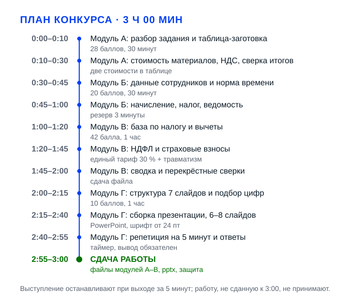
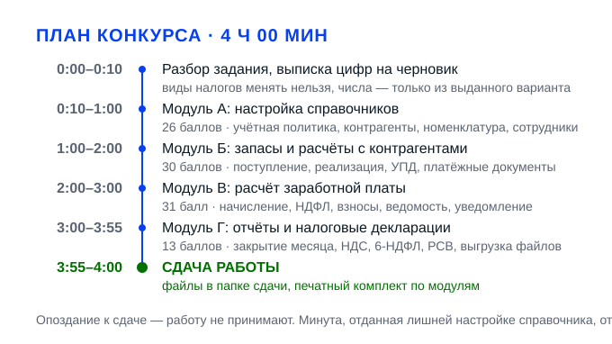
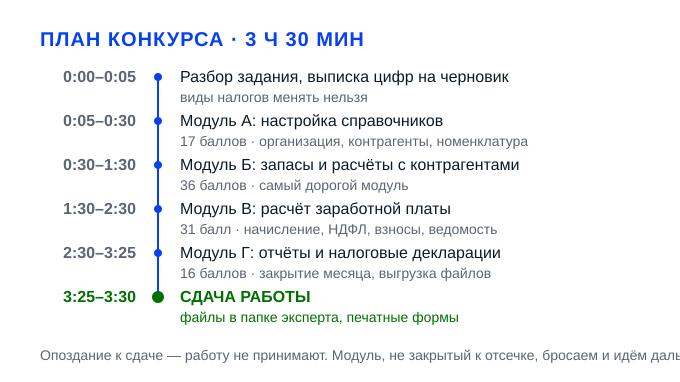

Налоговый консультант (Р)
Задания ниже — официальные файлы «Абилимпикс» (источник: abilympics-russia.ru), разложенные по категориям. Решения написаны по тексту задания, регламенту и критериям оценки; в них указано, что именно проверяет эксперт.
Школьник
14–16 лет, базовый уровень заданияВыдержка из официального конкурсного задания: страницы, относящиеся к категории «Школьник» (стр. 11–13 источника).
Пошаговое решение
Задание для школьников собрано из четырёх модулей на 100 баллов и идёт ровно 3 часа: модуль А — стоимость материалов и НДС, 30 минут и 28 баллов, модуль Б — расчёт заработной платы, 30 минут и 20 баллов, модуль В — НДФЛ и страховые взносы, час и 42 балла, модуль Г — презентация «Налоги и их роль в деятельности государства», час и 10 баллов. Вес модулей неравномерный: двадцать минут арифметики в модуле В стоят вдвое дороже получаса в модуле А, поэтому время внутри трёх часов распределяют не поровну, а по баллам. Считать придётся вручную или в электронных таблицах, калькулятор разрешён, телефон и планшет запрещены, а перед стартом главный эксперт вправе изменить до 30 процентов данных — количество, стоимость, наименования и фонд оплаты труда, — так что заучить ответы нельзя. Ниже — пошаговый разбор всех четырёх модулей: что делать, зачем, как проверить себя и где обычно теряют баллы.

Задача 1. Посчитать стоимость материалов и стоимость с НДСМодуль А · 28 баллов
Первый модуль — самый простой по смыслу и самый обидный по потерям: 28 баллов из 100 дают за таблицу, в которой перемножены количество на цену, начислен налог и подведён итог. Времени 30 минут, и этого хватает с запасом, если сразу собрать правильную форму таблицы, а не заполнять числа в произвольном порядке. Результат модуля по заданию — расчётные таблицы, то есть оформленный документ, а не черновик с цифрами: эксперты смотрят и на числа, и на то, можно ли по вашей таблице проверить расчёт, не переспрашивая участника.
Действие 1.1. Разобрать задание и выписать исходные данные
Шаг 1.1.1
Первые минуты модуля не считаем, а читаем. Кладём перед собой лист с заданием, рядом — Налоговый кодекс и карандаш, и подчёркиваем всё, что можно посчитать: наименования материалов, единицы измерения, количество, цену и ставку налога. На полях помечаем, какие таблицы требуются на выходе — по заданию результат модуля А это расчётные таблицы, то есть стоимость материалов и стоимость с НДС. Отдельно обводим фразу про 30 процентов изменений: главный эксперт вправе поменять количество, стоимость и наименования, поэтому ни одно число из прошлогодних тренировок не переносим.
Модуль А стоит 28 баллов из 100 и длится всего 30 минут, значит каждая минута внимательного чтения возвращается точностью. По п.2.3 задания первый шаг — изучение конкурсного задания и выделение ключевых моментов, и эксперты смотрят, работал участник с текстом или считал по памяти. Ловушка вариативной части в том, что данные меняют перед стартом: решение по прошлому году даёт красивую таблицу с нулевым баллом.
На черновике должны появиться три вещи: перечень материалов с количеством, ставка налога и формулировка требуемого результата. Проверьте себя вопросом: если эксперт заменит наименование материала, придётся ли перестраивать таблицу? Если да — задание разобрано не до конца.
Ошибка новичка — открыть таблицу сразу и начать вбивать числа, не дочитав до абзаца, где сказано, что часть цен уже включает налог. Тогда таблица считается дважды, а на 30 минут это роскошь: второго захода обычно не остаётся, и модуль сдаётся с недоделанной половиной строк.
Эксперт проходит по площадке в первые пять минут и отмечает, читает участник задание или сразу печатает; в протоколе это идёт как понимание задания и влияет на оценку полноты расчёта.
Шаг 1.1.2
Сразу создаём заготовку таблицы, пока данных ещё немного: в первой строке — номер позиции, наименование, единица измерения, количество, цена без налога, стоимость без налога, ставка, сумма налога, стоимость с налогом. Шапку делаем в две строки, объединяя ячейки над парами «ставка и сумма», и закрепляем её, чтобы при прокрутке не терять названия столбцов. Ниже оставляем пустую строку под итоги, а сам расчёт начинаем не раньше, чем структура проверена глазами.
Готовая структура — это страховка от главной потери времени в модуле: когда столбцы уже стоят на своих местах, добавление новой позиции занимает секунды. Кроме того, оценка идёт за расчётную таблицу, а таблица без шапки и итоговой строки читается экспертом как черновик, за который баллы снижают, даже если числа верны.
Шапка читается сверху вниз без догадок: видно, где цена без налога, где налог, где итог. Итоговая строка отделена пустой строкой и подписана словом «Итого». Проверьте на узком экране: если столбцы расползлись, сузьте их до ширины заголовка.
Считать в одной большой ячейке через знак равенства, вписывая туда всю формулу с числами: потом невозможно ни проверить, ни исправить, а при изменении одной цены пересчитывать приходится всё вручную. Кроме того, из-за широкой ячейки не видно, где кончается один расчёт и начинается другой, и при проверке приходится пересчитывать всё заново.
Оформление результата входит в оценку модуля отдельно от арифметики: эксперт должен видеть логику расчёта по шапке, не задавая вопросов. Смотрит он и на то, отделена ли итоговая строка: по ней сразу понятно, доведён расчёт до конца или оборван на середине.
Шаг 1.1.3
Проходим по строкам и приводим единицы измерения к одному виду внутри столбца: килограммы к килограммам, штуки к штукам, метры к метрам. Если материал дан в тоннах, а цена за килограмм — переводим количество в килограммы и записываем это действие в отдельный столбец «примечание», чтобы проверяющий видел основание. Дробные количества (2,5 кг, 0,75 м) оставляем в том же виде, что в задании, но проверяем, что в ячейке стоит число, а не текст.
Пересчёт единиц — самый частый источник ошибки на порядок: тонна вместо килограмма даёт тысячекратное расхождение, и такой итог виден сразу, зато исправлять его приходится вместе со всей таблицей. Аккуратная запись основания пересчёта ещё и показывает эксперту, что участник понимает физический смысл строки, а не механически перемножает.
Проверьте каждую строку вопросом «в чём измеряется цена и в чём количество, совпадает ли?». Числа в столбце количества должны выровняться по правому краю: если какое-то прижалось влево, значит оно записано как текст и в формуле даст ноль.
Записать «1,5 т» текстом или через пробел вместо запятой: ячейка становится текстовой, умножение выдаёт ошибку или ноль, а беглая проверка этого не замечает — итог просто оказывается меньше на целую позицию.
Эксперт выборочно сверяет две-три строки с заданием, обращая внимание именно на единицы измерения: расхождение в порядках считается грубой ошибкой расчёта.
Действие 1.2. Рассчитать стоимость материалов без налога
Шаг 1.2.1
В первой строке расчёта пишем формулу «количество умножить на цену» и тянем её вниз за правый нижний угол ячейки — так в каждой строке окажется своя пара сомножителей. Для этого количество и цену держим в отдельных столбцах, а не в одном: тогда ссылка на цену остаётся относительной по строке и абсолютной по столбцу. Если цена одинакова для нескольких позиций, ставим её один раз в отдельную ячейку и ссылаемся на неё со знаком доллара, чтобы при копировании ссылка не съезжала.
Раздельные столбцы — это не педантизм: по ним видно, откуда взялось каждое число, и эксперт может проверить любую строку за пару секунд. Формула вместо вписанного результата нужна ещё и потому, что при замене одной цены таблица пересчитывается сама, а в модуле с вариативной частью такая замена вполне возможна.
Сумма в первой строке считается в уме: умножьте количество на цену на калькуляторе и сравните. Убедитесь, что при протягивании формулы вниз числа в строках разные — одинаковые означают, что ссылка закрепилась не там.
Вписать во все строки одну и ту же сумму, посчитанную для первой позиции: ошибка выглядит безобидно, а обнуляет весь модуль, потому что итог перестаёт зависеть от количества. Вторая частая причина — скопировать ячейку без формулы, через вставку «только значения», и потом искать, почему при замене цены ничего не пересчиталось.
Эксперт открывает любую строку и смотрит строку формул вверху листа: наличие формулы с относительными ссылками отмечается как правильная технология расчёта.
Шаг 1.2.2
Подводим итог по столбцу стоимости: ставим курсор в ячейку под последней строкой и нажимаем кнопку автосуммы, после чего проверяем, что в рамку попали именно строки с материалами, а не пустая строка и не заголовок. Затем пересчитываем итог вторым способом — складываем на калькуляторе округлённые до копеек значения из столбца, а не исходные числа из задания.
Двойной счёт — единственный надёжный способ поймать ошибку в одном из слагаемых: при сложении десяти строк разница в копейку почти всегда означает, что одна строка выпала из диапазона. Итог по модулю А стоит весомую часть из 28 баллов, поэтому проверка занимает полторы минуты и окупается целиком.
Итог в таблице и итог на калькуляторе совпадают до копейки. Количество строк в диапазоне равно количеству материалов в задании: посчитайте их пальцем, а не на глаз. Затем щёлкните по ячейке итога: в строке формул должен стоять диапазон от первой до последней строки таблицы, без пустых строк внутри.
Растянуть автосумму на пустые строки ниже таблицы — тогда после добавления новой позиции она не попадёт в итог, и расхождение обнаружится только при сдаче, когда времени на пересчёт уже нет. Вторая ошибка — сложить не весь столбец, а только видимую часть: если строк больше двадцати и экран прокручен, последние позиции молча выпадают.
Итоговая строка проверяется в первую очередь: по ней эксперт понимает, верно ли участник понял задачу целиком. Отдельно фиксируется, совпадает ли количество обсчитанных позиций с заданием: пропущенная строка видна именно по счётному расхождению, а не по сумме.
Шаг 1.2.3
Задаём денежный формат ячейкам: две цифры после запятой, разделитель разрядов, выравнивание по правому краю. Округление делаем на уровне отображения, а не формулой «округлить», иначе сумма округлённых значений разойдётся с округлением суммы. Если в задании прямо сказано округлять каждую строку до копеек, тогда наоборот — применяем функцию округления к каждой строке и только потом суммируем.
Копейки в налоговом расчёте не мелочь: итог с тремя знаками после запятой читается как незавершённый расчёт, а расхождение между суммой округлённых и округлением суммы — классическая придирка проверяющих. Формат заодно защищает от случайного превращения числа в дату, что в электронных таблицах случается с записями через точку.
Все деньги выглядят одинаково: две цифры после запятой, ровные столбцы, нет зелёных треугольников в углу ячейки. Сумма крайних значений и общий итог сходятся при пересчёте вручную. Проверьте одну ячейку по строке формул: там должно быть число, а не текст в кавычках, иначе сумма проигнорирует строку.
Оставить общий формат: числа прыгают от «12,5» к «1250,333333», и в итоговой строке появляются знаки, которых в задании нет. Проверяющий считает это небрежностью оформления и снижает балл за качество таблицы.
Формат и точность — отдельный пункт критериев качества расчётной таблицы; эксперт смотрит на них до того, как начнёт сверять числа. Ему важно увидеть единый денежный формат во всех строках: разнобой в знаках после запятой читается как незавершённая работа.
Действие 1.3. Начислить налог и получить стоимость с НДС
Шаг 1.3.1
Считаем налог построчно: в столбце «сумма налога» ставим формулу «стоимость без налога умножить на ставку и разделить на сто». Ставку берём из задания, а не из головы: основной вариант — 20 процентов, но в вариативной части может появиться и 10, поэтому ставку выносим в отдельную ячейку и ссылаемся на неё, чтобы замена одного числа пересчитала весь столбец.
Отдельный столбец налога нужен потому, что задание требует две стоимости — без налога и с налогом, а значит проверяющий должен видеть сам налог. Ссылка на одну ячейку со ставкой экономит время при изменении данных и исключает ситуацию, когда в половине строк стоит 20, а в половине 18 процентов.
Проверьте на первой строке вручную: при ставке 20 процентов налог равен ровно пятой части стоимости без налога. Если получается в десять раз больше или меньше, в формуле потерян или добавлен множитель сто.
Умножить на 0,2 в одной строке и на 20 в другой: вторая строка вырастает в сто раз, и итог перестаёт быть похож на правду. Ещё одна частая ошибка — начислить налог на цену, которая уже включает его, то есть посчитать двадцать процентов сверху второй раз.
Эксперт выборочно пересчитывает две строки и сравнивает со своей эталонной таблицей, поэтому каждая строка должна считаться отдельно, а не выводиться из общего итога.
Шаг 1.3.2
Складываем стоимость без налога и сумму налога в столбце «стоимость с налогом», а рядом, в свободной ячейке, делаем контрольный пересчёт через коэффициент 1,2: умножаем итог без налога на 1,2 и сравниваем два результата. Если в задании даны цены, уже включающие налог, порядок обратный — сначала получаем стоимость с налогом прямым умножением количества на цену, а налог выделяем расчётным методом.
Коэффициент 1,2 — самый быстрый способ поймать смысловую ошибку: он проверяет, что налог начислен сверху, а не вычтен из цены. Именно на этом различии построена вторая половина модуля, и путаница между «плюс налог» и «в том числе налог» стоит дороже любой арифметической описки.
Итог с налогом больше итога без налога ровно на двадцать процентов: разделите первое на второе и убедитесь, что получается 1,2. Разница должна совпадать с суммой столбца налога до копейки. Если коэффициент вышел 1,18 или 1,1, значит в отдельных строках стоит другая ставка — ищите её по столбцу налога.
Взять цену из задания, которая уже включает налог, и прибавить к ней двадцать процентов ещё раз: таблица выглядит правдоподобно, но расходится с эталоном на величину налога по каждой строке, и баллы снимают по всем позициям сразу.
Эксперт сверяет соотношение двух итогов: если оно не равно коэффициенту ставки, модуль считается нерешённым независимо от красоты таблицы. Дополнительно он смотрит, есть ли в таблице столбец с самим налогом: без него проверить начисление можно только обратным счётом.
Шаг 1.3.3
Если в задании встречается цена с пометкой «в том числе НДС», выделяем налог расчётной ставкой: сумму с налогом умножаем на 20 и делим на 120 при ставке 20 процентов, а стоимость без налога получаем вычитанием. При ставке 10 процентов расчётная ставка будет 10/110. Записываем это отдельным блоком таблицы с подписью «в том числе НДС», чтобы два разных способа не смешивались в одном столбце.
Расчётная ставка — тот пункт, который отличает школьника, понимающего механику налога, от школьника, заучившего одну формулу. Она же прямо опирается на Налоговый кодекс, который разрешено держать на столе, поэтому при сомнении открываем статью и сверяем формулировку, а не угадываем.
Проверка простая: выделенный налог плюс стоимость без налога дают исходную сумму до копейки. Второй контроль — налог должен быть меньше пятой части исходной суммы: при ставке 20 процентов правильная доля равна одной шестой части суммы с налогом.
Посчитать 20 процентов от суммы с налогом напрямую: получается завышенный налог, и стоимость без налога уходит в минус относительно эталона. Ошибка тихая, потому что суммы выглядят разумно и ни одна ячейка не выдаёт ошибку.
Это разграничение — измеримый критерий модуля: эксперт проверяет, совпадает ли выделенный налог с эталоном, и по расхождению сразу видит применённую ставку.
Действие 1.4. Проверить таблицу и сдать результат
Шаг 1.4.1
Делаем три перекрёстные проверки подряд. Первая: итог без налога, умноженный на коэффициент, равен итогу с налогом. Вторая: сумма столбца налога равна разнице двух итогов. Третья: количество строк совпадает с числом материалов в задании, а каждая цена в таблице совпадает с ценой в задании — сверяем по порядку, водя пальцем по двум документам одновременно.
Три проверки закрывают три разных типа ошибок: смысловую (налог начислен не туда), арифметическую (потеряна строка) и механическую (перепутана цена при вводе). В модуле на 28 баллов каждая из них стоит нескольких баллов, а вместе они занимают не больше четырёх минут.
Все три равенства выполняются одновременно. Если сходится только два из трёх, ищите причину в третьем, а не начинайте пересчёт заново: чаще всего дело в одной строке, выпавшей из диапазона суммы. Третья проверка выполняется глазами: пробегите столбец цен и сравните с заданием — опечатка в одной цифре даёт расхождение, которого не видно в итогах.
Проверять только итог, не сверяя построчно с заданием: итог может сойтись при двух взаимных ошибках, например когда в одной строке цена завышена, а в другой занижена на ту же величину. Эксперт при сверке это увидит, а участник уже сдал работу.
Перекрёстные проверки — то, что отличает уверенный результат от случайного: эксперт видит, что числа в таблице не противоречат друг другу. Он может попросить объяснить, откуда взялся итог, и по ответу сразу понятно, считал участник сам или перенёс готовое число.
Шаг 1.4.2
Оформляем лист как документ: сверху название «Расчёт стоимости материалов», ниже строка с вариантом задания и датой, затем таблица, под ней итоги и подпись «Исполнитель». Убираем с листа всё лишнее — черновые вычисления, случайные числа в дальних столбцах, пустые листы. Настраиваем область печати так, чтобы таблица поместилась на одну страницу по ширине, и проверяем предпросмотр.
По заданию результат модуля — расчётные таблицы, то есть документ, который читают. Оформление влияет на оценку качества, а кроме того, лист с названием и вариантом невозможно перепутать при сдаче, что в потоке из десятка участников случается. Одна страница по ширине — гарантия, что таблица не расползётся на два листа с обрезанным последним столбцом.
В предпросмотре видно всю таблицу целиком, шапка повторяется, ни один столбец не уехал на второй лист. Название и номер варианта на месте, лишних листов в книге нет. Проверьте масштаб: если таблица уменьшена до нечитаемого, лучше сузить столбцы, чем печатать мелким шрифтом.
Печатать «как есть», не заглянув в предпросмотр: половина участников обнаруживает, что последний столбец с итогом обрезан, уже после распечатки, и переделывать нет времени. Вторая ошибка — оставить на листе черновые вычисления в дальних столбцах: эксперт видит два разных итога и не понимает, какой считать верным.
Качество оформления — самостоятельная часть критериев модуля, и эксперт оценивает лист до того, как начнёт считать. Наличие названия, варианта и подписи исполнителя для него признак того, что работа доведена до документа, а не брошена на уровне черновика.
Шаг 1.4.3
Сохраняем файл по правилам площадки: имя из фамилии и названия модуля, формат, указанный в задании, в папку, названную экспертом. Если требуется распечатать — печатаем сразу, не откладывая на последнюю минуту, и складываем лист в папку сдачи. Оставляем себе три-четыре минуты до конца модуля: за это время проверяем ещё раз первую строку и итог, но уже ничего не пересчитываем.
Три-четыре минуты резерва — это привычка, которая спасает не от арифметики, а от организационных потерь: зависший принтер, неверное имя файла, забытая папка. По правилам конкурса работа, не сданная в срок, не оценивается, и 28 баллов модуля А обнуляются целиком, какими бы точными ни были расчёты.
Файл лежит там, где просили, имя совпадает с шаблоном, печать вышла полностью. Проверьте по списку требований задания: формат, имя, папка, бумажная копия — все четыре пункта закрыты. Загляните в свойства файла: дата изменения должна быть сегодняшней, иначе вы смотрите на старую версию.
Сохранять в последнюю секунду, когда таймер уже показывает ноль: сохранение прерывается, файл остаётся пустым или повреждённым, и апелляция не поможет — по регламенту время истекло. Вторая ошибка — сохранить в свою папку вместо папки сдачи: работа физически есть, но эксперту её не передали.
Сдача фиксируется экспертом по факту наличия файла и листа в папке; отсутствие одного из двух приравнивается к несданной работе. Поэтому доклад «я всё посчитал» без файла не принимается, а спокойно названное имя файла и номер листа снимает все вопросы.
Задача 2. Рассчитать заработную плату и заполнить расчётную ведомостьМодуль Б · 20 баллов
Второй модуль длится 30 минут и стоит 20 баллов: нужно превратить список сотрудников с окладами и отработанным временем в расчётную ведомость, где по каждому человеку видно начисление, удержание и сумму к выплате. Работа механическая, но именно в ней теряют баллы на округлениях и на забытом районном коэффициенте. Опора — трудовые нормы и Налоговый кодекс, который лежит рядом на столе: ставки, вычеты и порядок округления сверяются по документу, а не по памяти.
Действие 2.1. Собрать данные по сотрудникам
Шаг 2.1.1
Строим таблицу-табель: фамилия и инициалы, должность, оклад, отработанные дни и часы, премия, количество детей и другие вычеты. Каждого сотрудника — отдельной строкой, даже если у двух одинаковые оклады: в ведомости важна именно привязка к человеку. Числа из задания переносим по одному, проговаривая про себя: «Иванов, оклад двадцать пять тысяч, отработал восемнадцать дней из двадцати одного».
Привязка к человеку — не формальность: суммы к выплате персональные, и спутать строки при заполнении легко, а найти ошибку потом почти невозможно. Проговаривание вслух или шёпотом снижает число описок: в модуле на 20 баллов две перепутанные цифры стоят столько же, сколько неверная формула.
Число строк в таблице равно числу сотрудников в задании, и ни одна должность не осталась без оклада. Проверьте, что оклады совпадают с заданием до последней цифры: сравните попарно, водя пальцем по двум листам.
Свалить всех в одну строку «работники цеха, оклад 25 000» — потом невозможно посчитать вычеты и удержания по каждому, а ведомость требует персональных сумм. Вторая ошибка — потерять сотрудника, который в задании упомянут не в списке, а в примечании.
Полнота исходных данных — первый пункт оценки модуля: эксперт сверяет список фамилий с заданием и сразу видит пропуск. Отдельно отмечается, есть ли в таблице основание для каждой надбавки — иначе начисление выглядит выдуманным.
Шаг 2.1.2
Определяем норму рабочего времени месяца по производственному календарю: сколько рабочих дней и часов приходится на месяц, за который считаем. Норму записываем в отдельную ячейку над таблицей, чтобы она была видна и не потерялась при копировании. Если в задании указаны часы, а не дни, норму берём в часах, и тогда все дальнейшие расчёты идут в часах, а не в днях.
Норма — знаменатель всех дальнейших формул, и ошибка в ней искажает каждую строку ведомости одинаково. Отдельная ячейка с нормой нужна ещё и потому, что при вариативных изменениях задания месяц могут поменять, и тогда достаточно исправить одно число, а не пересчитывать таблицу целиком.
Норма совпадает с календарём: например, при двадцати одном рабочем дне в месяце и сорокачасовой неделе получается сто шестьдесят восемь часов. Сумма отработанных дней по всем сотрудникам не превышает норму, если в задании нет совместителей.
Взять норму «на глаз», по прошлому месяцу: календарь меняется от месяца к месяцу, и расчёт по чужой норме даёт систематическое расхождение во всех строках — эксперт видит его по первой же позиции. Вторая ошибка — смешать дни и часы: часть строк посчитана в днях, часть в часах, и ведомость рассыпается.
Умение работать с нормой времени входит в критерий расчёта показателей: эксперт проверяет знаменатель дроби раньше, чем числитель. Если норма вынесена в отдельную подписанную ячейку, вопросов к методике обычно не возникает.
Шаг 2.1.3
Проходим по каждому сотруднику и отмечаем особые условия, которые даны в задании текстом: принят в середине месяца, был в отпуске или на больничном, работает на полставки, имеет детей. Эти пометки ставим отдельным столбцом «примечание», а не держим в голове, потому что через пятнадцать минут расчёта детали забываются. Затем считаем, у кого отработанные дни меньше нормы, и обводим такие строки.
Особые условия меняют формулу: сотруднику, принятому с середины месяца, нельзя платить полный оклад, а работающему на полставки — нельзя считать вычет на ребёнка в двойном размере без основания. Пометки в отдельном столбце — единственный способ не потерять эти нюансы, когда таблица заполнена числами.
Все обстоятельства из задания нашли отражение в таблице: у каждого отклонения есть пометка, у каждого ребёнка — запись о вычете. Сверьтесь с текстом задания по абзацам, а не по памяти, и отметьте галочкой каждый абзац, который уже учтён.
Пропустить фразу «принят с 10 числа» и начислить полный оклад: строка выглядит правдоподобно, но расходится с эталоном, и балл снимается за всё начисление по этому сотруднику. Так же теряется вычет, если ребёнок упомянут не в списке, а в примечании к нему.
Учёт индивидуальных условий — часть измеримого критерия: эксперт смотрит, совпадает ли начисление по «сложным» строкам с эталоном, и часто начинает проверку именно с сотрудника, у которого в задании есть оговорка.
Действие 2.2. Начислить заработную плату
Шаг 2.2.1
Оклад за отработанное время считаем пропорционально: оклад делим на норму дней и умножаем на фактически отработанные дни. Для сотрудника, отработавшего полный месяц, оставляем оклад без изменений — пересчёт через дробь даёт тот же результат, но добавляет риск округления. Формулу пишем в ячейке и тянем вниз, чтобы в каждой строке были свои дни и свой оклад.
Пропорциональный расчёт — требование трудового расчёта: платить полный оклад за неполный месяц нельзя, и в ведомости это видно по несоответствию дней. Формула вместо ручного числа нужна для проверки: эксперт открывает ячейку и сразу понимает логику начисления, а не догадывается о ней.
У сотрудника с полным месяцем начисление равно окладу до копейки. У сотрудника с неполным — меньше оклада ровно во столько раз, во сколько его дни меньше нормы: проверьте делением на калькуляторе и сравните долю с долей дней.
Разделить оклад на фактические дни вместо нормы: сумма получается завышенной, и ошибка повторяется по всем строкам с отклонениями, а эксперт фиксирует её как неверную методику расчёта. Исправить потом можно только полным пересчётом.
Методика начисления — основной вес модуля: эксперт смотрит на формулу в ячейке, а не только на итог, поэтому расчёт «числом» вместо формулы сразу вызывает вопросы.
Шаг 2.2.2
Добавляем премию: если она задана процентом, считаем от оклада за отработанное время, если суммой — прибавляем как есть. Сверху на всё начисление применяем районный коэффициент, если он указан в задании: для Башкортостана это обычно 15 процентов, и начисляется он на оклад вместе с премией, а не на голый оклад. Каждую надбавку держим отдельным столбцом, чтобы было видно её основание.
Районный коэффициент — самая забываемая строка модуля: без него начисление занижено на пятнадцать процентов у всех сотрудников сразу, и это замечают по итогу фонда оплаты труда. Отдельные столбцы нужны потому, что премия и коэффициент считаются по разным правилам, и объединение их в одну сумму прячет ошибку в основании.
Проверьте на одном сотруднике вручную: оклад за дни плюс премия, умножить на 1,15 — должно получиться начисление в таблице. Если коэффициент в задании не упомянут, его не применяем: лишняя надбавка так же неверна, как забытая.
Начислить коэффициент только на оклад, забыв премию: расхождение небольшое, но оно есть в каждой строке, и суммарно фонд оплаты труда уезжает от эталона на заметную величину. Вторая ошибка — применить коэффициент дважды, к начислению и к итогу.
Эксперт проверяет структуру начисления: видно ли, из каких частей сложилась сумма, и применён ли коэффициент к полному начислению, а не к одной его части.
Шаг 2.2.3
Подводим фонд оплаты труда: суммируем столбец начислений по всем сотрудникам и записываем итог отдельной подписанной строкой, а не в свободную ячейку сбоку. Пересчитываем его вторым способом — складываем оклады за отработанное время, отдельно премии и отдельно коэффициенты — и сравниваем с первым итогом. Расхождение означает, что в одной из строк коэффициент посчитан не от той базы, и искать надо именно там.
Фонд оплаты труда — контрольная цифра всего модуля: по ней эксперт за секунду понимает, попал ли расчёт в эталон. Двойной счёт по частям нужен потому, что итог может сойтись при двух взаимных ошибках, а разложение по основаниям такую пару сразу показывает.
Итог по столбцу равен сумме трёх частных итогов: окладов, премий, коэффициентов. Проверьте также, что итог больше суммы окладов — если меньше, значит где-то потеряна строка или сработала неверная формула.
Поставить в итоговую строку число, посчитанное на калькуляторе отдельно: при любой правке таблицы итог перестаёт соответствовать строкам, и это видно при первой же проверке. Вторая ошибка — суммировать столбец вместе с итоговой строкой, тогда сумма удваивается.
Итог фонда оплаты труда — ключевой показатель модуля, по нему оценивают и правильность, и полноту расчёта: одна цифра показывает, ошибся участник в методике или в отдельной строке.
Действие 2.3. Удержать налог и определить сумму к выплате
Шаг 2.3.1
Определяем вычеты по каждому сотруднику: стандартные на детей — по 1400 рублей на первого и второго, 6000 на третьего и последующих, пока доход с начала года не превысил 450 000 рублей. Вычет применяется к месяцу, в котором предел достигнут, и прекращается со следующего; точные размеры и предел всегда сверяем с действующей редакцией кодекса, потому что законодатель меняет их чаще, чем выходит новое задание.
Вычет уменьшает базу, а не сам налог, и путать эти две вещи нельзя: разница в результате составляет тринадцать процентов от суммы вычета, то есть суммы расходятся на десятки рублей по каждому человеку. Предел в 450 000 рублей проверяется нарастающим итогом, поэтому в задании на несколько месяцев вычет может исчезнуть к концу периода.
Для каждого сотрудника видно основание вычета и его сумма за месяц. Проверьте арифметику предела: сложите доход с января по расчётный месяц и сравните с 450 000 — вычет действует до месяца, в котором сумма превысила предел.
Вычесть сумму вычета из уже посчитанного налога, а не из базы: налог получается заниженным, и по ведомости это расхождение не бросается в глаза, потому что все суммы выглядят правдоподобно. Вторая ошибка — дать вычет на ребёнка, которому уже исполнилось восемнадцать, без основания из задания.
Порядок применения вычетов — отдельный измеримый критерий модуля: эксперт смотрит и на сумму, и на основание, и на то, не применён ли вычет после достижения предела.
Шаг 2.3.2
Считаем налог на доходы: из начисленной суммы вычитаем вычеты и умножаем на 13 процентов. Результат округляем до целого рубля по правилам статьи 52 Налогового кодекса: сумма меньше пятидесяти копеек отбрасывается, пятьдесят и больше — округляется вверх. Формулу пишем отдельной ячейкой и проверяем на первом сотруднике вручную, прежде чем тянуть вниз.
Округление до рубля — не придирка: налог удерживается и перечисляется в рублях и копейках, но по правилам кодекса сумма менее пятидесяти копеек отбрасывается, поэтому расчёт «в копейках» даёт отличие от эталона в каждом месяце. Ссылка на статью уместна и в самой таблице — примечанием под ведомостью.
Налог по каждому сотруднику меньше начисления примерно на тринадцать процентов и кратен рублю. Проверьте обратным счётом: разделите налог на разницу между начислением и вычетом — должно получиться около 0,13, а не 0,2 и не 0,3.
Умножить на 0,13 и оставить копейки: расхождение с эталоном идёт по всем строкам, и даже верная методика не спасает, потому что итог не совпадает. Вторая ошибка — применить вычет дважды за один месяц.
Ставка и округление проверяются по каждой строке: эксперт сверяет налог с эталонным значением, а не только общий итог, потому что ошибка в вычете одного сотрудника в общем итоге почти не видна.
Шаг 2.3.3
Считаем сумму к выплате: из начисления вычитаем налог, ничего больше не удерживая, если в задании нет исполнительного листа или выданного аванса. Аванс вычитаем отдельной строкой и подписываем её, иначе ведомость не сойдётся с заданием. В конце подводим итог по столбцу выплат и сравниваем его с фондом оплаты труда за вычетом налога. Итог по выплатам подписываем отдельной строкой.
Сумма к выплате — то, ради чего составлена ведомость: по ней расплачиваются с людьми, и её сверяют с заданием первым делом. Отдельная строка под аванс нужна потому, что удержание аванса и удержание налога — разные операции, и путать их в ведомости нельзя.
Проверьте по каждому сотруднику: начисление минус налог минус аванс равно сумме к выплате, а сумма всех выплат плюс весь налог равна фонду оплаты труда. Оба равенства должны выполняться одновременно, иначе ищите ошибку в столбце удержаний.
Забыть вычесть выданный аванс: работник по ведомости получает дважды, итог завышен, и модуль теряет баллы по всем строкам, где аванс упомянут. Вторая ошибка — удержать налог с суммы к выплате, то есть посчитать тринадцать процентов дважды.
Сходимость ведомости — главный признак завершённого расчёта: эксперт сводит начисления и выплаты и смотрит на остаток, который должен быть равен нулю.
Действие 2.4. Оформить ведомость и сдать модуль
Шаг 2.4.1
Оформляем ведомость как документ: название, период, шапка с графами «начислено», «вычет», «налог», «к выплате», итоговая строка и подпись. Ширину столбцов подгоняем под числа, деньги показываем с двумя знаками после запятой, фамилии не обрезаем. Ниже таблицы мелким шрифтом записываем основания: ставка налога, размер вычетов, применённый коэффициент.
Ведомость читают, а не только сверяют: аккуратная шапка и подписи граф позволяют эксперту проверить расчёт, не задавая вопросов, а примечания с основаниями снимают подозрение в случайных числах. За качество оформления в модуле есть отдельная часть баллов, и получить её проще всего.
В предпросмотре видно всю таблицу без обрезков, все графы подписаны, итоговая строка отделена. Прочитайте примечания под таблицей: в них нет противоречий с тем, что стоит в графах, а размеры вычетов совпадают с применёнными в расчёте.
Оставить голые числа без шапки: эксперт не может отличить начисление от выплаты, и балл за оформление снимается целиком, даже если арифметика верна. Вторая ошибка — подписать графы неточно, например «сумма» вместо «к выплате», из-за чего весь документ читается неверно.
Качество расчётной ведомости оценивается отдельно: наличие шапки, итогов и оснований — первое, что видно, и это самые быстрые баллы модуля. Получать их выгоднее всего, потому что они не требуют пересчёта.
Шаг 2.4.2
Проводим контрольные сверки: сумма налога по всем сотрудникам должна равняться тринадцати процентам от общей базы с учётом вычетов, а фонд оплаты труда — сумме начислений. Отдельно пересчитываем на калькуляторе двух сотрудников с усложнёнными условиями: одного с неполным месяцем и одного с детьми, проходя всю цепочку от оклада до выплаты. Результаты сверок записываем под таблицей.
Контрольные сверки ловят ошибки, которые не видны построчно: например, вычет, применённый не тому сотруднику, или коэффициент, посчитанный от премии неправильной базы. Два «сложных» сотрудника проверяются обязательно, потому что именно в них сосредоточены все усложняющие условия задания.
Итоги сходятся по трём контрольным точкам: налог от базы, фонд оплаты труда от начислений, выплаты от разницы. Ручной пересчёт двух «сложных» строк совпадает с таблицей до рубля, и это уже достаточное основание считать модуль закрытым.
Проверить только итог фонда оплаты труда: он может сойтись при ошибке в распределении между сотрудниками, а персональные суммы при этом неверны, и зачёт по строкам не пройдёт. Вторая ошибка — сверять налог от начисления без вычетов.
Эксперт выборочно проверяет две-три строки: чаще всего берутся именно сотрудники с отклонениями от полного месяца, потому что там ошибки концентрируются.
Шаг 2.4.3
Сохраняем файл в папку сдачи с именем по шаблону площадки, при необходимости печатаем ведомость и подписываем. До конца модуля оставляем три минуты: за это время перечитываем требования задания по пунктам — нужен ли отдельный лист с расчётом вычетов, требуется ли печатная копия. Затем переходим к модулю В, не возвращаясь к этому. Папку сдачи проверяем ещё раз перед выходом.
Три минуты резерва и переход без возврата — это управление временем внутри трёх часов: модуль Б стоит 20 баллов, модуль В — 42, и застревание на оформлении съедает баллы там, где их больше. Требования к сдаче перечитываются по пунктам, потому что забытая печатная копия обнуляет весь модуль.
Файл и печать на месте, имя соответствует шаблону, все пункты требований закрыты. Проверьте время: до конца модуля осталось не меньше двух минут, а не секунды, иначе переход к модулю В начнётся в спешке.
Доводить оформление до идеала, пока не кончилось время модуля: лучше сдать аккуратную простую ведомость, чем идеальную, но не сданную. Вторая ошибка — вернуться в модуль Б через полчаса, чтобы поправить шрифт: 42 балла модуля В стоят дороже.
Сдача фиксируется по файлу и листу: эксперт отмечает время сдачи каждого модуля отдельно, и возврат к предыдущему модулю после сдачи не предусмотрен. Возврат к сданному модулю не предусмотрен.
Задача 3. Рассчитать НДФЛ и страховые взносыМодуль В · 42 балла
Самый дорогой модуль задания: час времени и 42 балла из 100, почти половина всей оценки. Здесь нужно пройти полный путь налога — определить, какие выплаты входят в базу, применить вычеты, посчитать налог на доходы и отдельно страховые взносы, включая взносы на травматизм. Работа идёт нарастающим итогом, поэтому одна ошибка в базе тянет за собой и налог, и взносы, и расхождение копится с каждым месяцем. Налоговый кодекс разрешён на столе, и это главный инструмент модуля.
Действие 3.1. Определить базу по налогу на доходы
Шаг 3.1.1
Разбираем выплаты по видам: заработная плата, премия, отпускные и больничные облагаются налогом на доходы, а пособие по беременности и родам, суточные в пределах норм и материальная помощь до 4000 рублей — нет. Каждую выплату из задания выписываем в отдельную строку и ставим напротив плюс или минус, а спорные подчёркиваем и сверяем по кодексу. Затем переносим пометки в таблицу, чтобы каждая выплата стояла в своей строке.
Классификация выплат — фундамент модуля: если необлагаемая сумма попала в базу, ошибка пойдёт и в налог, и в взносы, и в итоговую таблицу. Ссылка на кодекс здесь не формальность: перечень необлагаемых доходов меняется, и в задании его обычно не дублируют, оставляя участнику работу с первоисточником.
Список выплат закрыт: ни одна строка из задания не осталась без пометки, а суммы по облагаемым и необлагаемым позициям в сумме дают общий доход. Проверьте две-три строки по статье кодекса, а не по памяти.
Считать базой весь доход целиком, включая больничные и помощь: база завышена, налог и взносы не совпадают с эталоном, и по 42-балльному модулю это самая дорогая из возможных ошибок. Ошибка тянется по всем месяцам, потому что база считается нарастающим итогом.
Эксперт смотрит именно на разбор выплат: наличие пометок «облагается» и «не облагается» в таблице читается как понимание темы. Отдельно отмечается, умеет ли участник открыть нужную статью кодекса, а не цитировать её по памяти.
Шаг 3.1.2
Определяем налоговый статус: резидент платит по основной ставке, нерезидент — по повышенной, и в задании статус обычно указан словами «работает по трудовому договору постоянно проживает». Ставку выносим в отдельную ячейку таблицы и подписываем. Для доходов сверх установленного порога применяется прогрессия: к части базы сверх порога ставка выше, поэтому при больших суммах считаем по ступеням, а не одной ставкой.
Ставка определяет весь результат: применение 30 процентов вместо 13 там, где человек резидент, завышает налог в два с лишним раза, и это видно по первой же строке. Прогрессивная шкала — то, что отличает расчёт «по-взрослому»: в заданиях с крупными доходами она прямо проверяется.
Ставка в таблице совпадает с той, что следует из статуса в задании, и подписана. Если база превышает порог прогрессии, проверьте, что налог посчитан по ступеням: пересчитайте верхнюю часть отдельно и сложите.
Применить одну ставку ко всей сумме, не заметив прогрессию: при доходе в несколько миллионов расхождение измеряется десятками тысяч рублей, и модуль теряет баллы по всем строкам такого сотрудника. Проверка через эффективную ставку выявляет это за секунды, но только если её делать.
Эксперт сверяет применённую ставку с условиями задания: в протоколе это отдельный пункт, и ошибка здесь обнуляет расчёт по строке целиком. Если статус в задании не указан прямо, его определяют по описанию: постоянное проживание и работа по договору.
Шаг 3.1.3
Применяем вычеты строго по основаниям из задания: стандартные на детей, социальные на обучение и лечение, имущественные при покупке жилья. Каждый вычет записываем отдельной строкой с указанием документа-основания и предельной суммы, установленной кодексом. Социальные и имущественные вычеты предоставляются в заявительном порядке, поэтому без заявления в задании их не применяем.
Вычеты уменьшают базу, и каждый пропущенный или лишний вычет сразу меняет налог. Отдельная строка с основанием нужна для проверки: эксперт видит, откуда взялась сумма, а участник не путает вычет на ребёнка с вычетом на лечение. Требование заявительного порядка — тоже часть знаний, которую проверяют.
Сумма вычетов по строке не превышает базу и не превышает предельную величину из кодекса. Проверьте, что детей в расчёте ровно столько, сколько в задании, и что предел дохода для стандартного вычета не превышен.
Применить вычет, который в задании не заявлен, «на всякий случай»: база занижается, налог не совпадает с эталоном, и снимается балл не только за сумму, но и за понимание порядка предоставления. Лишний вычет почти никогда не замечают сами, потому что сумма налога при этом меньше и выглядит приятнее.
Эксперт проверяет основания вычетов: наличие заявления, документов и соблюдение пределов — это отдельные измеримые пункты критериев. Для социальных вычетов дополнительно проверяется наличие заявления: без него вычет не предоставляется вовсе.
Шаг 3.1.4
Формируем базу по каждому сотруднику: доход нарастающим итогом с начала года минус вычеты, и результат не может быть отрицательным — если вычеты больше дохода, база принимается равной нулю, а разница на следующий месяц не переносится, кроме отдельных случаев. Считаем базу за каждый месяц и отдельно за период целиком, и обе цифры должны сойтись при вычитании.
Нарастающий итог — требование кодекса: налог считается с начала года, и расчёт по одному месяцу даёт неверный результат при переменном доходе. Правило нулевой базы тоже важно: отрицательная база в таблице выглядит как ошибка и говорит о непонимании механики вычета.
База за период равна сумме баз по месяцам, а база за месяц равна доходу месяца минус вычеты месяца. Проверьте одну строку вручную от января до последнего месяца и сравните с таблицей. Столбец базы не содержит отрицательных чисел: если появляется минус, значит вычет применён не в том месяце.
Считать базу только за последний месяц и умножить на число месяцев: при переменных премиях результат расходится с эталоном, а ошибка выглядит логично и потому долго не находится. Правильный порядок — считать каждый месяц отдельно и складывать, а не наоборот.
Нарастающий итог — то, что эксперт проверяет в первую очередь в этом модуле: по нему видно, понимает участник механику или копирует цифры. При переменном доходе эксперты специально смотрят месяц, в котором выплата была наибольшей.
Действие 3.2. Исчислить налог на доходы и удержать его
Шаг 3.2.1
Считаем налог по каждой строке: база умножается на ставку, а при доходе сверх порога прогрессии налог складывается из двух частей — по основной ставке от суммы в пределах порога и по повышенной от превышения. Формулу пишем так, чтобы обе части были видны отдельными ячейками, иначе проверка невозможна. Итог по столбцу подводим после того, как посчитаны все строки.
Двухступенчатый расчёт — самый наглядный способ не ошибиться в прогрессии: видно, какая часть дохода обложена по какой ставке. Разделение на ячейки нужно и для эксперта, который по структуре таблицы понимает методику, и для участника, который может пересчитать любую часть отдельно.
Проверьте на одном сотруднике: сумма двух частей равна налогу в итоговой ячейке, а при доходе ниже порога вторая часть равна нулю. Налог должен составлять от 13 до 22 процентов базы в зависимости от ступени.
Применить повышенную ставку ко всей сумме, а не к превышению: налог вырастает невероятно, но в таблице это выглядит как обычное число, и без сверки с эталоном ошибку не поймать. Проверьте порог прогрессии по заданию: если доход ниже, второй части быть не должно вовсе.
Эксперт смотрит на структуру расчёта: разделение на ступени читается как владение темой, единая ставка при крупном доходе — как её незнание. Наличие двух ячеек для двух ступеней эксперт воспринимает как уверенное владение темой.
Шаг 3.2.2
Округляем налог до целого рубля по статье 52 кодекса: сумма менее пятидесяти копеек отбрасывается, пятьдесят и более — округляется вверх. Округление делаем один раз, в момент исчисления налога, а не на каждом шаге: если округлять базу, а потом налог, накопится расхождение в несколько рублей. Удержание показываем в отдельном столбце, чтобы было видно, что налог именно удержан.
Округление — та мелочь, из-за которой верный по методике расчёт не совпадает с эталоном. Однократное округление в конце цепочки — правило, которое стоит запомнить: оно одинаково работает и в налоге, и в взносах. Отдельный столбец удержания нужен потому, что оценивается и исчисление, и удержание.
Все значения налога — целые рубли, без копеек и без знаков после запятой. Сумма удержанного по всем сотрудникам равна сумме исчисленного: если появилось расхождение, значит где-то округление сделано дважды.
Округлить базу, а потом налог: расхождение в один-два рубля по каждому сотруднику, и в итоговой сумме оно становится заметным, а найти его источник почти невозможно. Правило простое: округляется один раз и только итог налога по строке.
Эксперт сверяет суммы с точностью до рубля: копейки в столбце налога сразу помечают расчёт как незавершённый. Копейки в столбце налога — верный признак того, что округление не выполнено ни разу.
Шаг 3.2.3
Сверяем налог обратным счётом: сумма налога делится на базу и даёт эффективную ставку, которая должна лежать между 13 и 22 процентами, а при отсутствии прогрессии — быть ровно 13. Отдельно проверяем двух сотрудников с вычетами: у них эффективная ставка ниже, и это нормально. Итог по столбцу налога записываем в сводку. Строку с эффективными ставками выносим под таблицей, чтобы она была видна при проверке.
Эффективная ставка — быстрый индикатор: она выходит за границы диапазона только при ошибке в базе, ставке или прогрессии. Проверка занимает полминуты и ловит именно те ошибки, которые не видны построчно. Сводка по налогу понадобится в итоговой таблице модуля.
Эффективная ставка по каждому сотруднику в допустимом диапазоне, у сотрудников с детьми — ниже основной. Сумма налога в сводке равна сумме по столбцу до копейки. Проверять удобно по крайним строкам: самый большой и самый маленький доход.
Сверять только общий итог: он сходится и при двух взаимных ошибках, например когда одному сотруднику ставка завышена, а другому занижена, и модуль теряет баллы по строкам при верном итоге. Эффективная ставка в этом случае выходит за границы диапазона, и это первый сигнал искать ошибку.
Эксперт проверяет налог по строкам и по эффективной ставке: расхождение в процентах для него убедительнее, чем совпадение итога. Если эффективная ставка по строке равна 13,0 процента, значит вычеты в этой строке не применялись.
Действие 3.3. Рассчитать страховые взносы
Шаг 3.3.1
Составляем базу по взносам отдельно от базы по налогу: в неё входят выплаты по трудовым договорам — зарплата, премии, отпускные, больничные за счёт работодателя, — но не входят государственные пособия, суточные и материальная помощь в пределах лимита. Строим второй столбец рядом с налоговым, а не берём готовую базу налога: различия между ними и есть суть задания.
Базы не совпадают, и это главная ловушка модуля: часть выплат облагается налогом, но не взносами, и наоборот. Если механически взять налоговую базу, взносы разойдутся с эталоном на всю сумму исключений, а баллы снимутся по всем строкам сразу. Именно из-за этого в таблице нужен отдельный столбец, а не копия налогового.
Разница между базами объяснима: посчитайте её и назовите причину — например, пособие по временной нетрудоспособности за счёт фонда. Если объяснить разницу не получается, значит одна из баз собрана неверно.
Взять налоговую базу как базу взносов: суммы выглядят правдоподобно, но расхождение с эталоном систематическое, и обнаруживается только при сверке по строкам. Разница видна только при построчной сверке баз, поэтому её и делают отдельным шагом.
Раздельный расчёт баз — ключевой измеримый критерий модуля В: именно здесь видно, понимает участник разницу между налогом и взносами. Наличие двух столбцов баз в одном листе — самый быстрый признак правильного подхода.
Шаг 3.3.2
Начисляем взносы по единому тарифу: 30 процентов с базы в пределах предельной величины и 15,1 процента с части, превышающей предел. Внутри тридцати процентов выплаты раскладываются на пенсионное, медицинское и социальное страхование — 22, 5,1 и 2,9 процента, и эту разбивку показываем отдельными столбцами, потому что она нужна для отчётности. Предельную величину базы на текущий год берём из кодекса или из задания.
Единый тариф с разбивкой — то, что проверяется построчно: сумма трёх частей должна равняться тридцати процентам, и любое расхождение означает ошибку в одной из ставок. Пониженный тариф сверх предела тоже входит в оценку: в заданиях с крупными выплатами он применяется обязательно.
Сумма трёх столбцов равна тридцати процентам базы до копейки. Для выплат сверх предела проверьте, что к превышению применена ставка 15,1, а не 30: пересчитайте верхнюю часть отдельно. Проверяйте суммой: три столбца вместе должны дать ровно тридцать процентов базы.
Начислить тридцать процентов на всю сумму, включая превышение предела: взносы завышены, и ошибка тем больше, чем крупнее выплаты, а в таблице она выглядит как обычный результат. Ошибка проявляется только в строках с крупными выплатами, в остальных всё сходится.
Эксперт сверяет и общую ставку, и разбивку: наличие трёх столбцов с пенсионными, медицинскими и социальными взносами — отдельный пункт. Разбивка нужна ещё и потому, что по ней потом заполняют отчётность в фонды.
Шаг 3.3.3
Считаем взносы на страхование от несчастных случаев отдельно от единого тарифа: ставка зависит от класса профессионального риска и указывается в задании, чаще всего это 0,2 процента. База — те же выплаты по трудовым договорам, но предельная величина к этому виду страхования не применяется, поэтому взнос начисляется со всей суммы. Записываем его отдельной строкой сводки.
Взносы на травматизм не входят в тридцать процентов и не уменьшают единый тариф: это отдельный платёж, и его забывают чаще всего, теряя баллы при верном расчёте основной части. Отсутствие предельной базы — тоже особенность, которую проверяют. В сводке он идёт последней строкой, отдельно от тридцати процентов.
Взнос равен ставке от всей базы, включая суммы сверх предела единого тарифа. Проверьте: при базе в сто тысяч и ставке 0,2 процента получается двести рублей — если вышло иначе, ставка взята неверно. Ставку берите из задания: она зависит от класса профессионального риска организации.
Сложить травматизм с тридцатью процентами в один столбец: сводка перестаёт показывать структуру платежей, и эксперт не может проверить каждую часть, а балл за полноту расчёта снимается. Проверяется это одной строкой сводки, поэтому пропуск заметен сразу.
Эксперт смотрит, есть ли отдельная строка по травматизму: её отсутствие фиксируется как неполный расчёт независимо от остальных сумм. Ставка травматизма в задании обычно дана отдельной фразой, её легко пропустить при чтении.
Шаг 3.3.4
Сводим взносы: сумма по сотрудникам, сумма по видам страхования и сумма с нарастающим итогом с начала года. Проверяем округление — взносы считаются в рублях и копейках, поэтому копейки сохраняем, в отличие от налога, и не округляем до целого. Итог по каждому виду записываем в сводную таблицу с подписью. Значения выравниваем по правому краю, чтобы копейки не съезжали при печати.
Правила округления у налога и взносов разные, и это одна из тех деталей, по которым видно уровень подготовки: налог — в целых рублях, взносы — с копейками. Нарастающий итог нужен потому, что отчётность по взносам строится за период, а не за месяц. Разные правила округления — частая причина расхождения между листами таблицы.
Сумма по сотрудникам равна сумме по видам страхования, а итог с начала года равен сумме месячных итогов. Копейки на месте: в столбцах взносов есть второй знак после запятой. Проверьте, что в столбцах взносов нет округления формулой до целого.
Округлить взносы до рублей «как налог»: расхождение в копейках по каждой строке накапливается, и итог за период не совпадает с эталоном. Найдите расхождение делением: разница должна быть меньше рубля на строку.
Сходимость взносов по двум разрезам — то, что эксперт проверяет последним: если она есть, модуль в основном решён. Копейки в взносах — признак того, что участник знает разницу между налогом и взносами.
Действие 3.4. Собрать сводную таблицу модуля и сдать
Шаг 3.4.1
Собираем сводку по сотрудникам: база по налогу, вычеты, налог, база по взносам, взносы по трём видам страхования, травматизм. Шапку делаем двухуровневой, чтобы столбцы читались группами, а под таблицей ставим три итога: налог, взносы в целом и травматизм отдельно. Числа в сводке берём формулами из расчётных листов, а не переписываем вручную. Под сводкой оставляем место для примечаний, чтобы не сдвигать таблицу при правках.
Сводка — это результат модуля, за который дают 42 балла: по ней эксперт проверяет всё сразу, не листая промежуточные листы. Ссылки на расчётные ячейки вместо ручного переноса исключают описки: одна переписанная цифра может обнулить верный расчёт. Кроме того, сводка позволяет сверить налог и взносы одним взглядом.
Каждая цифра в сводке совпадает с соответствующей ячейкой расчётного листа. Проверьте две строки переходом по ссылке: в строке формул должен стоять адрес ячейки, а не число. Столбцы в сводке идут в том же порядке, что и в расчётных листах.
Переписать сводку руками с расчётного листа: при любой правке расчёта сводка устаревает, и в документе остаются два разных ответа на один вопрос. Две версии одного расчёта — самая частая причина спорной оценки модуля.
Сводная таблица — главный объект оценки модуля: её структура и полнота влияют на балл больше, чем порядок промежуточных листов. Полнота сводки оценивается по наличию всех шести групп столбцов.
Шаг 3.4.2
Проводим перекрёстные сверки: налог от базы, взносы от своей базы, разница между базами объяснена. Отдельно считаем общую нагрузку — сумму налога и взносов от фонда выплат — и сравниваем с ожидаемым порядком величины: около сорока процентов, если нет льготных ставок. Расхождение в разы означает ошибку в базе. Результат записываем в примечание под сводкой, чтобы его было видно при проверке.
Нагрузка от фонда выплат — интегральный контроль: она ловит ошибки, которые не видны в отдельных столбцах, например когда взносы начислены на базу, в которую забыли включить премию. Считается она в одну строку и даёт уверенность во всём модуле. Считается она двумя действиями, поэтому время на неё всегда находится.
Нагрузка в разумных пределах: тринадцать процентов налога плюс тридцать процентов взносов плюс травматизм дают ожидаемый порядок. Если получилось вдвое больше или меньше, ищите причину в базе, а не в ставках.
Считать нагрузку от начисленной суммы без вычетов: показатель выходит завышенным, и участник начинает править ставки, которые были верны. Нагрузка около сорока процентов — норма, выход за пределы говорит об ошибке.
Эксперт оценивает расчёт целиком: сходимость налога, взносов и базы для него важнее отдельных красивых цифр. По нагрузке эксперт понимает, целиком ли собран фонд выплат.
Шаг 3.4.3
Сохраняем файл в папку сдачи с именем по шаблону, при необходимости печатаем. До конца модуля оставляем пять минут и тратим их на перечитывание требований и на проверку первой строки сводки, но не на пересчёт. Затем фиксируем время сдачи у эксперта и переходим к модулю Г, потому что презентация требует спокойной головы. Файл копируем в папку сдачи, а не перемещаем: рабочая версия остаётся у вас.
Пять минут резерва в этом модуле важнее, чем в предыдущих: он самый дорогой, и организационная потеря здесь стоит 42 балла. Переход к презентации без спешки тоже часть плана: модуль Г оценивается за качество изложения, а не за скорость. Пять минут — это ещё и время, чтобы просто выдохнуть перед выступлением.
Файл и печать на месте, имя по шаблону, время сдачи зафиксировано. До конца модуля остаётся не меньше трёх минут, и в сводке нет ячеек с ошибками вида «#ЗНАЧ». Убедитесь, что открывается именно сохранённая версия, а не временный файл.
Досиживать до последней секунды, пересчитывая то, что уже сходится: риск не сдать файл выше, чем вероятность найти ошибку в проверенном расчёте. Вторая ошибка — сдавать модуль, не закрыв расчётные листы: правки после сдачи не принимаются.
Сдача модуля фиксируется отдельно от остальных: эксперт отмечает время и наличие файла, и это влияет на допуск к защите презентации. Отметка о времени сдачи ставится в протокол рядом с отметкой по модулю В.
Задача 4. Подготовить презентацию и защитить её перед экспертамиМодуль Г · 10 баллов
Последний час задания отдан презентации «Налоги и их роль в деятельности государства»: 6–8 слайдов в PowerPoint, выступление не более 5 минут и ответы на вопросы экспертов. Баллов здесь всего 10 из 100, но они оцениваются за качество и полноту изложения, обоснованность выводов и качество презентационного материала, то есть за связную гражданскую позицию, а не за красивые картинки. Задача решается в том же темпе, что и расчётные модули: сначала структура, потом наполнение, потом репетиция с таймером.
Действие 4.1. Собрать материал и выстроить логику
Шаг 4.1.1
Начинаем не с PowerPoint, а с листа бумаги: пишем семь строк — что такое налог, зачем он нужен государству, какие функции выполняет, какие бывают виды и уровни, сколько собирается и куда идёт, что это значит для гражданина, вывод. Семь строк и есть семь слайдов, а восьмой оставляем в резерве под итог или под схему. Каждая строка получает один тезис, который можно произнести одним предложением.
Структура определяет всё остальное: по заданию объём 6–8 слайдов, и если начать с оформления, слайдов почти всегда получается двенадцать, а выступление не укладывается в 5 минут. Семь смысловых блоков закрывают требования к полноте изложения, а один тезис на слайд — требование к качеству материала.
На листе ровно семь строк, ни одна не повторяет другую, и каждая отвечает на вопрос, который эксперт может задать. Проверьте логику: если поменять два блока местами, смысл не разрушится — значит порядок выбран не случайно.
Сразу открыть PowerPoint и набирать текст слайд за слайдом: получается набор фактов без вывода, а критерий требует обоснованных выводов, и балл снимается за отсутствие позиции, а не за оформление. Чаще всего не хватает именно вывода, и три слайда оказываются лишними.
Эксперт оценивает полноту изложения: наличие всех смысловых блоков видно уже по названиям слайдов. Если названия слайдов читаются как план, полнота изложения уже видна.
Шаг 4.1.2
Подбираем факты под каждую строку структуры: доли налогов в доходах бюджета, структуру налоговой системы России по уровням, ставки основных налогов, направления расходов — образование, медицина, дороги, социальные выплаты. Каждую цифру выписываем с источником и годом: сайт Федеральной налоговой службы, Минфина, Росстата или бюджет республики. Работаем с интернет-ресурсами, как указано в задании, но записываем адрес и дату просмотра.
Обоснованность выводов проверяется именно по цифрам: вывод «налоги важны» без числа — общее слово, а вывод «налог на доходы даёт около трети поступлений» уже опирается на факт. Источник нужен и для защиты: на вопрос «откуда данные» участник отвечает адресом и годом, а не пожимает плечами.
К каждой строке структуры есть хотя бы одна цифра или конкретный пример, и у каждой цифры подписан источник. Проверьте, что данные не старше двух-трёх лет: цифры десятилетней давности на защите выглядят как небрежность.
Взять первые попавшиеся цифры из поисковой выдачи без проверки года: на слайде оказываются данные десятилетней давности, и это замечают и эксперты, и посетители чемпионата. Вторая ошибка — взять цифру из блога без первоисточника: на вопрос о происхождении данных ответить нечем.
Достоверность и актуальность данных входят в качество презентационного материала: эксперт сверяет хотя бы одну цифру. Достаточно одной сверенной цифры, чтобы понять, работал участник с источником или с готовым рефератом.
Шаг 4.1.3
Отбираем главное и формулируем позицию гражданина: что налоги дают лично вам и вашей семье — школу, поликлинику, дорогу, выплаты. Формулировку записываем одной фразой и ставим её на слайд с выводом, а не растворяем в тексте. Из каждого блока убираем всё, что не работает на эту мысль, даже если факт интересный: слайд с четырьмя идеями не читается. Всё остальное уходит в запас, а не в корзину: на защите эти факты пригодятся для ответов.
Позиция гражданина — то, что задание называет главной целью: представить тему целостно и проблемно, а не пересказать учебник. Один тезис на слайд нужен и для устной части: пока слайд показывает одну мысль, участник говорит по делу, а не читает мелкий текст вслух.
У каждого слайда есть одна фраза-заголовок, которая сама по себе является утверждением, а не словом «Введение». Прочитайте только заголовки подряд: должна получиться связная история. Ни один заголовок не начинается со слов «Общие сведения» или «Введение».
Оставить на слайде три-четыре мысли и весь текст задания: слайд читают, а не слушают, и внимание зрителя уходит в чтение вместо выступления. Вторая ошибка — оставить текст из интернета с чужими формулировками: он не совпадает с речью и читается как пересказ.
Качество изложения оценивается по связности: эксперт смотрит, складываются ли заголовки в логическую цепочку. Позиция гражданина оценивается как обоснованный вывод: её наличие или отсутствие видно по последнему слайду.
Действие 4.2. Собрать презентацию в PowerPoint
Шаг 4.2.1
Открываем PowerPoint и сразу выбираем один шаблон на всю работу — лучше самый простой, с белым фоном. Титульный слайд: тема точно как в задании, фамилия, компетенция, чемпионат. На остальных слайдах шрифт заголовка не мельче тридцати двух пунктов, основного текста — двадцати четырёх, чтобы читалось с последнего ряда. Номера слайдов включаем, чтобы экспертам было удобно задавать вопросы.
Единый шаблон и крупный шрифт — это не вкусовщина: качество презентационного материала оценивают визуально, и работа с четырьмя разными фонами читается как собранная наспех. Крупный кегль заодно ограничивает объём текста: в двадцать четыре пункта много не впишешь, и слайд остаётся читаемым.
Пройдите по слайдам и проверьте: ни один текст не мельче двадцати четырёх пунктов, фон одинаковый, титул содержит точную формулировку темы. Отойдите от экрана на два метра — текст должен читаться. Проверьте титул отдельно: тема должна совпадать с заданием дословно, включая запятые.
Собрать презентацию из разных шаблонов, скачанных в интернете: стили конфликтуют, часть текста обрезается, и работа теряет балл за качество материала ещё до выступления. Вторая ошибка — мелкий шрифт в двадцать пунктов, который на экране площадки не читается вовсе.
Оформление оценивается в критерии качества презентационного материала: единый стиль и читаемость эксперт фиксирует сразу. Единый шаблон и крупный кегль видны с первого взгляда, и это самые дешёвые баллы модуля.
Шаг 4.2.2
Наполняем слайды по структуре: понятие налога и его признаки, функции — фискальная, распределительная, регулирующая, контрольная, затем виды и уровни налогов, потом цифры по поступлениям, затем расходы и связь с жизнью гражданина, и в конце вывод. На каждом слайде — заголовок-утверждение, три-четыре коротких строки и один визуальный элемент. Полные определения в текст не вставляем, их произносим голосом.
Теория нужна, но в объёме, который можно произнести: за 5 минут участник успевает сказать примерно шестьсот слов, и это весь запас. Функции налогов и их виды — обязательная часть требований к квалификации школьной категории, поэтому они должны быть на слайдах, но коротко, чтобы осталось время на вывод.
На слайдах нет абзацев длиннее трёх строк, все четыре функции названы, виды налогов разнесены по уровням. Прочитайте вслух текст одного слайда: если не укладываетесь в тридцать секунд, сокращайте. Проверьте, что на слайде с функциями их ровно четыре и ни одна не потеряна.
Вставить на слайд полное определение из учебника на восемь строк: зрители читают его вместо того, чтобы слушать, и время выступления уходит на дублирование текста. Вторая ошибка — дублировать текст выступления на слайде слово в слово: время уходит на чтение.
Полнота изложения проверяется по наличию ключевых понятий и функций: их отсутствие — прямой минус по критерию. Полнота проверяется по названиям блоков: понятие, функции, виды, цифры, вывод.
Шаг 4.2.3
Добавляем визуализацию там, где она заменяет слова: круговая диаграмма структуры поступлений, простая столбчатая диаграмма расходов, схема уровней налоговой системы. Диаграмму строим средствами PowerPoint из таблицы с четырьмя-пятью значениями, подписываем данные и источник мелким шрифтом под рисунком. Цветов используем не больше трёх, и они не должны спорить с шаблоном.
Диаграмма на защите работает как аргумент: она показывает соотношение, которое словами пришлось бы объяснять минуту. При этом перегруженная диаграмма вредит — читаемость входит в качество материала, а пять значений читаются с любого расстояния, двадцать пять — нет.
На диаграмме читаются подписи и значения без увеличения, легенда не занимает половину слайда, источник подписан. Проверьте на экране, а не в режиме редактирования: в показе шрифты выглядят иначе. Источник под диаграммой подписан годом, а не общими словами «по данным интернета».
Вставить скриншот чужой диаграммы с водяным знаком или обрезанным краем: это сразу видно и обесценивает всю работу над содержанием. Вторая ошибка — диаграмма на весь слайд без подписей: смысл виден только автору.
Качество презентационного материала оценивается по читаемости: эксперт смотрит на диаграмму с расстояния нескольких метров. Читаемость диаграммы эксперт оценивает с расстояния: подписи должны быть видны без приближения.
Шаг 4.2.4
Делаем финальную вычитку: прогоняем проверку орфографии, читаем заголовки подряд, проверяем единицы и год у каждой цифры, убираем пустые заполнители вроде «текст слайда». Проверяем, что слайдов от шести до восьми, и нумеруем их в правильном порядке. Сохраняем в формате pptx под именем по шаблону площадки и копируем файл в папку сдачи. Отдельно проверяем титульный слайд, потому что именно его видят первым.
Опечатка в теме или в цифре на слайде стоит дороже, чем кажется: критерий оценивает качество материала, а ошибка в числе подрывает доверие ко всему выступлению. Сохранение в pptx обязательно — задание прямо требует презентацию в PowerPoint, и файл в другом формате могут не открыть.
Проверка орфографии не подчёркивает ни одного слова, заголовки читаются подряд как связная история, слайдов семь или восемь. Файл открывается с флешки на другом компьютере без замены шрифтов. Проверьте дату и год в цифрах: устаревшие данные на защите выглядят как небрежность.
Сохранить в формате PDF или в облаке без локальной копии: на площадке может не быть интернета, и презентация окажется недоступной в момент выступления. Вторая ошибка — оставить презентацию в облаке без локальной копии: на площадке интернета может не быть.
Формат и объём проверяются формально: 6–8 слайдов и pptx — требования задания, за нарушение снижают балл до начала защиты. Формальное соответствие проверяется до выступления: объём и формат фиксируются в протоколе.
Действие 4.3. Отрепетировать выступление на пять минут
Шаг 4.3.1
Пишем текст выступления под слайды: примерно шестьсот-семьсот слов, по восемьдесят-сто слов на слайд. Начинаем с приветствия и темы, заканчиваем выводом и благодарностью. Пишем разговорным языком, короткими предложениями, чтобы можно было произнести без запинки. Текст держим на бумаге, а не на слайдах: слайды — для зрителя, текст — для вас. Лист держим в руке, а не на столе: так его видно и не приходится наклоняться.
Пять минут — жёсткое ограничение: по заданию выступление останавливают, если участник выйдет за рамки, и тогда вывод, ради которого всё делалось, останется несказанным. Расчёт по словам — единственный способ попасть в регламент без секундомера в руке.
Текст произносится за четыре с половиной минуты при спокойном темпе, и остаётся запас на паузы. Проверьте, что в нём есть все семь тезисов и нет предложений длиннее двух строк. В тексте есть приветствие, семь тезисов, вывод и благодарность, и ничего лишнего.
Говорить «по слайдам» без текста: речь получается рваной, время уходит на поиск слов, и в итоге участник либо не укладывается, либо не говорит вывода. Вторая ошибка — учить текст наизусть слово в слово: одна забытая фраза останавливает всё выступление.
Регламент 5 минут проверяется по факту: выступление останавливают, и несказанный вывод не оценивается. Регламент проверяется по факту: превышение фиксируется, даже если выступление остановили мягко.
Шаг 4.3.2
Репетируем вслух с таймером не меньше трёх раз: первый прогон — чтобы запомнить порядок, второй — чтобы уложиться, третий — чтобы отработать переходы между слайдами. На переходах проговариваем связки: «на этой схеме видно, что...». Отмечаем на бумаге моменты, где сбиваемся, и сокращаем именно эти фрагменты, а не весь текст. Секундомер держим на виду, чтобы видеть, какой блок съедает время.
Репетиция вслух — единственная честная проверка времени: мысленный прогон занимает вдвое меньше реального. Связки нужны потому, что переключение слайда без фразы создаёт паузу, и выступление распадается на куски, что сказывается на оценке изложения. Кроме того, репетиция выявляет слова, на которых заплетается язык, и их проще заменить заранее.
Все три прогона укладываются в пять минут, а третий — в четыре с половиной. Таймер останавливается на выводе, а не на благодарности, и запас в тридцать секунд остаётся. Третий прогон идёт быстрее первого, но не быстрее четырёх минут: иначе речь становится скороговоркой.
Репетировать молча, про себя: на защите текст оказывается длиннее на полторы минуты, и участника останавливают на середине вывода. Вторая ошибка — репетировать только первый слайд и надеяться на импровизацию в середине.
Эксперт отмечает уверенность и связность речи: видно, репетировал участник или импровизирует. Связки между слайдами слышны сразу: речь без них распадается на отдельные куски.
Шаг 4.3.3
Готовим ответы на пять вопросов, которые задают чаще всего: почему налоги называют обязательными, чем отличаются прямые налоги от косвенных, куда идут собранные деньги, что будет, если все перестанут платить, и зачем нужна прогрессивная ставка. На каждый готовим ответ из двух-трёх предложений с одной цифрой. Ответы записываем на обратной стороне того же листа, что и текст выступления.
По заданию эксперты могут задавать вопросы, и аргументирование ответа — отдельная часть защиты. Заготовленные ответы с цифрой звучат убедительно, а главное — спасают от паузы, которая читается как незнание темы. Кроме того, заготовки снимают волнение: на вопрос отвечают по знакомой схеме, а не ищут слова.
На каждый из пяти вопросов есть ответ в два-три предложения с опорой на слайд или цифру. Проговорите хотя бы два ответа вслух: на слух видно, где не хватает факта. Ответ на каждый вопрос начинается с повтора вопроса своими словами, а не с «ну, это...».
Рассчитывать на то, что вопросов не будет или что ответ сложится сам: пауза в десять секунд на защите воспринимается как отсутствие подготовки. Вторая ошибка — заучить ответы дословно: вопрос окажется сформулирован иначе, и заготовка не подойдёт.
Ответы на вопросы входят в оценку: эксперт отмечает, опирается участник на факты или уходит в общие слова. Структура ответа слышна с первой фразы, и эксперт отмечает её отдельно от содержания.
Действие 4.4. Выступить и ответить на вопросы
Шаг 4.4.1
Выходим, встаём сбоку от экрана, а не перед ним, и начинаем с приветствия и названия темы. Говорим в темпе чуть медленнее обычного, на каждом слайде делаем короткую паузу, чтобы зритель успел посмотреть. Показываем на схему рукой или указкой, а не читаем её вслух: текст на слайде и речь не должны совпадать дословно. Руки держим на уровне пояса, а не в карманах: жест помогает удерживать внимание.
Позиция сбоку от экрана и паузы — приёмы, которые делают выступление понятным: закрытый экран и скороговорка смазывают даже хорошую презентацию. Оценивается качество изложения, а оно складывается из содержания и того, как его подают. Кроме того, пауза после каждого слайда даёт слушателю время перевести взгляд на схему.
Речь слышна с последнего ряда, слайды не закрыты, между блоками есть паузы. Проверьте по реакции первых слушателей: если кто-то наклоняется вперёд, темп слишком быстрый. Стоите сбоку от экрана, схема не закрыта, голос слышен из последнего ряда.
Встать спиной к экрану и читать слайды: зритель видит затылок, а речь превращается в пересказ текста, который и так на экране. Вторая ошибка — говорить в экран, повернувшись к нему спиной: голос уходит в сторону.
Эксперт оценивает и содержание, и подачу: контакт с аудиторией отмечается в протоколе отдельно. Контакт с аудиторией эксперт отмечает в протоколе рядом с оценкой содержания.
Шаг 4.4.2
Держим регламент: на третьем слайде смотрим на таймер площадки или на часы в зале, и если к этому моменту прошло больше двух минут — сокращаем теорию и переходим к цифрам и выводу. Вывод произносим обязательно, даже если предыдущий блок пришлось свернуть. Заканчиваем фразой «спасибо за внимание» и останавливаемся, а не добавляем «ещё пару слов». Часы в зале или таймер на столе площадки видно всегда, поэтому контрольная точка работает без подготовки.
По заданию выступление останавливают при выходе за пять минут, поэтому контрольная точка на третьем слайде — единственный способ успеть с выводом. Вывод оценивается как обоснованность, и его отсутствие обнуляет смысл всей подготовки. Кроме того, запас времени нужен на паузу после вывода: она делает финал слышимым.
Выступление уложилось в пять минут, вывод произнесён полностью, после благодарности не было добавлений. Отметьте, на какой минуте вы были на слайде с цифрами. На третьем слайде прошло не больше двух минут, на выводе — не больше четырёх с половиной.
Увлечься теорией и не дойти до вывода: самая обидная потеря, потому что материал готов, а критерий обоснованности выводов остаётся без ответа. Вторая ошибка — добавлять «ещё пару слов» после благодарности: регламент уже истёк, и это видно.
Таймер на площадке видят и эксперты: превышение регламента фиксируется и влияет на оценку, даже если выступление остановили мягко. Таймер на площадке видят и эксперты: превышение фиксируется в протоколе.
Шаг 4.4.3
Отвечаем на вопросы по простой схеме: повторяем вопрос своими словами, даём короткий ответ, подкрепляем цифрой или примером со слайда. Если ответа нет — говорим прямо, что этот аспект не рассматривался, и добавляем, что известно по смежному вопросу. Держим в руках лист с заготовками, но не читаем с него целыми абзацами. Отвечаем стоя, глядя на того, кто спросил, и не отворачиваемся к экрану без нужды.
Аргументирование ответа — прямо названная часть задания, и оценивается именно структура: слышно ли, что участник понимает вопрос, а не угадывает нужное слово. Честное «не рассматривал» ценится выше, чем выдуманный факт, потому что выдумку эксперт замечает сразу.
На каждый вопрос дан ответ по схеме, без пауз длиннее пяти секунд, с опорой на конкретный слайд или цифру. Если вопросов больше пяти, отвечайте короче, но не теряйте структуру. Ответ занимает не больше тридцати секунд, и в нём есть цифра или пример со слайда.
Начать спорить с экспертом или уйти в общие рассуждения на две минуты: это тратит время и читается как неумение держать тему. Вторая ошибка — выдумать цифру на ходу: проверить её для эксперта дело минуты, и доверие теряется.
Эксперт оценивает именно аргументацию: наличие цифры или примера в ответе он отмечает в протоколе. Наличие цифры в ответе эксперт отмечает как аргументированность, отдельно от самого ответа.
Студент
учащиеся колледжей и техникумовВыдержка из официального конкурсного задания: страницы, относящиеся к категории «Студент» (стр. 11–13 источника).
Пошаговое решение
Задание для студентов комплексное: четыре модуля по часу, всего 4 часа и 100 баллов, всё считается в 1С:Бухгалтерия 8.3. Модуль А — настройка справочников, 26 баллов; модуль Б — запасы и расчёты с поставщиками и покупателями, 30 баллов, результат — УПД и платёжные документы; модуль В — расчёт заработной платы, 31 балл, результат — расчётные ведомости; модуль Г — отчёты и налоговые декларации, 13 баллов. Главный эксперт вправе изменить до 30 процентов задания: количество и стоимость продукции, фонд оплаты труда по месяцам, реквизиты организации и названия контрагентов, но виды налогов и взносов менять запрещено. Разрешены Налоговый кодекс и калькулятор, телефон и планшет запрещены. Работа строится по отсечкам: к концу каждого часа должен быть готов результат его модуля, потому что недоделанный дорогой модуль стоит дешевле закрытого.

Задача 1. Настроить справочники и параметры учётаМодуль А · 26 баллов · 1 час
Первый модуль — фундамент всей работы: пока в программе не заданы организация, учётная политика, контрагенты, номенклатура и сотрудники, ни один документ не проведётся правильно. Результат модуля — корректно введённые данные, которые потом используют модули Б, В и Г, поэтому здесь важна не скорость создания карточек, а точность реквизитов и настроек. На модуль отведён ровно час, и выходить за него нельзя: 26 баллов — самая дешёвая часть задания из четырёх.
Действие 1.1. Разобрать задание и собрать вводные
Шаг 1.1.1
Читаем конкурсное задание целиком, не открывая программу, и выписываем на лист пять блоков вводных: реквизиты организации, контрагентов с ИНН и договорами, номенклатуру с единицей измерения и ценой, сотрудников с окладами и вычетами, перечень налогов к исчислению. Реквизиты переписываем цифрами полностью, а не «запомним»: ИНН из десяти знаков на глаз не проверяется, а одна перепутанная цифра в декларации означает уже другую организацию. Каждый блок отделяем чертой и оставляем справа пустую колонку для пометок. На выписку уходит десять-двенадцать минут, и они окупаются в первые полчаса работы.
Модуль А стоит 26 баллов из 100 и длится ровно час, а его результат — корректно введённые данные, которые затем используют все остальные модули. Если ставка НДС по номенклатуре или реквизиты контрагента введены неверно, ошибка не останется в первом модуле: она вылезет в счёте-фактуре модуля Б, ведомости модуля В и декларации модуля Г, снимет баллы трижды. Черновик заодно показывает, каких данных в задании нет и о чём спросить эксперта заранее.
На листе пять подписанных блоков, в каждом — числа или точные наименования, и ни одной пометки «уточнить». Перечитайте черновик против задания, ведя пальцем по строкам: расхождения на бумаге исправляются бесплатно, в программе — уже за счёт времени следующего модуля.
Самая частая ошибка — начать ввод, прочитав только первый абзац: через двадцать минут выясняется, что часть номенклатуры идёт с НДС 10 процентов, а часть без налога, и половину справочника приходится переделывать. Вторая — держать реквизиты в голове и потом искать их по всему тексту задания, теряя по пять минут на каждую цифру.
Эксперт подходит в первые десять минут и смотрит, есть ли у участника рабочий черновик и понимание структуры задания; аккуратная работа без плана всё равно теряет баллы за организацию.
Шаг 1.1.2
Отдельным пунктом на том же листе выписываем, что главный эксперт имеет право изменить перед стартом: количество и стоимость реализованной продукции, фонд оплаты труда по месяцам, название и реквизиты организации, названия контрагентов — это и есть 30 процентов вариативной части. Рядом записываем то, что менять запрещено: виды налогов и страховых взносов, подлежащих исчислению. Дальше в работе опираемся только на выданный вариант задания, а не на заученный шаблон прошлого года. Если сумма или название в задании отличаются от того, что вы репетировали, правым считается задание.
Смысл разделения практический: структуру работы — порядок модулей, набор документов, состав деклараций — можно готовить заранее, а числа берутся только из выданного листа. Участник с заученными суммами при изменении фонда оплаты труда получает ведомость, не сходящуюся с заданием, и теряет баллы в модуле В. Понимание того, что менять нельзя, защищает и от обратной ошибки — попытки «упростить» задание, убрав налог, который кажется лишним.
На листе два столбца: «может измениться» и «не меняется», в каждом не меньше двух строк. Перед стартом сверяем выданный вариант с этим листом и обводим отличающиеся суммы — дальше работаем только по обведённым.
Ошибка — считать по цифрам, которые запомнились с тренировки, и не заметить другую стоимость продукции в задании: расчёт уходит в сторону, и переделывать его в конце часа уже нечем. Вторая — выбросить налог, который кажется необязательным: виды налогов запрещено менять, и такой модуль оценивается как невыполненный.
Эксперт сверяет суммы в документах с выданным вариантом задания, и первое, на что он смотрит, — расхождение по вариативной части. Смотрит он и на то, переписаны ли цифры в рабочий лист или взяты из памяти.
Шаг 1.1.3
Чертим сетку времени: всего 4 часа, то есть 240 минут, по часу на каждый из четырёх модулей — А настройка справочников, Б запасы и расчёты, В заработная плата, Г отчёты и декларации. Ставим три отсечки: 1 час 00 минут справочники закрыты, 2 часа 00 минут документы модуля Б проведены, 3 часа 00 минут ведомости сформированы. Последние пять минут оставляем на сдачу и держим их неприкосновенными, как бы ни хотелось доделать проводку. Рядом с каждой отсечкой пишем, что именно должно быть готово, чтобы в момент проверки не спорить с собой.
Баллы распределены неравномерно: 26 за справочники, 30 за запасы и расчёты, 31 за зарплату и всего 13 за отчёты, а времени на все модули поровну. Значит, задерживаться в модуле А дольше часа нельзя: минута, потраченная на лишнюю настройку справочника, отнимает минуту у модуля, который стоит дороже. Практика чемпионатов показывает, что работу, не сданную к отсечке, спасают редко — участник доводит первый модуль и оставляет пустыми три следующих.
На черновике четыре строки с временем начала и конца и три отметки отсечек. Проверьте, что сумма действительно 240 минут и что на сдачу оставлено не меньше пяти минут. Если сумма больше 240, значит, один модуль посчитан дважды.
Ошибка — идти последовательно и «до победы»: довести справочники до идеала к полутора часам и обнаружить, что на зарплату осталось сорок минут. Вторая — не оставить времени на печать и выгрузку файлов, из-за чего готовые декларации остаются в программе и не попадают к эксперту.
Эксперт наблюдает за темпом: к концу каждого часа на экране должны быть результаты соответствующего модуля, а не следы правок в предыдущем. Отдельно он отмечает, есть ли у участника отметки отсечек на бумаге.
Действие 1.2. Задать учётную политику и параметры налогов
Шаг 1.2.1
Открываем «Главное → Учётная политика» и заполняем карточку на год задания: способ оценки материально-производственных запасов — по средней себестоимости, способ оценки товаров в рознице — по стоимости приобретения, основной счёт учёта затрат — 26 для управленческой организации или 20, если в задании есть производство. Галочку «Использовать счета 15 и 16» ставим только тогда, когда в задании прямо описано поступление по учётным ценам; в обычном варианте её не трогаем. Метод оценки выбираем один раз и больше к нему не возвращаемся.
Учётная политика — не формальность, а развилка, от которой зависит, какие суммы программа подставит автоматически. При оценке по средней себестоимости списание материалов считается по средней за месяц, при ФИФО — по первым партиям, и проводки Дт 20 Кт 10 разойдутся, даже если документы введены одинаково. Модуль А оценивается в 26 баллов, и часть из них даётся именно за корректные параметры учёта, а не только за количество созданных карточек.
После записи карточки откройте её заново: выбранные значения сохранились и относятся к нужному году. Затем посмотрите счёт учёта затрат в справочнике подразделений — он должен совпадать с указанным в учётной политике.
Частая ошибка — оставить значения, предложенные программой по умолчанию, не сверив их с заданием: материалы спишутся по одному методу, а в пояснении будет указан другой. Вторая — менять метод оценки в середине работы: проведённые раньше документы остаются с прежними суммами, и в отчётах появляется расхождение, которое трудно объяснить.
Эксперт открывает карточку учётной политики и сверяет три параметра с заданием; на это уходит меньше минуты, а стоит это несколько баллов модуля А. Если параметр расходится с заданием, он просит объяснить выбор, а не просто снижает балл.
Шаг 1.2.2
В разделе «Главное → Налоги и отчёты» проверяем систему налогообложения: в студенческой категории это, как правило, общая система с НДС и налогом на прибыль. На закладке НДС оставляем обычные ставки 20 и 10 процентов и момент определения базы по отгрузке, если в задании не сказано иное; на закладке налога на прибыль — метод начисления и квартальные авансовые платежи. Там же смотрим настройки НДФЛ и страховых взносов: основной тариф, класс профессионального риска из задания и дату начала применения. Все переключатели должны соответствовать перечню налогов, выписанному на первом шаге.
Этот раздел определяет, какие документы программа вообще разрешит создать и какие проводки сделает. Если стоит упрощённая система, кнопка формирования декларации по НДС просто отсутствует, и 13 баллов модуля Г становятся недостижимыми. Класс профессионального риска влияет на взносы на травматизм: неверный класс даёт другую сумму в проводке Дт 26 Кт 69.11, а это прямая потеря баллов в модуле В, где расчёт заработной платы стоит 31 балл.
Пройдите по всем закладкам формы и убедитесь, что ни одна не помечена как незаполненная. Затем откройте «Отчёты → Регламентированные отчёты»: в списке должны быть видны декларация по НДС, расчёт по страховым взносам и 6-НДФЛ.
Ошибка — оставить систему налогообложения по умолчанию и обнаружить отсутствие нужных деклараций только в четвёртом модуле, когда время уже ушло. Вторая — неверный класс профессионального риска, из-за которого сумма взносов расходится с заданием на десятые доли процента и не сходится ни в одном отчёте.
Эксперт сверяет список доступных регламентированных отчётов со списком налогов в задании — это косвенная, но быстрая проверка правильности настроек. Если декларации по нужному налогу в списке нет, вопрос задаётся сразу, ещё в модуле А.
Шаг 1.2.3
Открываем «Главное → Организации» и заполняем карточку полностью: полное и сокращённое наименование, ИНН, КПП, ОГРН, юридический адрес с индексом, коды ОКВЭД и код налогового органа. В отдельной закладке вписываем банковский счёт с БИК и корреспондентским счётом, а в регистрах сведений — ответственных лиц: руководителя, главного бухгалтера и того, кто подписывает отчёты. Именно из этой карточки программа берёт реквизиты в титульные листы деклараций, поэтому здесь важна каждая цифра.
Титульный лист — часть декларации, и если ИНН или КПП не совпадает, файл не проходит форматно-логический контроль при выгрузке. Модуль Г оценивается в 13 баллов, и часть из них приходится на корректность титульных листов, а не только на суммы. Кроме того, без заполненных ответственных лиц программа не даст подписать отчёт и сформировать печатную форму, то есть работа остановится в самом конце, когда времени на исправление почти не остаётся.
В карточке заполнены все поля, отмеченные красной рамкой, и нет пустых закладок с реквизитами банка. Сверьте ИНН и КПП с заданием посимвольно: десять и девять знаков соответственно. Отдельно проверьте адрес: индекс и город должны совпадать с заданием дословно.
Типичная ошибка — вписать сокращённое наименование вместо полного, как в шапке задания; в титульном листе это выглядит небрежно, а иногда приводит к отказу в приёме файла. Вторая — забыть КПП, если у организации есть обособленное подразделение: декларация уйдёт с чужими реквизитами.
Эксперт проверяет титульные листы сформированных отчётов против карточки организации и текста задания, поэтому расхождение видно сразу. Он же смотрит, совпадает ли код налогового органа с адресом организации.
Шаг 1.2.4
В разделе «Зарплата и кадры → Настройки зарплаты» указываем порядок учёта — «в этом же файле», если задание не требует отдельной программы, и способ расчёта аванса: фиксированной суммой или процентом от оклада. На закладке расчёта зарплаты проверяем, что НДФЛ считается по действующей шкале и что взносы начисляются по основному тарифу, а в классификаторах подставляем класс профессионального риска и ставку взносов на травматизм из задания. Здесь же задаём статьи затрат для отражения зарплаты, НДФЛ и взносов, чтобы проводки ушли на тот же счёт, что указан в учётной политике.
Модуль В стоит 31 балл — самый дорогой в студенческой категории, и почти все ошибки в нём рождаются из настроек, а не из арифметики. Если статья затрат не задана, программа не проведёт документ начисления, и в отчётах появится пустая ведомость. Если неверно указан класс риска, сумма взносов на травматизм разойдётся с заданием, а это сразу несколько баллов за расчёт.
Сохраните настройки и создайте пробное начисление на одного сотрудника, затем удалите его. В проводках должны быть видны три счёта: 70 по кредиту, 68.01 по НДФЛ и 69 по взносам — если хотя бы один отсутствует, настройка статей затрат не закончена.
Ошибка — оставить способ расчёта аванса по умолчанию, а потом получить ведомость, не совпадающую с заданием. Вторая, более дорогая — не заполнить статьи затрат: начисление проходит, но проводки не формируются, и модуль В теряет баллы за отражение на счетах.
Эксперт смотрит настройки зарплаты, если суммы в ведомости расходятся с его контрольным расчётом: причина почти всегда здесь. При этом он смотрит на дату применения настроек, а не только на сами значения.
Действие 1.3. Заполнить справочники контрагентов, номенклатуры и сотрудников
Шаг 1.3.1
В справочнике контрагентов создаём каждого участника расчётов: поставщика, покупателя, а при необходимости и налоговую инспекцию как получателя платежей. Заполняем полное наименование, ИНН, КПП, юридический адрес, затем в отдельной форме добавляем банковский счёт с БИК и корреспондентским счётом. К каждому контрагенту создаём договор с правильным видом — «с поставщиком» или «с покупателем» — и указываем валюту, порядок расчётов и срок. Без договора документы поступления и реализации проведутся, но аналитика расчётов развалится.
Модуль А называется «Настройка справочников» и оценивается в 26 баллов, то есть почти четверть всей работы приходится именно на этот шаг. Договор — не украшение: от его вида зависит, на каком субсчёте окажется задолженность, 60.01 или 60.02, и сойдётся ли потом сальдо в оборотно-сальдовой ведомости. Кроме того, по контрагенту с незаполненным ИНН программа не даст корректно сформировать счёт-фактуру, а в модуле Г — раздел книги покупок.
Откройте список контрагентов и убедитесь, что у каждого стоит ИНН нужной длины: десять знаков у организации, двенадцать у индивидуального предпринимателя. Затем зайдите в каждый договор и проверьте вид и валюту — расчёты в задании обычно в рублях.
Частая ошибка — создать контрагента «на скорую руку», только с названием, а ИНН и договор добавить потом: в спешке этого не происходит, и документы идут с пустой аналитикой. Вторая — перепутать вид договора, из-за чего задолженность попадает на счёт расчётов по авансам и не закрывается взаимозачётом.
Эксперт открывает карточку одного-двух контрагентов и проверяет заполненность реквизитов и наличие договора — это быстрый и показательный срез модуля А.
Шаг 1.3.2
Заполняем номенклатуру по группам: материалы, товары, услуги — так, как они названы в задании, без сокращений и переименований. В карточке каждой позиции указываем вид номенклатуры, единицу измерения и ставку НДС, а в регистре сведений «Счета учёта номенклатуры» — счёт учёта, например 10.01 для материалов или 41.01 для товаров. Для услуг дополнительно задаём счёт затрат, если услуга относится к расходам организации. Названия копируем из задания буквально: расхождение в одно слово потом видно в печатной форме УПД.
Счета учёта номенклатуры — то место, где настраивается, куда попадёт проводка при поступлении: Дт 10 или Дт 41. Если счёт не задан, документ поступления не проведётся или проведётся с пустой аналитикой, и в модуле Б потеряются баллы за проводки, а в модуле Г — за себестоимость. Ставка НДС в карточке определяет сумму налога, которую программа подставит автоматически; ошибка здесь тянется через счёт-фактуру в книгу продаж и в декларацию.
Пройдите по списку номенклатуры и сверьте три поля: единица измерения, ставка НДС, счёт учёта. Затем создайте черновик документа поступления и посмотрите, какие счета подставляются в табличной части: если пусто или стоит 26 вместо 10, регистр сведений не заполнен.
Ошибка — завести всю номенклатуру одним видом «Товар» и потом искать, почему материалы не списываются в производство. Вторая — не указать единицу измерения: в печатной форме УПД появляется пустая графа, что сразу видно эксперту и снимает баллы за качество документов.
Эксперт проверяет справочник номенклатуры выборочно, но обязательно смотрит на счета учёта — это индикатор того, понимает ли участник, зачем нужен справочник.
Шаг 1.3.3
В разделе «Зарплата и кадры» создаём сотрудников и оформляем приём на работу с датой, подразделением, должностью и окладом из задания. В карточке каждого сотрудника проверяем дату рождения, ИНН, СНИЛС и статус налогоплательщика, а на закладке НДФЛ вносим стандартные вычеты, если они положены по условию. Если в задании есть совместительство или неполная ставка, это указывается в приёме на работу отдельно, иначе программа посчитает полный оклад. Даты приёма ставим раньше начала расчётного месяца, иначе сотрудник не попадёт в ведомость.
Модуль В целиком строится на кадровых данных: если приём оформлен более поздней датой, документ начисления просто не увидит сотрудника, и ведомость окажется пустой при формально правильных настройках. Вычеты уменьшают базу по НДФЛ, и при их пропуске сумма налога расходится с контрольным расчётом эксперта. Модуль В стоит 31 балл, поэтому час, сэкономленный на кадровых документах, оборачивается потерей трети оценки.
Откройте список сотрудников и убедитесь, что у каждого есть действующий приём на работу с датой не позже первого числа расчётного месяца. Затем в документе начисления нажмите «Заполнить»: все сотрудники из задания должны появиться в табличной части.
Ошибка — оформить приём датой последнего дня месяца: сотрудник в ведомость попадает, но отработанные дни считаются неверно. Вторая — не внести вычеты на детей, из-за чего НДФЛ оказывается завышен, сумма к выплате занижена, и весь расчёт не сходится.
Эксперт сверяет список сотрудников и оклады с заданием, а также проверяет, что даты приёма не создают пропусков в расчётном периоде. Заодно он проверяет, что оклад указан полностью, а не как часть ставки.
Шаг 1.3.4
Заканчиваем модуль А проверкой: открываем оборотно-сальдовую ведомость и убеждаемся, что она пустая — справочники не создают проводок, и любое сальдо здесь означает, что где-то случайно проведён документ. Затем запускаем «Отчёты → Проверка ведения учёта» и читаем список замечаний, начиная с верхних. Отдельно просматриваем нумерацию созданных элементов: если она начинается с сотни, значит, справочник уже был заполнен, и надо понять, чьи это записи. На проверку оставляем десять минут из часа, отведённого на модуль.
Проверка ведения учёта — встроенный контроль, который находит именно те ошибки, за которые снимают баллы: не заполнены счета учёта, не указаны ставки НДС, отсутствуют даты. Эксперт оценивает результат модуля А по состоянию справочников, и лишние, случайно созданные элементы выглядят как непонимание задачи. Пустая оборотно-сальдовая ведомость — простой и надёжный признак того, что в модуле А не осталось следов чужих операций.
ОСВ пустая по всем счетам, список замечаний проверки либо пуст, либо разобран по пунктам с понятной причиной. Нумерация элементов в справочниках соответствует количеству позиций в задании. Проверьте это до перехода к модулю Б, пока список ещё короткий и обозримый.
Ошибка — закончить модуль А и сразу перейти к документам, не заглянув в проверку: часть замечаний потом всплывёт в модуле Б в виде непроведённых документов. Вторая — оставить дубли контрагентов или номенклатуры, созданные при поиске: дубли разрывают аналитику, и сальдо по контрагенту не сходится.
Эксперт просматривает результат модуля А целиком: количество и качество записей, отсутствие дублей и понятность названий. Он может попросить открыть карточку случайной позиции и объяснить её назначение.
Задача 2. Провести запасы и расчёты с контрагентамиМодуль Б · 30 баллов · 1 час
Здесь программа впервые считает деньги: материалы приходят от поставщика, оплачиваются платёжным поручением, товары уходят покупателю с УПД и оплачиваются на расчётный счёт. Результат модуля — оформленные УПД и платёжные документы плюс сходящиеся сальдо по счетам 60 и 62. Модуль стоит 30 баллов и идёт вторым: он опирается на справочники модуля А, а его суммы потом попадают в декларации модуля Г, поэтому каждая цифра переносится с черновика, а не набирается заново.
Действие 2.1. Оформить поступление материалов и товаров
Шаг 2.1.1
Открываем «Покупки → Поступления (акты, накладные)» и создаём документ с видом операции «Товары (счёт-фактура)», а если пришла только услуга — «Услуги». В шапке выбираем поставщика и его договор, ставим номер и дату документа поставщика ровно как в задании, указываем склад. В табличной части построчно вносим номенклатуру, количество и цену без НДС, а ставку налога оставляем ту, что задана в карточке; сумму НДС программа считает сама. Проверяем итог по документу: при сумме 120 000 рублей с НДС 20 процентов внизу должны стоять 100 000 рублей базы и 20 000 рублей налога.
Поступление — первичный документ, из которого растёт вся цепочка: проводки Дт 10 или 41 в дебет счёта учёта, кредит 60.01 по задолженности и Дт 19.03 по входному НДС. Если сумма в шапке не совпадёт с заданием, дальше разойдётся всё: себестоимость в модуле Г, вычет по НДС в книге покупок и сальдо расчётов с поставщиком. Модуль Б стоит 30 баллов, и больше половины из них даётся за документы, оформленные без расхождений с заданием.
Сверьте три итога: сумма документа, сумма НДС и сумма без налога. Затем откройте проведённый документ и посмотрите проводки: должны быть видны дебет счёта запасов, дебет 19.03 и кредит 60.01 на одну и ту же сумму задолженности.
Частая ошибка — ввести цену уже с НДС, не переключив способ расчёта, из-за чего налог считается сверху и итог вырастает на пятую часть. Вторая — перепутать дату документа поставщика с датой получения: тогда НДС попадает в другой квартал, и вычет в декларации не сходится с книгой покупок.
Эксперт сверяет поступивший документ с заданием по трём числам и смотрит на проводки — они показывают, правильно ли выбраны счета учёта. Счёт 19.03 при этом должен быть виден отдельной строкой, а не свёрнут в общий итог.
Шаг 2.1.2
В том же документе внизу заполняем блок счёта-фактуры: номер и дату из задания, затем ставим галочку отражения вычета, если она предусмотрена условием. Проверяем, что счёт-фактура полученный записан именно этим документом, а не создан отдельно и не остался «висеть» без связи с поступлением. Дальше открываем проводки и убеждаемся, что входной НДС стоит на счёте 19.03, а не на 19.01 или 19.04. Отдельно смотрим, что сумма налога в счёте-фактуре совпадает с суммой в проводке до копейки.
Вычет по НДС — это не бухгалтерская формальность, а уменьшение налога к уплате: в модуле Г декларация соберётся ровно из тех счетов-фактур, которые зарегистрированы в книге покупок. Неверный субсчёт 19-го счёта означает, что налог не попадёт в вычет автоматически, и раздел 3 декларации покажет завышенную сумму к уплате. Баллы за модуль Б начисляются в том числе за корректные проводки, а не только за наличие документа.
Откройте «Отчёты → Книга покупок» за нужный период: запись по этому поставщику должна быть на месте, с правильными номером и датой счёта-фактуры. Сумма НДС в отчёте равна сумме в проводке Дт 19.03. Одна запись — один счёт-фактура, дублей в книге быть не должно.
Ошибка — создать счёт-фактуру отдельным документом «Счёт-фактура полученный» и не связать её с поступлением: вычет формально есть, но аналитика расчётов с поставщиком остаётся незакрытой. Вторая — не поставить дату регистрации, и тогда запись в книге покупок появится в другом квартале.
Эксперт открывает книгу покупок и проверяет одну-две записи: совпадение номера, даты и суммы с заданием видно сразу. Если записи нет, он сразу смотрит, проведён ли документ поступления и стоит ли дата регистрации.
Шаг 2.1.3
Формируем универсальный передаточный документ: в проведённом поступлении нажимаем «Печать» и выбираем УПД, затем проверяем статус документа. Статус 1 означает, что УПД заменяет и счёт-фактуру, и передаточный документ, статус 2 — что он заменяет только передаточный, а счёт-фактура идёт отдельно; в задании обычно указано, какой вариант нужен. Проходим по печатной форме глазами: наименование поставщика и покупателя, номер и дата, перечень позиций, суммы, подписи руководителя и главного бухгалтера. Если в шапке пустое поле или съехала строка, возвращаемся в карточку и дополняем реквизиты.
Результат модуля Б по конкурсному заданию — это именно УПД и платёжные документы, то есть оценивают готовую печатную форму, а не факт проведения. Ошибка в статусе делает документ юридически другим, и эксперт отмечает это как несоответствие заданию. Печатная форма — единственное место, где видно качество заполнения справочников: если наименование номенклатуры было сокращено при вводе, это проявится здесь.
В печатной форме заполнены все обязательные строки: продавец, покупатель, их ИНН и КПП, номер и дата, таблица позиций, итог, сумма НДС, подписи. Статус в верхней части соответствует заданию, а сумма прописью совпадает с цифрами.
Ошибка — распечатать УПД со статусом 2, когда в задании требуется единый документ со статусом 1: формально документов два вместо одного, и это несоответствие фиксируется. Вторая — не проверить печатную форму и сдать её с пустым полем КПП покупателя.
Эксперт смотрит распечатанный УПД целиком: статус, реквизиты, суммы и подписи. Именно этот лист он держит в руках при выставлении баллов. Отсутствие подписи главного бухгалтера он считает таким же дефектом формы, как пустое поле КПП.
Действие 2.2. Оплатить поставщику и закрыть задолженность
Шаг 2.2.1
Открываем «Банк и касса → Платёжные поручения» и создаём исходящее поручение с видом «Оплата поставщику». Выбираем получателя, его банковский счёт и договор, ставим сумму из задания и указываем ставку НДС, чтобы сумма налога подставилась в отдельное поле. В назначении платежа пишем связно и коротко: «Оплата по договору номер и дата за материалы, в том числе НДС 20 процентов — 20 000 рублей». Очерёдность платежа оставляем пятой, а статус плательщика заполняем только для платежей в бюджет.
Платёжное поручение входит в перечень результатов модуля, и его проверяют как документ: реквизиты, сумма, назначение платежа. Если НДС не выделен в назначении, платёж считается оформленным небрежно, а при разборе расчётов с поставщиком невозможно быстро понять, закрыт ли налог. Очерёдность и статус плательщика — типичные поля, где участники ставят что попало, и эксперт это отмечает отдельно.
В поручении заполнены получатель, ИНН, КПП, банк, БИК, счёт, сумма цифрами, назначение платежа с выделенным НДС и очерёдность 5. Сумма налога в поле НДС равна сумме в назначении платежа. Дата поручения не должна опережать дату документа поставщика, иначе платёж уйдёт в другой период.
Ошибка — написать назначение платежа одной фразой «оплата по договору» без номера, даты и НДС: такой документ не даёт понять, что именно оплачено. Вторая — поставить статус плательщика 02 из привычки: это реквизит для платежей в бюджет, у платежа поставщику он не заполняется.
Эксперт открывает одно платёжное поручение и читает назначение платежа: по нему сразу видно, понимает ли участник, что документ должен быть однозначно читаемым.
Шаг 2.2.2
На основании платёжного поручения создаём списание с расчётного счёта или оформляем его через «Банк и касса → Банковские выписки», подтянув prepared документ. Проверяем дату списания: она должна совпадать с датой из задания, а не с текущей датой компьютера. Документ проводим и смотрим проводку: дебет 60.01, кредит 51 на сумму платежа. Если сумма разошлась с поручением, возвращаемся и исправляем основание, а не правим проводку вручную.
Только списание с расчётного счёта закрывает задолженность: само поручение — это распоряжение банку, а не движение денег. В модуле Б оценивают и документы, и состояние расчётов, поэтому незакрытое сальдо по 60.01 означает, что оплата в учёте не отражена. Ручная правка проводки вместо исправления документа приводит к тому, что в отчётах сумма есть, а в первичке её нет, и расхождение потом невозможно объяснить.
В оборотно-сальдовой ведомости по счёту 60 сальдо по этому поставщику закрылось или уменьшилось ровно на сумму платежа. Дата списания и сумма совпадают с заданием. Проверьте это до того, как перейдёте к следующему контрагенту, иначе ошибка накопится.
Ошибка — ограничиться платёжным поручением и не создать списание: задолженность остаётся висеть, и отчёт по расчётам не сходится. Вторая — оставить дату по умолчанию, из-за чего платёж попадает в другой месяц и искажает сальдо на отчётную дату.
Эксперт проверяет, что по каждому платежу есть парный документ списания, и смотрит сальдо по счёту 60 в целом. Смотрит он и на дату списания: она должна попадать в тот период, который указан в задании.
Шаг 2.2.3
Сверяем расчёты с поставщиком: открываем «Отчёты → Оборотно-сальдовая ведомость по счёту 60» с детализацией по контрагентам и договорам. Ищем три вещи: нет ли одновременно дебетового и кредитового сальдо по одному контрагенту, закрылась ли задолженность именно по этому договору и не осталось ли суммы на субсчёте авансов 60.02. Затем формируем акт сверки по контрагенту за период и смотрим, совпадают ли строки поступления и оплаты. Если в задании есть несколько поставщиков, проходим по каждому отдельно.
Двойное сальдо — дебет и кредит одновременно — означает, что документы разошлись по разным договорам или субсчетам, и это одна из самых частых потерь баллов в модуле Б. Акт сверки показывает расчёт глазами контрагента и сразу выявляет пропущенный документ. Сходимость сальдо — прямой измеримый признак, по которому эксперт проверяет модуль за минуту.
По каждому контрагенту в отчёте либо нулевое сальдо, либо одна сумма в одном субсчёте. Акт сверки содержит все документы из задания, и итоговое сальдо в нём совпадает с оборотно-сальдовой ведомостью. Если суммы разошлись, ищите документ, а не правьте сальдо вручную.
Ошибка — не детализировать отчёт и увидеть общее нулевое сальдо, за которым скрыто двойное по двум контрагентам. Вторая — искать причину в проводках, вместо того чтобы проверить, к какому договору привязан документ.
Эксперт открывает ОСВ по счёту 60 с детализацией: двойное сальдо видно в первой же строке и стоит нескольких баллов. Он же сверяет количество договоров с количеством контрагентов в задании.
Действие 2.3. Оформить реализацию покупателю
Шаг 2.3.1
Открываем «Продажи → Реализация (акты, накладные)» и создаём документ с видом операции «Товары (счёт-фактура)». Выбираем покупателя, его договор и склад, указываем номер и дату по заданию. В табличной части вносим номенклатуру, количество и цену: если в задании цена дана с НДС, ставим способ расчёта «в том числе» и проверяем, что налог выделился правильно. Отдельно контролируем, что себестоимость подтянулась из поступления, иначе проводка по списанию товара будет нулевой.
Реализация формирует три проводки сразу: выручку по кредиту 90.01, себестоимость по дебету 90.02 и НДС по кредиту 68.02. Если способ расчёта НДС выбран неверно, сумма налога отличается от задания на пятую часть, и это последовательно ломает счёт-фактуру, книгу продаж и декларацию. Модуль Б стоит 30 баллов, а модуль Г, куда уходят эти суммы, — ещё 13, поэтому ошибка в одном документе отнимает баллы дважды.
В документе сходятся три суммы: выручка без НДС, НДС и итог с налогом; себестоимость больше нуля. После проведения видны проводки Дт 62.01 Кт 90.01, Дт 90.02 Кт 41.01 и Дт 90.03 Кт 68.02. Если какая-то из трёх проводок отсутствует, документ проведён неверно, и его надо перепровести.
Частая ошибка — ввести цену без НДС, когда в задании она указана с налогом: сумма реализации вырастает, и покупатель в документе видит другое число. Вторая — реализовать товар, который не был оприходован, из-за чего себестоимость нулевая и валовая прибыль в отчёте завышена.
Эксперт сверяет суммы реализации с заданием и проверяет наличие проводки по себестоимости: нулевая себестоимость всегда заметна. Отдельно он смотрит, совпадает ли цена с заданием до копейки, а не только итог.
Шаг 2.3.2
В реализацию вписываем счёт-фактуру выданный: номер и дату, при необходимости дату оплаты для авансового счёта-фактуры. Затем печатаем УПД со статусом 1, если задание требует единый документ, и проверяем его так же, как входящий: продавец и покупатель, ИНН и КПП, перечень позиций, суммы, подписи. Если в задании требуется отдельный счёт-фактура, печатаем его из того же документа, не создавая новый. Номер счёта-фактуры должен идти по порядку и не повторять номер входящего.
Счёт-фактура выданный — основание для записи в книге продаж, а книга продаж — раздел 9 декларации по НДС. Если счёт-фактура не зарегистрирован или зарегистрирован с разрывом нумерации, налоговая база в декларации окажется меньше фактической, и это уже не потеря баллов, а ошибка в отчётности. Результат модуля Б по заданию — УПД, поэтому печатная форма оценивается наравне с проводками.
В книге продаж появилась запись с номером и датой счёта-фактуры из задания и суммой НДС, равной проводке по 68.02. Нумерация счетов-фактур последовательная, без пропусков. Сверьте также дату счёта-фактуры: она не может быть раньше даты отгрузки товара.
Ошибка — создать счёт-фактуру вручную отдельным документом и получить дубль записи в книге продаж. Вторая — оставить номер по умолчанию, который совпадает с номером другого документа, из-за чего книга продаж выглядит недостоверной.
Эксперт открывает книгу продаж и сверяет записи с заданием; дубли и пропуски в нумерации он замечает сразу. В книге продаж он проверяет и сумму налога, и итог раздела за квартал целиком.
Шаг 2.3.3
Проверяем итог по НДС за операцию: открываем «Отчёты → Анализ учёта по НДС» и смотрим блок начислений. Сумма по кредиту 68.02 должна совпадать с налогом из реализации, а сумма по дебету 19.03 — с налогом из поступления. Убеждаемся, что ни одна операция не помечена как «не отражена в книге», и что раздел с авансами пуст, если авансов не было. Если анализ показывает расхождение, ищем документ, который его создал, а не правим сумму вручную.
Анализ учёта по НДС — единственный отчёт, который сравнивает начисленный и принятый к вычету налог по документам и показывает разницу построчно. Именно из этой разницы в модуле Г собирается раздел 3 декларации, поэтому проверка здесь экономит время в самом конце. Модуль Г стоит 13 баллов, и большинство потерь в нём — следствие не ошибок в декларации, а неубранных расхождений из модуля Б.
В отчёте начисления равны кредиту 68.02, вычеты равны дебету 19.03, разница совпадает с вашим расчётом на черновике. Строк с пометкой об ошибке нет. Разница должна совпадать с суммой, которую вы посчитали на черновике до начала работы.
Ошибка — не открывать анализ до самого конца и обнаружить расхождение за пять минут до сдачи. Вторая — «подогнать» сумму ручной операцией: она попадёт в декларацию, но не будет подтверждена счётом-фактурой.
Эксперт при разборе модуля Г почти всегда открывает анализ учёта по НДС: он показывает, откуда взялась каждая сумма. По этому отчёту он видит, все ли документы попали в книгу покупок и в книгу продаж.
Действие 2.4. Отразить оплату и свести книги покупок и продаж
Шаг 2.4.1
Оформляем поступление оплаты от покупателя: «Банк и касса → Банковские выписки → Поступление на расчётный счёт» с видом операции «Оплата от покупателя». Выбираем контрагента, договор и сумму, ставим дату из задания и указываем ставку НДС, чтобы налог выделился в назначении. Проводим документ и проверяем, что задолженность закрылась по дебету 51 и кредиту 62.01, а не осела на субсчёте авансов 62.02. Если по заданию пришёл аванс, оформляем его именно как аванс, а не как оплату по факту.
Оплата покупателя закрывает дебиторскую задолженность, и от того, на какой субсчёт она попала, зависит вид расчётов в отчёте и необходимость авансового счёта-фактуры. Ошибочно отнесённый аванс требует ещё и записи в книге продаж, которой в задании не было, и декларация по НДС расходится с замыслом задания. В модуле Б за это снимают баллы по критерию расчётов с покупателями, а в модуле Г появляется лишняя строка.
В ОСВ по счёту 62 сальдо по покупателю нулевое, а на субсчёте 62.02 пусто, если аванса не было. Сумма и дата поступления совпадают с заданием. Проверьте также дату: поступление не может быть раньше отгрузки этого товара.
Ошибка — выбрать вид операции «Оплата от покупателя» для аванса или наоборот: суммы те же, а учёт расходится. Вторая — не указать договор, из-за чего платёж «повисает» на контрагенте без аналитики. И то и другое видно в отчёте по расчётам с покупателями, причём без детализации ошибку не найти.
Эксперт смотрит сальдо по счёту 62 с детализацией по договорам: несовпадение вида расчётов видно сразу. Он же смотрит, не осталось ли сальдо на счёте авансов при отсутствии аванса в задании.
Шаг 2.4.2
Формируем книгу покупок и книгу продаж за период: «Отчёты → Книга покупок» и «Отчёты → Книга продаж». В книге покупок проверяем запись по входящему счёту-фактуре, в книге продаж — по исходящему, сверяя номера, даты и суммы НДС с заданием. Смотрим на итоговые строки: всего покупок и всего продаж должны совпадать с вашими расчётами на черновике. Если запись отсутствует, ищем причину в документе, а не добавляем строку вручную, потому что ручные записи не связаны с первичкой.
Книги покупок и продаж — это не вспомогательные отчёты, а приложения к декларации по НДС: разделы 8 и 9 заполняются ровно из них. Ошибка в книге автоматически становится ошибкой в декларации, а значит, отнимает баллы и в модуле Б, и в модуле Г. Кроме того, сумма НДС к уплате считается как разница между книгами, и любая пропущенная запись меняет итог.
В книге покупок столько записей, сколько входящих счетов-фактур в задании, в книге продаж — сколько исходящих. Итоговые суммы НДС совпадают с проводками по 19.03 и 68.02. Сверьте и даты записей: они должны попадать в отчётный квартал из задания.
Ошибка — заполнять книги вручную дополнительными листами, когда записи не сформировались: итог сходится, но связь с документами потеряна, и при проверке это видно. Вторая — не заметить, что счёт-фактура попал в книгу дважды.
Эксперт сверяет количество записей в книгах с количеством документов в задании — это быстрая проверка полноты модуля Б. Если записей меньше, он ищет документ, который не был проведён, а не строку, которую забыли внести.
Шаг 2.4.3
Закрываем модуль Б общей проверкой: открываем оборотно-сальдовую ведомость и смотрим сальдо по счетам 10, 41, 60, 62, 19 и 68. Материалы должны быть в дебете по количеству, товары — уменьшиться на проданное количество, расчёты — сойтись по контрагентам. Отдельно проверяем счёт 19: после всех операций на нём не должно остаться сумм, если вычет заявлен в этом же периоде. Затем пересчитываем на черновике две контрольные суммы — сколько денег ушло поставщику и сколько пришло от покупателя, — и сверяем с движением по счёту 51.
Итоговая сверка по счетам — единственный способ увидеть модуль целиком, а не по отдельным документам. Сальдо по 19 показывает, весь ли входной НДС принят к вычету, а движение по 51 — совпадают ли платежи с заданием. Модуль Б стоит 30 баллов, и именно на этой проверке чаще всего обнаруживается забытый документ, который дешевле оформить сейчас, чем объяснять его отсутствие при защите.
Сальдо по 60 и 62 закрыто или соответствует условию задания, по 19 — ноль, по 10 и 41 — количества из задания. Движение по 51 равно сумме двух платежей из задания. Эти четыре сальдо — самый быстрый способ увидеть, полон ли модуль целиком.
Ошибка — сдавать модуль, не открыв оборотно-сальдовую ведомость: забытое поступление или лишний платёж обнаруживается уже на защите. Вторая — оставить сальдо на счёте 19, из-за чего в декларации по НДС вычет окажется меньше начисленного налога.
Эксперт открывает ОСВ и за минуту видит, полон ли модуль: пустые счета и незакрытые сальдо сразу бросаются в глаза. Он также смотрит на количественные остатки: минус в количестве недопустим и обсуждается отдельно.
Задача 3. Рассчитать заработную плату и взносыМодуль В · 31 балл · 1 час
Самый дорогой модуль задания: здесь считаются оклады, НДФЛ, страховые взносы и суммы к выплате, а результат — расчётные ведомости. Ошибка в этом модуле видна не сразу, а на защите, когда эксперт открывает свод по сотрудникам и сравнивает с заданием. Работа идёт в жёсткой последовательности: кадровые данные, начисление, удержание налога, взносы, ведомость на выплату и платёжные документы. Порядок нарушать нельзя, потому что каждый следующий документ читает данные предыдущего.
Действие 3.1. Подготовить кадровые данные и табель
Шаг 3.1.1
Открываем «Зарплата и кадры → Сотрудники» и сверяем каждого человека с заданием: должность, подразделение, оклад, дата приёма. Если в задании есть кадровый перевод или изменение оклада с определённого месяца, оформляем отдельный документ «Кадровый перевод» с этой датой, а не правим карточку задним числом. Проверяем, что у всех сотрудников указан способ отражения в бухучёте и статья затрат: без неё начисление пройдёт, но проводка не сформируется. Затем открываем список и пересчитываем людей: их должно быть ровно столько, сколько в задании.
Кадровые документы — источник данных для начисления: программа берёт оклад и период работы именно оттуда. Правка карточки задним числом меняет историю так, что предыдущие месяцы перестают сходиться, и в отчёте появляется расхождение с заданием. Модуль В стоит 31 балл из 100, то есть почти треть оценки, и половина потерь здесь начинается с неверной даты или пропущенного сотрудника.
В списке сотрудников столько записей, сколько человек в задании, у каждого есть действующий приём на работу и указан способ отражения в бухучёте. Даты приёма и оклады совпадают с заданием посимвольно.
Ошибка — исправить оклад прямо в карточке, хотя по заданию меняется только с нового месяца: расчёт за прошлый период пересчитывается, и ведомость перестаёт совпадать с заданием. Вторая — не указать подразделение, из-за чего проводки уходят не на тот счёт затрат.
Эксперт сверяет список сотрудников и оклады с заданием в первую очередь: это самая быстрая проверка модуля В. Если сотрудник лишний или его нет, дальнейшие суммы уже не сойдутся ни в одном отчёте.
Шаг 3.1.2
Проверяем табель: открываем «Зарплата и кадры → Табели учёта рабочего времени» и смотрим, что рабочие дни заполнены по календарю, а неявки оформлены документами. Отпуск, больничный и прогул вводятся отдельными документами с датами из задания, потому что они меняют и дни, и средний заработок. Если в задании есть совместитель или сотрудник на неполной ставке, в настройках его приёма должно стоять соответствующее число ставок. После ввода неявок табель пересчитываем и проверяем итог по дням.
Сумма начисления считается как оклад, делённый на норму дней месяца и умноженный на отработанные дни, поэтому любая лишняя неявка или пропущенный больничный сразу меняет цифру. Отпускные и пособия считаются по среднему заработку, который программа берёт из предыдущих периодов, и при отсутствии данных расчёт окажется неверным. В модуле В за расчёт заработной платы даётся основная часть из 31 балла, и ошибка в днях тянет за собой НДФЛ и взносы.
В табеле за расчётный месяц число рабочих дней соответствует календарю, а неявки совпадают с заданием по датам и количеству дней. Сотрудник на неполной ставке отработал часы пропорционально ставке. Сверьте и итог по дням, а не только по каждому сотруднику в отдельности.
Ошибка — вводить неявку количеством дней без дат: программа распределяет их не туда, и норма переработки искажается. Вторая — не пересчитать табель после ввода больничного, из-за чего начисление идёт по полному окладу.
Эксперт открывает табель и сравнивает с условием задания: неявки и количество отработанных дней — контрольная точка модуля В. Он может попросить показать документ неявки, если дни расходятся с заданием.
Шаг 3.1.3
Вносим вычеты по НДФЛ: в карточке сотрудника на закладке налога на доходы указываем стандартные вычеты на детей с датами рождения и кодом вычета, а также заявление на вычет, если оно требуется по условию. Проверяем статус налогоплательщика — резидент или нерезидент, потому что от него зависит ставка. Если в задании есть имущественный или социальный вычет, он вводится отдельным документом уведомления, а не руками в начислении. После ввода откройте «Зарплата и кадры → НДФЛ → Данные учёта НДФЛ» и убедитесь, что вычеты видны за нужный месяц.
Вычет уменьшает налоговую базу до применения ставки, и его отсутствие означает завышенный налог: при окладе 45 000 рублей и вычете на одного ребёнка разница составит 182 рубля в месяц, а за квартал уже заметную сумму. Статус резидента меняет ставку, и неверный статус даёт расхождение в разы. Налог удерживается при выплате, поэтому ошибка в базе тянется в ведомость и в отчёт 6-НДФЛ модуля Г.
В данных учёта НДФЛ по каждому сотруднику видны вычеты с правильными кодами и месяцами, статус соответствует заданию. Сумма налога, которую вы посчитали на черновике, совпадает с той, что покажет документ начисления.
Ошибка — внести вычет без даты, с которой он применяется, тогда он начнёт действовать с начала года и уменьшит налог за прошлые месяцы. Вторая — не проверить статус и удержать налог по ставке для резидента у нерезидента.
Эксперт сверяет суммы НДФЛ по сотрудникам со своим контрольным расчётом; расхождение почти всегда объясняется вычетами или статусом. Отдельно он смотрит, есть ли заявление на вычет, если оно требуется по условию задания.
Действие 3.2. Начислить зарплату и взносы
Шаг 3.2.1
Создаём документ «Начисление зарплаты и взносов» в разделе «Зарплата и кадры → Все начисления» и указываем месяц и организацию. Нажимаем «Заполнить» и проверяем табличную часть: сотрудники, отработанные дни, оклад, начислено. Если в задании есть премия или доплата, она вносится отдельной строкой вида начисления, а не правкой оклада. Затем задаём дату выплаты, потому что от неё зависит месяц удержания НДФЛ. После проверки записываем документ, но не спешим проводить — сначала смотрим цифры.
Один документ начисления собирает всё сразу: заработок, НДФЛ и страховые взносы, поэтому любая правка в табличной части меняет три суммы одновременно. Заполнение автоматом читает кадровые данные и табель, и если сотрудник не появился, значит, ошибка в дате приёма или в периоде документа. Модуль В оценивается в 31 балл, и баллы даются за расчётные ведомости, то есть за итог этого документа.
В табличной части все сотрудники из задания, отработанные дни совпадают с табелем, начисление по каждому равно окладу за фактически отработанные дни. Итог по документу сходится с вашим расчётом на черновике.
Ошибка — нажать «Заполнить» и сразу провести, не сверив дни: при неполном месяце программа поставит полный оклад, и разница пойдёт во все отчёты. Вторая — вписать премию правкой суммы начисления, тогда она не будет видна в расшифровке и потеряется при пересчёте.
Эксперт открывает документ начисления и смотрит табличную часть по каждому сотруднику: дни, начислено, НДФЛ, взносы. Он же проверяет дату выплаты: от неё зависит месяц удержания налога в отчёте.
Шаг 3.2.2
Проверяем НДФЛ построчно: в документе начисления открываем закладку налога и смотрим по каждому сотруднику базу, вычеты и сумму налога. Считаем на черновике контрольную цифру для одного-двух человек: оклад 45 000 рублей минус вычет, умноженный на ставку, даёт сумму налога, которую должно показать программа. Отдельно смотрим закладку взносов: единый тариф применяется к базе в пределах предельной величины, а сверх неё действует пониженная ставка, и взносы на травматизм считаются по своей ставке. Расхождение хотя бы на рубль ищем до проведения.
Удержанный НДФЛ уменьшает сумму к выплате, а начисленные взносы увеличивают расходы, поэтому ошибка в любую сторону искажает и ведомость, и проводки. Предельная база по взносам — граница, после которой тариф падает, и в задании с крупными окладами программа применит её автоматически; если реквизиты сотрудника заполнены неверно, тариф останется полным. В модуле В за расчёт взносов даётся весомая часть из 31 балла, причём построчно.
По каждому сотруднику налог равен вашей контрольной цифре, а взносы — 30 процентам базы в пределах предельной величины плюс взносы на травматизм. Сумма всех строк совпадает с итогом документа. Проверяйте по строкам, начиная с самого высокооплачиваемого сотрудника: там срабатывает предельная база.
Ошибка — проверять только итог по документу: две ошибки с разными знаками могут дать верную сумму, но неверные строки, и построчная проверка эксперта их выявит. Вторая — не заметить переход через предельную базу у высокооплачиваемого сотрудника.
Эксперт берёт одного сотрудника и пересчитывает его строку целиком: база, вычет, налог, взносы. Сходимость этой строки для него показательна. Расхождение в этой строке он переносит на весь модуль и просит объяснить причину.
Шаг 3.2.3
Проводим документ и открываем проводки. Убеждаемся, что начисление ушло в дебет счёта затрат — 26, 20 или 44 в зависимости от подразделения — и в кредит 70. НДФЛ должен стоять по дебету 70 и кредиту 68.01, взносы — по дебету того же счёта затрат и кредиту 69 по субсчетам: 69.01 по социальному страхованию, 69.02 по пенсионному, 69.03 по медицинскому, 69.11 по травматизму. Если какая-то проводка отсутствует, значит, не задана статья затрат или не заполнен класс риска.
Проводки — то, что видят бухгалтерские отчёты и что проверяет эксперт: правильная сумма без проводки не существует для учёта. Счёт затрат определяет, попадёт ли зарплата в себестоимость или в расходы периода, и от этого зависит финансовый результат в модуле Г. НДФЛ на счёте 68.01 и взносы на счёте 69 — база для отчётов и уведомлений, которые формируются в следующем действии.
В проводках документа видны все четыре группы: начисление, НДФЛ, взносы по трём субсчетам и травматизм. Сумма по кредиту 70 равна начислению, по дебету 70 в части налога — удержанию. Сумма по кредиту 69 должна делиться на субсчета без остатка, иначе одна из проводок потерялась.
Ошибка — оставить зарплату на счёте 26, когда по заданию она относится к 44: суммы сходятся, а себестоимость и расходы периода распределены неверно. Вторая — не заметить отсутствие проводки по травматизму: субсчёт 69.11 остаётся пустым.
Эксперт открывает проводки документа начисления и пересчитывает состав счетов: это проверка и суммы, и понимания учёта. Он проверяет, что счёт затрат совпадает с тем, что задан в учётной политике модуля А.
Действие 3.3. Оформить ведомость, выплату и уведомление
Шаг 3.3.1
Формируем ведомость на выплату: «Зарплата и кадры → Ведомости на выплату» с видом «Ведомость в банк», если зарплата перечисляется на карты, или «Ведомость в кассу», если выдаётся наличными. Заполняем месяц, подразделение и нажимаем «Заполнить»: в ведомость попадут суммы к выплате, то есть начисление минус НДФЛ. Проверяем каждую строку и итог: при окладе 45 000 рублей и налоге 5 850 рублей к выплате должно стоять 39 150 рублей. Ведомость проводим и только после этого переходим к платежам.
Ведомость — тот документ, который фиксирует, сколько денег реально уходит людям, и именно её по заданию считают результатом модуля В. Пока ведомость не проведена, выплата не отражается в учёте, и сальдо по счёту 70 остаётся кредитовым на всю сумму начисления. Сумма к выплате — единственная цифра, которую сотрудник и эксперт сверяют напрямую, поэтому здесь ошибка заметнее всего.
В ведомости все сотрудники из задания, сумма к выплате по каждому равна начислению минус НДФЛ, итог сходится с расчётом на черновике. После проведения по кредиту 70 не остаётся разницы, объяснимой только налогом.
Ошибка — заполнить ведомость вручную и ошибиться в одной строке: итог разойдётся с начислением, а найти строку на защите будет трудно. Вторая — провести выплату, не создав ведомость, из-за чего в учёте появится расход, не связанный с начислением.
Эксперт открывает расчётную ведомость и сверяет суммы к выплате с начислением и заданием; это ключевой документ модуля В. Он сверяет и дату ведомости: она должна попадать в расчётный месяц из задания.
Шаг 3.3.2
Оформляем выплату: на основании ведомости создаём списание с расчётного счёта с видом «Перечисление заработной платы по ведомости» либо расходный кассовый ордер, если выплата наличными. Ставим дату из задания, проверяем сумму и счёт получателя. Отдельно готовим платёжные документы по налогу и взносам: в них указываем статус плательщика, КБК, период и сумму, а получателем выбираем налоговый орган. Проводим все документы и смотрим, что задолженность по 70 закрылась, а по 68.01 и 69 уменьшилась на удержанные суммы.
Выплата закрывает обязательство перед сотрудниками, а перечисление налога — обязательство перед бюджетом, и это два разных движения, которые нельзя путать. Неверный КБК или статус плательщика означает, что платёж уйдёт в невыясненные поступления, и в отчёте по расчётам с бюджетом появится задолженность, которой нет. Модуль В стоит 31 балл, и в критериях отдельно указаны расчётные ведомости и корректность расчётов, цепочка должна быть замкнута.
Сальдо по счёту 70 нулевое, по 68.01 и 69 — равно разнице между начисленным и перечисленным. В платёжных документах КБК, статус плательщика и период соответствуют виду налога. Проверьте, что сумма в платёжном документе не округлена вверх: копейки должны сходиться.
Ошибка — перечислить НДФЛ и взносы одной суммой на один КБК: в учёте появляется переплата по одному налогу и долг по другому. Вторая — выплатить зарплату без ведомости, из-за чего списание не связывается с начислением.
Эксперт проверяет, что выплата и перечисление налогов оформлены отдельными документами и что сальдо по 70 закрыто. Он же смотрит, не осталось ли задолженности по взносам на конец расчётного периода.
Шаг 3.3.3
Формируем уведомление об исчисленных суммах: «Отчёты → Уведомление об исчисленных суммах налогов» или через раздел «Операции» с указанием КБК, суммы и периода. В уведомление попадают НДФЛ, удержанный при выплате, и страховые взносы за расчётный месяц, если срок уплаты наступает раньше срока сдачи отчётности. Проверяем, что сумма по каждому КБК равна начислению из документа, и что период указан как месяц, а не квартал. Уведомление сохраняем и выгружаем вместе с остальными файлами.
С единым налоговым счётом деньги списываются по уведомлению, а не по платёжке: если уведомление не подано, сумма просто останется на сальдо единого счёта, и налог окажется неуплаченным в срок. Это тот пункт, который многие участники пропускают, потому что он появился в учёте сравнительно недавно. В конкурсном задании виды налогов менять нельзя, а значит, и состав уведомления определён: НДФЛ и взносы должны быть заявлены отдельными строками.
В уведомлении две строки: НДФЛ и страховые взносы, суммы совпадают с начислением, период — месяц выплаты. Уведомление сохранено и присутствует в списке документов. Сверьте суммы с проводками по 68.01 и 69, а не только между собой.
Ошибка — не сформировать уведомление, рассчитывая, что декларация всё закроет: НДФЛ и взносы уплачиваются до сдачи отчётности, и без уведомления платёж не распределится. Вторая — указать в уведомлении квартал вместо месяца, из-за чего сумма ляжет не на тот период.
Эксперт смотрит наличие уведомления и его суммы: это прямой признак того, что участник понимает текущий порядок уплаты налогов. Отсутствие уведомления он отмечает как пропущенный шаг модуля В, даже если суммы верны.
Действие 3.4. Сверить расчёт и подготовить отчёты модуля
Шаг 3.4.1
Делаем арифметическую сверку на черновике: по каждому сотруднику пересчитываем начисление, вычеты, НДФЛ и сумму к выплате, затем складываем по всем и сравниваем с итогом ведомости. Отдельно пересчитываем взносы — 30 процентов от базы плюс взносы на травматизм — и сверяем с кредитом счёта 69. Если расхождение хотя бы в рубль, ищем его по строкам, а не подгоняем итог. На сверку уходит пять-семь минут, и они окупаются, потому что эксперт считает так же.
Эксперт проверяет модуль В контрольным расчётом, и совпадение сумм — самый прямой критерий. Ошибка, найденная сейчас, стоит минуты, а найденная на защите — баллов, причём сразу за расчёт и за ведомость. Кроме того, арифметическая сверка выявляет настройки, которые не видны глазами: например, неверный класс риска даёт расхождение именно в сумме взносов.
Итоги по начислению, НДФЛ, взносам и к выплате совпадают с вашим расчётом до рубля. Сумма взносов по кредиту 69 равна 30 процентам базы плюс травматизм. Если разница есть, начните со строки, где она появилась впервые, и идите вниз.
Ошибка — сверять только итог по документу, не разбирая строки: две компенсирующие ошибки дают верную сумму и неверные данные по людям. Вторая — считать взносы вручную по одному тарифу, не учитывая предельную базу.
Эксперт пересчитывает одного сотрудника и итог: если обе цифры сходятся, модуль В закрыт по расчётной части. При расхождении он смотрит настройки и кадровые документы, а не пересчитывает ведомость за участника.
Шаг 3.4.2
Формируем отчёты по зарплате: «Зарплата и кадры → Отчёты по зарплате → Свод по НДФЛ», «Анализ взносов» и расчётные листки. В своде по НДФЛ проверяем базу, вычеты и удержанный налог по каждому сотруднику, в анализе взносов — базу и начисленные суммы по видам. Дополнительно открываем «Расчётную ведомость» по форме Т-51, если её требует задание, и сверяем итог с документом начисления. Все отчёты сохраняем в папку сдачи, чтобы потом не искать их заново.
Отчёты по зарплате — не украшение, а способ проверить себя чужими глазами: они строятся по тем же данным, но в другом разрезе, и расхождение сразу заметно. Свод по НДФЛ напрямую связан с отчётом 6-НДФЛ в модуле Г, а анализ взносов — с расчётом по страховым взносам. Модуль В по заданию завершается расчётными ведомостями, поэтому сохранённые формы входят в результат работы.
В своде по НДФЛ итог совпадает с проводкой по 68.01, в анализе взносов — с проводками по 69. Расчётная ведомость по форме содержит всех сотрудников и итоговые суммы. Сверьте и количество сотрудников: в отчётах должны быть все, кто есть в задании.
Ошибка — не сохранить отчёты и потом собирать их по одному при сдаче, теряя время. Вторая — не заметить, что в своде по НДФЛ появился сотрудник с нулевой базой: это признак того, что начисление по нему не сформировалось.
Эксперт открывает свод по НДФЛ и анализ взносов, если хочет проверить расчёт глубже, чем по одной ведомости. Он также может открыть расчётные листки: они показывают расшифровку начислений по месяцу.
Шаг 3.4.3
Закрываем модуль В итоговой проверкой счетов: открываем оборотно-сальдовую ведомость и смотрим 70, 68.01, 69 и счёт затрат. По 70 сальдо должно быть нулевым или равным сумме, которую по условию ещё не выплатили; по 68.01 и 69 — нулевым, если налоги перечислены. Проверяем, что суммы по счёту затрат совпадают с начислением плюс взносы, и что ни на одном субсчёте нет красного сальдо. Если что-то не сходится, начинаем с последнего проведённого документа, а не с первого.
Итоговая проверка счетов показывает модуль целиком и выявляет то, что не видно в документах: лишние проводки, незакрытые субсчета, двойное начисление. Красное сальдо по 69 означает, что взносы перечислены больше, чем начислены, и это сразу вопрос на защите. Модуль В оценивается в 31 балл, и чистая оборотно-сальдовая ведомость по зарплатным счетам — самый убедительный аргумент, что расчёт сделан полностью.
По 70, 68.01 и 69 сальдо соответствует вашим расчётам, красного сальдо нет. Сумма по счёту затрат равна начислению плюс взносы плюс травматизм. Проверьте это после каждого проведённого документа, а не только в самом конце работы.
Ошибка — проверять только документы и не смотреть счета: непроведённый документ или лишняя ручная операция видна только в ведомости. Вторая — оставить сальдо по 70 на всю сумму, если выплата по заданию ещё не производилась, и не пояснить это в отчёте.
Эксперт открывает ОСВ по зарплатным счетам и проверяет, что начисление, удержание и выплата сходятся в замкнутую цепочку. Он ищет красное сальдо первым: оно всегда означает ошибку в конкретном документе.
Задача 4. Сформировать отчёты и налоговые декларацииМодуль Г · 13 баллов · 1 час
Последний модуль — то, ради чего велась вся работа: закрытие месяца, отчёты и налоговые декларации, которые уходят в инспекцию. Баллов здесь меньше всего — 13 из 100, — но именно этот модуль показывает, сходятся ли предыдущие три: если в справочниках или документах осталась ошибка, она проявится здесь в виде расхождения. Результат модуля — сформированные декларации и расчёты, выгруженные файлы и печатные формы, сданные эксперту.
Действие 4.1. Закрыть месяц и проверить налоговую базу
Шаг 4.1.1
Открываем «Операции → Закрытие месяца» и выполняем операции по порядку, не перескакивая: сначала амортизация и переоценка, затем списание расходов будущих периодов, потом закрытие счетов 20, 26 и 44, расчёт долей списания косвенных расходов, закрытие 90 и 99. Каждую операцию выполняем отдельно и смотрим результат, а не запускаем всё одной кнопкой. Если операция помечена красным или выдала сообщение об ошибке, читаем текст и исправляем причину до перехода к следующей. На закрытие месяца оставляем не меньше пятнадцати минут из часа.
Закрытие месяца — это расчёт себестоимости и финансового результата, без которого декларация по налогу на прибыль заполнится нулями или не заполнится вовсе. Операции связаны между собой: если не закрыть счёт 20, расходы не перейдут на 90, и прибыль окажется завышенной. Модуль Г стоит 13 баллов, но ошибки закрытия видны и в модуле Б: себестоимость проданных товаров считается именно здесь.
Все строки в списке операций закрытия выполнены и не помечены красным. В ОСВ счета 90 и 99 закрыты, а на счёте 20 не осталось сальдо, если незавершённого производства по заданию нет. Список операций должен быть пройден до конца, без пропущенных строк и без отложенных на потом.
Ошибка — запустить закрытие месяца одной кнопкой в конце и получить список сообщений, в которых некогда разбираться. Вторая — оставить незакрытый счёт 20: тогда расходы не попали в себестоимость, и прибыль в декларации завышена.
Эксперт открывает список операций закрытия месяца: наличие ошибок видно сразу, и это первый признак неполного модуля Г. Он также смотрит, не осталось ли незакрытых счетов 20 и 26 к концу модуля.
Шаг 4.1.2
Открываем оборотно-сальдовую ведомость за период и читаем её сверху вниз, обращая внимание на красные суммы — отрицательные сальдо там, где их быть не может. Проверяем три счёта особенно внимательно: 41 и 10 по количеству, 60 и 62 по контрагентам, 68 и 69 по видам налогов. Затем открываем «Отчёты → Проверка ведения учёта» и разбираем замечания, начиная с самых ранних по дате. Всё, что найдено, исправляем документом, а не ручной операцией, потому что ручная операция не связана с первичкой.
Красное сальдо — это всегда след ошибки: перепутанный субсчёт, двойное проведение или отрицательное количество при списании. В декларации такая ошибка превращается в неправдоподобную сумму, которую эксперт замечает моментально. Проверка ведения учёта находит именно те несоответствия, которые программа умеет определять формально, и экономит время по сравнению с ручным поиском.
Красных сумм в ведомости нет, количественные остатки неотрицательны, сальдо по налогам соответствует расчётам. Список замечаний проверки пуст или разобран с понятной причиной по каждому пункту. Начните с самых крупных сумм: ошибки чаще всего прячутся именно там.
Ошибка — списать товар больше, чем оприходовано, и оставить отрицательное количество: в отчётах это выглядит как минус, а в декларации даёт неправильную себестоимость. Вторая — «исправить» расхождение ручной операцией, после которой отчёты сходятся, а первичные документы противоречат им.
Эксперт открывает ОСВ и ищет красные суммы: если их нет, он переходит к декларациям, если есть — сразу задаёт вопрос. Красное сальдо по счёту 90 или 99 он считает признаком неверного закрытия месяца.
Шаг 4.1.3
Сверяем налоговую базу по НДС: открываем «Отчёты → Анализ учёта по НДС» и смотрим начисления, вычеты и разницу. Разница должна совпадать с суммой, которую вы посчитали на черновике, а количество записей в книгах — с количеством счетов-фактур из задания. Затем открываем «Отчёты → Универсальный отчёт» по счёту 68.02 и сверяем обороты с книгами продаж: кредитовый оборот равен налогу с реализации. Если разница не сходится, ищем документ с пометкой об ошибке, а не правим суммы в декларации.
Декларация по НДС собирается автоматически из книги покупок и книги продаж, поэтому всё, что не сошлось здесь, попадёт в раздел 3 в искажённом виде. Сверка оборота по 68.02 с книгой продаж — самый быстрый способ поймать пропущенный счёт-фактуру. Модуль Г оценивается в 13 баллов, и часть из них даётся за соответствие декларации учётным данным.
Разница между начисленным и принятым к вычету налогом равна вашему расчёту. Кредитовый оборот 68.02 совпадает с итогом книги продаж, дебетовый — с итогом книги покупок. Если разница не сходится, ищите документ, а не правьте декларацию.
Ошибка — заполнять декларацию до сверки и потом искать причину расхождения в самом отчёте, где причин не бывает. Вторая — не заметить, что часть вычетов осталась на счёте 19 и в декларацию не попала. И то и другое видно в анализе учёта по НДС построчно, причём без ручной сверки книг.
Эксперт сверяет строки декларации с книгой продаж и покупок: расхождение по сумме налога он видит при первом же сравнении. Он открывает и книги, и раздел 3: они должны совпадать до рубля, без пояснений.
Действие 4.2. Сформировать декларации и расчёты
Шаг 4.2.1
Открываем «Отчёты → Регламентированные отчёты», создаём декларацию по НДС за нужный квартал и нажимаем «Заполнить». Проверяем титульный лист: номер корректировки, код периода, отчётный год, код налогового органа и подписантов. Затем проходим по разделам: раздел 1 с суммой к уплате, раздел 3 с налоговой базой и вычетами, разделы 8 и 9 с книгами покупок и продаж. Сумма в разделе 1 должна совпадать с разницей, которую вы посчитали на предыдущем шаге.
НДС — налог, где декларация почти целиком состоит из приложений-книг, поэтому она либо сходится с учётом, либо нет; промежуточных вариантов не бывает. Раздел 1 определяет, сколько организация платит, и ошибка в нём означает либо недоплату, либо переплату, а на конкурсе — потерю баллов за расчёт. Модуль Г стоит 13 баллов, и декларация по НДС — главный его документ, потому что она самая объёмная.
Титульный лист заполнен без пустых полей, раздел 1 содержит сумму к уплате, раздел 3 — базу и вычеты, разделы 8 и 9 — те же записи, что в книгах. Итог раздела 1 равен разнице из анализа учёта. Сверьте и код периода: квартал должен совпадать с заданием, а не с текущей датой.
Ошибка — заполнить раздел 3 вручную, не проверив книги: тогда раздел 3 и разделы 8 и 9 противоречат друг другу, и файл не проходит контроль. Вторая — не указать код налогового органа, из-за чего декларация формально адресована не туда.
Эксперт открывает декларацию по НДС и сверяет раздел 3 с книгами: это самая показательная проверка модуля Г. Он также проверяет титульный лист: номер корректировки и код налоговой инспекции.
Шаг 4.2.2
Формируем расчёт 6-НДФЛ за период: «Отчёты → Регламентированные отчёты → 6-НДФЛ», затем «Заполнить». Проверяем раздел 1 со сроками уплаты и суммами налога, раздел 2 с датами выплат и удержания и приложение со справками по сотрудникам. Сумма удержанного налога должна совпадать с кредитовым оборотом счёта 68.01 и с итогом свода по НДФЛ из модуля В. Отдельно смотрим даты: выплата, удержание и срок перечисления связаны между собой, и сдвиг одной даты меняет распределение по срокам.
6-НДФЛ — отчёт, где проверяют не только суммы, но и даты, потому что от даты выплаты зависит срок уплаты налога. Расхождение между декларацией и сводом по НДФЛ означает ошибку либо в начислении, либо в заполнении, и в обоих случаях теряются баллы. Модуль Г включает формирование налоговых деклараций и расчётов, поэтому 6-НДФЛ входит в обязательный комплект наравне с НДС.
Итог по 6-НДФЛ равен обороту по 68.01, даты выплат совпадают с ведомостями, приложение содержит всех сотрудников. Раздел 1 не содержит отрицательных сумм. Проверьте и приложение со справками: оно должно быть заполнено по всем сотрудникам без пропусков.
Ошибка — заполнить отчёт до проведения ведомости на выплату: налог окажется начисленным, но не удержанным, и раздел 1 заполнится неверно. Вторая — не проверить даты и получить срок уплаты, не совпадающий с заданием.
Эксперт сверяет 6-НДФЛ с ведомостями и сводом по налогу: суммы и даты — две вещи, которые он проверяет обязательно. Он смотрит, совпадает ли удержанный налог с суммой из ведомости на выплату.
Шаг 4.2.3
Формируем расчёт по страховым взносам: тот же раздел регламентированных отчётов, отчёт РСВ, кнопка «Заполнить». Проверяем раздел 1 со сводными суммами по видам взносов, приложение с расчётом по тарифу и раздел 3 с персонифицированными сведениями по каждому сотруднику. Суммы по разделу 1 должны совпадать с кредитовыми оборотами счёта 69 по субсчетам и с начислением из документа модуля В. Затем проверяем базу: она равна выплатам в пользу сотрудников, а не сумме к выплате на руки.
РСВ — самый объёмный отчёт по зарплате, и он собирает данные из всех начислений, поэтому любая ошибка в кадровых документах всплывает именно здесь. База по взносам считается от начисленной суммы, а не от суммы после удержания НДФЛ, и путаница между этими величинами — типичная ошибка, которая даёт расхождение в 13 процентов. Модуль В оценивался в 31 балл, и РСВ — его финальная проверка.
Раздел 1 сходится с оборотами по 69, раздел 3 содержит всех сотрудников с суммами выплат и взносов. База по взносам равна начислению, а не сумме к выплате. Сверьте и приложение с расчётом по тарифу: там видно применение пониженной ставки сверх базы.
Ошибка — взять базой сумму к выплате: тогда взносы окажутся занижены ровно на НДФЛ, и отчёт разойдётся с проводками. Вторая — не заполнить раздел 3, из-за чего расчёт не пройдёт проверку на уровне файла.
Эксперт открывает РСВ, если хочет проверить связку модуля В и модуля Г: раздел 3 показывает расчёт по каждому сотруднику. Он проверяет и базу: она должна быть равна начислению за месяц, а не сумме на руки.
Шаг 4.2.4
Формируем декларацию по налогу на прибыль: создаём отчёт за нужный период, заполняем автоматически и проверяем лист 02 с расчётом налоговой базы, приложения 1 и 2 с доходами и расходами. Сверяем выручку с кредитом счёта 90.01, расходы — с дебетом 90.02 и 90.07, налог — с оборотом по счёту 68.04. Если по заданию организация применяет иной режим, вместо этой декларации формируем соответствующую, но принцип тот же: сначала сверка с оборотами, потом заполнение. Затем нажимаем «Проверить» и разбираем замечания контрольных соотношений.
Декларация по прибыли — итог всей хозяйственной деятельности: в неё попадают и себестоимость из модуля Б, и зарплата из модуля В, поэтому расхождение здесь означает, что ошибка была раньше. Контрольные соотношения внутри программы проверяют арифметику и связи между строками быстрее, чем это сделает человек. Модуль Г включает формирование налоговых деклараций, и прибыль — вторая по значимости после НДС.
Выручка в приложении 1 равна кредиту 90.01, расходы в приложении 2 — дебету 90.02 и 90.07, налог в листе 02 — обороту по 68.04. Контрольные соотношения не выдали ошибок. Обратите внимание на строки с убытком: они чаще всего вызывают вопросы при защите.
Ошибка — заполнить декларацию до закрытия месяца: расходы не собраны, и налоговая база оказывается завышенной. Вторая — не проверить контрольные соотношения и сдать файл, который не примет программа инспекции.
Эксперт смотрит лист 02 и его приложения: соответствие выручки и расходов оборотам по счетам — основной критерий. Он смотрит и приложения 1 и 2: по ним видно, откуда взялись каждая сумма дохода и расхода.
Действие 4.3. Выгрузить файлы, распечатать и сдать работу
Шаг 4.3.1
Выгружаем декларации в файл: в открытом отчёте нажимаем «Выгрузить» и сохраняем в заранее созданную папку сдачи, имя оставляем то, которое предложит программа — оно содержит ИНН и вид документа. Повторяем это для каждой декларации и для уведомления об исчисленных суммах. Затем проверяем папку: файлов должно быть столько же, сколько отчётов в задании, а размер каждого больше нуля. Если выгрузка выдала сообщение об ошибке, читаем его и исправляем причину в отчёте, а не переименовываем файл.
Файл выгрузки — это то, что принимает инспекция, и на конкурсе его проверяют как результат: без файла декларация считается несданной, сколько бы баллов ни было за заполнение. Ошибка выгрузки почти всегда означает, что в отчёте осталось незаполненное обязательное поле, и исправлять надо именно его. Папка с файлами — первое, что эксперт смотрит при приёмке работы.
В папке сдачи лежат файлы по каждому отчёту, размер каждого больше нуля, имена содержат ИНН организации. Ни один файл не открывается с сообщением об ошибке формата. Проверьте и дату в имени файла: она должна попадать в отчётный период из задания.
Ошибка — выгрузить только декларацию по НДС и забыть про расчёт по взносам, потому что он формировался раньше. Вторая — сохранить файл на рабочий стол вместо папки сдачи, где его не найдут при приёмке.
Эксперт проверяет папку с файлами в момент приёмки: наличие и корректность имён — первое, что он фиксирует. Он может открыть один файл, чтобы убедиться, что он читается программой приёма.
Шаг 4.3.2
Печатаем комплект: каждую декларацию и расчёт целиком, с приложениями и разделами, а также расчётные ведомости и УПД, если они входят в перечень результатов. Перед печатью проверяем, что в настройках стоит нужное число страниц и что разделы 8 и 9 не обрезаны. Складываем листы по порядку модулей — А, Б, В, Г — и скрепляем так, чтобы ничего не выпало. На титульных листах проверяем подписи и дату: незаполненная подпись — формальная, но заметная потеря баллов.
Печатная форма — то, что остаётся у эксперта после сдачи; электронный файл он может и не открыть, а лист бумаги видит сразу. Комплектность проверяется по перечню результатов из задания: справочники, УПД и платёжные документы, расчётные ведомости, декларации и расчёты. Порядок листов экономит эксперту время, а значит, снижает вероятность, что нужный документ просто не найдут.
Все страницы напечатаны, разделы 8 и 9 декларации по НДС видны целиком, подписи на титульных листах заполнены. Комплект разложен по модулям и скреплён. Проверьте, что в комплекте есть и ведомости, и УПД, и сами декларации с приложениями.
Ошибка — печатать только титульные листы, экономя бумагу: эксперт оценивает декларацию целиком и без разделов не увидит сумм. Вторая — перепутать порядок и вложить ведомости модуля В в папку модуля Б, из-за чего часть работы при проверке пропускают.
Эксперт листает комплект перед оценкой: комплектность и порядок влияют на первое впечатление и на скорость проверки. Он смотрит и на подписи: пустая строка подписи снижает оценку формы так же, как ошибка в сумме.
Шаг 4.3.3
Сдаём работу за пять минут до конца, а не в последнюю секунду: называем эксперту, что сделано по каждому модулю, показываем папку с файлами и печатный комплект. Готовим короткое объяснение по каждой цифре, которую могут спросить: откуда взялась выручка, как считался НДФЛ, почему сальдо по 70 именно такое. Если какой-то модуль не закончен, говорим об этом прямо и объясняем, что успели и что осталось, вместо попытки выдать недоделанное за готовое. После сдачи компьютер не трогаем: любые изменения после приёмки не учитываются.
Сдача — формальная процедура с фиксированным временем, и опоздание означает, что работу не принимают, какими бы ни были суммы в декларациях. Короткое и точное объяснение повышает доверие к работе и помогает эксперту быстрее найти нужные документы. Честный отчёт о незакрытом модуле стоит меньше, чем обнаруженная подмена: эксперт всё равно откроет программу и увидит состояние учёта.
Работа сдана до отсечки, файлы и печатный комплект переданы, по каждому модулю есть одно-два предложения объяснения. Время сдачи зафиксировано экспертом. Держите под рукой черновик с цифрами: по нему проще отвечать на вопросы эксперта.
Ошибка — дорабатывать декларацию после сигнала о сдаче, из-за чего работу принимают с опозданием или не принимают вовсе. Вторая — на вопрос о цифре отвечать «программа так посчитала»: это читается как непонимание собственного расчёта.
Эксперт принимает работу и задаёт один-два вопроса по цифрам: ответ показывает, понимает ли участник, что он сделал, или просто нажимал кнопки. Если ответ расходится с цифрами в отчёте, он открывает документ и проверяет заново.
Специалист
работающие профессионалыВыдержка из официального конкурсного задания: страницы, относящиеся к категории «Специалист» (стр. 11–16 источника).
Пошаговое решение
Конкурсное задание категории «Специалисты» по компетенции «Налоговый консультант» — это четыре модуля подряд в 1С:Бухгалтерия 8.3: настройка справочников (30 минут, 17 баллов), учёт запасов и расчётов с контрагентами (час, 36 баллов), расчёт заработной платы (час, 31 балл) и отчёты с налоговыми декларациями (час, 16 баллов). Всего 3 часа 30 минут и 100 баллов, причём больше половины веса — в двух средних модулях. Баллы набираются не за печатную форму, а за следы в учёте: проводки, обороты по счетам, книги покупок и продаж, суммы в декларациях. Эксперт вправе изменить до 30 процентов задания — стоимость и количество продукции, фонд оплаты труда, наименования и реквизиты, — но виды налогов и взносов менять нельзя: алгоритм один, цифры — из бланка. Калькулятор разрешён и нужен: сумма, посчитанная отдельно от программы, ловит ошибку до эксперта. Ниже — задачи и шаги в порядке выполнения.

Задача 1. Модуль А. Настройка справочниковМодуль А · 17 баллов · 30 минут
Первый модуль кажется самым простым, но именно он задаёт качество всей работы: за 30 минут нужно завести организацию, учётную политику, банковский счёт, контрагентов, договоры и номенклатуру так, чтобы дальше ни один документ не встал из-за пустого реквизита. Здесь 17 баллов, и проверяют их не по суммам, а по карточкам: эксперт открывает элемент справочника и сверяет поля с бланком. Отсюда правило модуля: сначала читаем задание и выписываем цифры, потом вводим, и ни в одном поле не оставляем значения «по умолчанию», если задание говорит другое.
Действие 1.1. Прочитать задание и зафиксировать исходные данные
Шаг 1.1.1
Читаем конкурсное задание целиком до того, как открыть программу, и выписываем на черновик реквизиты организации: полное и краткое наименование, ИНН, КПП, ОГРН, юридический адрес, систему налогообложения. Рядом столбиком фиксируем номенклатуру, количество и суммы, которые задание требует провести через учёт, — это наш контрольный список на все три с половиной часа. Отдельно помечаем то, что главный эксперт вправе изменить на 30 процентов: стоимость и количество продукции, фонд оплаты труда по месяцам, наименования и реквизиты контрагентов. Виды налогов и страховых взносов из перечня не вычёркиваем ни при каком варианте задания.
Модуль А стоит 17 баллов, и проверяют его именно по карточкам справочников: эксперт открывает элемент и сверяет каждое поле с бланком. Ошибка в ИНН или КПП здесь не остаётся локальной — она уходит в счета-фактуры, УПД, платёжные поручения и в декларации модуля Г, где за неверные реквизиты снимают баллы второй раз. Черновик нужен ещё и потому, что изменённые на 30 процентов позиции уже вписаны в выданный текст, и искать их в середине работы некогда.
Сверяем черновик с бланком построчно: наименование совпадает до кавычек и точек, ИНН — десять цифр, КПП — девять, ОГРН — тринадцать, ОКТМО — восемь или одиннадцать. В списке должны быть все документы, которые потом потребуются: поступление, требование-накладная, реализация, платёжные поручения, начисление зарплаты и четыре отчёта модуля Г.
Самая частая ошибка — начинать ввод, читая задание «по диагонали»: к модулю Б выясняется, что контрагент заведён без КПП, а покупатель назван так, как его назвал эксперт на словах, а не так, как в бланке. Исправление тянет перепроведение документов, а времени на это в бюджете модуля Б не заложено, и 17 баллов модуля А уже потеряны.
Эксперт подходит к рабочему месту в первые минуты модуля А и смотрит, работает ли участник по бланку: есть ли черновик с цифрами и отмечены ли изменённые позиции. Затем он открывает карточку организации и сверяет поля с заданием вручную.
Шаг 1.1.2
Размечаем время на черновике: модуль А — 30 минут, модуль Б — час, модуль В — час, модуль Г — час, всего 3 часа 30 минут. Напротив каждого модуля выписываем документы, которые в нём создаются, и ставим жёсткие отсечки: например, «в 10:30 открываю модуль Б независимо от того, докрутил ли справочники». Отсечку удобно писать прямо на листе с заданием и держать лист на виду, а не в папке.
Задание устроено так, что баллы распределены неравномерно: 36 баллов за модуль Б против 17 за модуль А, и застрять на справочниках означает потерять самые дорогие баллы. Отсечка по времени — единственный способ не уйти в перфекционизм на карточках контрагентов, где за опечатку снимают один балл, а за неоформленную реализацию — десятки.
На черновике стоит пять временных меток, и каждая привязана к конкретному действию, а не к «примерно». Проверьте, что метки не пересекаются и что последние пять минут перед сдачей оставлены свободными — на выгрузку и проверку отчётов.
Ошибка — планировать «по ощущениям» и обнаружить в 11:00, что модуль Б не начат. Вторая, не менее частая: потратить 20 минут на косметику справочника номенклатуры (группы, картинки, описания), которую эксперт не оценивает вовсе.
Наблюдатель фиксирует, в каком темпе идёт работа и переходит ли участник к следующему модулю по плану. Резкое отставание от графика сразу видно, и в протоколе оно отражается как незавершённые операции.
Шаг 1.1.3
Открываем 1С:Бухгалтерию 8.3, проверяем интерфейс и видимость разделов: если панель пустая, идём в «Администрирование» — «Функциональность» и включаем галочки «Производство», «Зарплата и кадры», «Налоги и взносы», «Отчёты». Проверяем дату на часах компьютера, потому что от неё зависит, в какой период попадут документы, и убеждаемся, что открыта именно та база, которую выдал эксперт, а не демонстрационная.
Скрытый раздел — это не «неудобно», а потерянные документы: без включённого блока «Производство» не создать требование-накладную, и модуль Б проваливается по причинам, которые к учёту отношения не имеют. Неверная дата системы опаснее: документ уйдёт в следующий месяц, не попадёт в закрытие и в декларацию, а эксперт увидит пустой отчёт при формально выполненной работе.
На панели слева видны все нужные разделы, в заголовке окна — правильное название базы, дата совпадает с датой конкурса. Загляните в «Главное» — «Настройки» и убедитесь, что организация в списке одна и она наша.
Типичный сбой — работать в копии базы с демонстрационными данными: в справочниках висят чужие контрагенты, а новые документы попадают в прошлый год. На пересоздание базы в конкурсе времени нет, работу сдадут с чужими реквизитами в печатных формах, и это ноль по всем модулям.
Эксперт проверяет, что работа ведётся в выданной информационной базе и в правильном периоде, ещё до оценки первого документа. Чужую базу или чужой период он отмечает отдельно.
Действие 1.2. Заполнить карточку организации и учётную политику
Шаг 1.2.1
Идём в «Главное» — «Организации», создаём новый элемент и заполняем: полное наименование в кавычках, краткое, ИНН из десяти цифр, КПП из девяти, ОГРН из тринадцати, юридический адрес, коды ОКВЭД, ОКПО и ОКТМО. В закладке «Налоговый учёт» ставим систему налогообложения из задания и признак плательщика НДС, а в закладке ответственных лиц указываем руководителя, главного бухгалтера и кассира — их подписи потом печатаются в декларациях и УПД.
Карточка организации — корневой справочник: её реквизиты подставляются во все печатные формы и в титульные листы отчётности. Часть этих 17 баллов набирается здесь, и каждая позиция оценивается отдельно, поэтому пустое поле ОКТМО или перепутанные местами ИНН и КПП стоят балла сразу в модуле А и второго — в модуле Г.
Сравните карточку с бланком поле за полем: ИНН ровно десять цифр без пробелов, КПП девять, ОГРН тринадцать, ОКТМО восемь. Нажмите «Записать» и посмотрите на строку состояния — программа не должна ругаться на формат, а в списке организаций элемент должен быть помечен как основной.
Частая ошибка — вписать ИНН в поле КПП и наоборот: оба поля короткие, промахнуться легко, а программа примет цифры молча. В печатной форме декларации такой ИНН даст отказ при выгрузке, и весь файл не примут, даже если расчёты верны.
Эксперт открывает карточку организации и сверяет её с заданием по каждому полю, отдельно смотрит закладку ответственных лиц: пустое поле главного бухгалтера — это незаполненный реквизит, а не мелочь.
Шаг 1.2.2
Открываем «Главное» — «Учётная политика» и задаём то, что влияет на расчёты: способ оценки материально-производственных запасов (по средней себестоимости), счета учёта затрат (20 или 26 — по заданию), применение ПБУ 18/02 и лимит стоимости основных средств в 100 000 рублей. В закладке «Запасы» проверяем, что оценка при списании стоит та же, что указана в задании, иначе суммы в требовании-накладной разойдутся с эталоном.
Способ оценки запасов меняет себестоимость списания, а значит и сумму затрат, и налог на прибыль в декларации. Эксперт сверяет не только итог, но и настройку, которой этот итог получен, поэтому «правильная цифра при неверной настройке» считается ошибкой метода, а не удачей.
В журнале операций видно, что настройка сохранена и дата её действия попадает в период конкурса. Проверьте, что счёт затрат совпадает с заданием: если задание говорит про 20-й счёт, а в настройке стоит 26-й, суммы в отчётах будут выглядеть правдоподобно, но не совпадут с эталоном.
Ошибка — оставить настройку по умолчанию, не читая: программа предложит свой вариант, и он может отличаться от указанного в задании. Вторая: менять учётную политику после ввода документов — уже проведённые операции не пересчитаются автоматически, и в отчётах останется смесь двух методов.
Эксперт заходит в учётную политику в конце модуля А и сверяет три позиции: оценку запасов, счёт затрат и признак ПБУ 18/02. Ему важно увидеть, что участник понимает, зачем эти настройки, а не просто нажал «ОК».
Шаг 1.2.3
Настраиваем налоги и взносы: «Главное» — «Налоги и взносы» — «НДС» (ставка 20 процентов, момент определения базы по отгрузке), «Налог на прибыль» (ставка 25 процентов, если задание не говорит иного), «Страховые взносы» (единый тариф 30 процентов в пределах базы и 15,1 сверх неё, взносы на травматизм 0,2 процента для первого класса риска). Там же включаем начисление страховых взносов и НДФЛ, чтобы модуль В не считал пустые суммы.
Модуль В целиком строится на этих ставках: 31 балл распределён между начислением зарплаты, НДФЛ, взносами и ведомостями. Если тариф взносов остался нулевым, документ начисления пройдёт без ошибок, но суммы взносов будут нулевыми, и в расчёте по страховым взносам модуля Г останутся пустые строки.
Загляните в карточку вида взноса: тариф заполнен, период действия начинается не позже первого числа месяца из задания. Проверьте, что НДФЛ настроен с прогрессивной шкалой и что вычеты на детей, если они есть в задании, включаются отдельным документом.
Классическая ошибка — не заметить, что взносы «не начисляются», потому что снят флажок в настройке: программа молчит, ошибок не выдаёт, а в отчёте стоят нули. Обнаруживается это в модуле Г, когда расчёт по взносам уже сформирован, и на исправление остаётся десять минут.
Эксперт смотрит настройки ставок до того, как оценивать расчёты: несоответствие ставки заданию обнуляет целые блоки модуля В. Часто он задаёт вопрос, откуда взята ставка, — ответ «так по умолчанию» баллов не приносит.
Действие 1.3. Завести банковские счета и кассу
Шаг 1.3.1
Открываем «Банк и касса» — «Банковские счета», создаём расчётный счёт: номер из двадцати цифр, БИК из девяти, корреспондентский счёт, наименование банка. БИК вводим первым и нажимаем обновить — программа сама подтянет банк и корсчёт из классификатора, и это экономит минуты и защищает от опечатки. В поле «Валюта» оставляем рубль, в поле «Тип счёта» — расчётный, а дату открытия ставим не позже первого документа из задания.
Платёжные поручения и выписки в модулях Б и В ссылаются на банковский счёт, и без него документы не проводятся. Требование к печатной форме простое: номер счёта, БИК и корсчёт должны совпадать посимвольно, потому что платёжное поручение с неверным БИК банк не примет, и эксперт фиксирует это как ошибку реквизитов.
Сверяем с бланком: двадцать цифр в номере, девять в БИК, корсчёт в том же банке. Откройте печатную форму любого платёжного поручения — реквизиты должны встать на свои места, а не остаться пустыми рамками.
Ошибка — вписать номер счёта из девятнадцати или двадцати одной цифры: лишний символ программа иногда сохраняет молча. Вторая, более дорогая: завести счёт в валюте, отличной от рубля, — тогда все суммы в документах получат валютный признак и не сойдутся с эталоном.
Эксперт открывает карточку счёта и сверяет номер и БИК с заданием, а затем смотрит, тот ли счёт подставился в платёжных документах. Расхождение между справочником и документом он отмечает отдельно.
Шаг 1.3.2
Заводим кассу: в «Банк и касса» — «Кассовые документы» проверяем, что остаток на начало дня соответствует заданию, и при необходимости вводим начальный остаток документом «Поступление наличных» с видом операции «Прочие поступления». Затем открываем настройки кассы и смотрим лимит остатка: если задание задаёт лимит, ставим его, если нет — оставляем пустым, чтобы программа не блокировала выдачу наличных.
Наличные расчёты в задании встречаются в связке «выдали под отчёт — сотрудник отчитался», и без остатка в кассе операции дают отрицательное сальдо. Отрицательная касса — это не косметический дефект: по правилам учёта её быть не может, и эксперт при проверке оборотов сразу видит красную строку.
Откройте оборотно-сальдовую ведомость по счёту 50 и убедитесь, что сальдо на начало периода равно сумме из задания и оно положительное. Если стоит ноль, а задание требует остаток, значит документ не проведён или проведён не тем числом.
Частая ошибка — вводить остаток не документом, а «ручной операцией» без указания субсчёта: сальдо появляется, но в кассовой книге его нет, и печатная форма не совпадает с учётом. На исправление уходит время, которого в модуле А всего тридцать минут.
Эксперт смотрит кассовую книгу за период и сверяет остатки с заданием. Отдельно проверяет, нет ли операций, введённых вручную в обход кассовых документов, — такие операции он считает незавершёнными.
Шаг 1.3.3
Проверяем период и нумерацию: в «Главное» — «Настройки» смотрим дату начала рабочего периода, а в документах — чтобы дата попадала в месяц из задания. Проверяем префикс нумерации, если задание требует сквозную нумерацию счетов-фактур, и убеждаемся, что в базе нет документов за прошлые периоды, которые могут попасть в отчёты. Отдельно смотрим, что дата документа не попадает в уже закрытый период: программа предупредит, но документ всё равно сохранится.
Документ, проведённый не тем числом, не попадает в закрытие месяца и в декларацию: суммы в отчёте будут меньше, и участник станет искать ошибку в расчётах, хотя она в дате. Кроме того, префикс нумерации — часть требований к счетам-фактурам, и его проверяют при оценке модуля Б.
В журнале документов даты отсортированы и все лежат внутри одного месяца. Быстрая проверка: откройте оборотно-сальдовую ведомость за нужный месяц — если она пуста при заполненных справочниках, значит даты документов ушли в другой период.
Ошибка — работать с датой, которая осталась от предыдущей смены компьютера: программа подставляет её в новые документы, и весь учёт уезжает на день-два вперёд. Вторая: не проверить, что в базе нет чужих документов, и потом сдавать отчёт с лишними суммами.
Эксперт проверяет период отчётности и даты документов при оценке каждого модуля. Несоответствие периода — одна из причин, по которой работу возвращают на доработку до конца конкурса.
Действие 1.4. Заполнить контрагентов, договоры и номенклатуру
Шаг 1.4.1
В «Справочниках» — «Контрагенты» создаём поставщика и покупателя из задания: наименование точно как в бланке, ИНН, КПП, юридический адрес, затем банковские реквизиты. Если доступна кнопка «Заполнить по ИНН» и связь с сервисом работает, пользуемся ею, но проверяем результат глазами: сервис возвращает данные из реестра, а задание иногда специально задаёт другие реквизиты. В группе контрагента не забываем признак «Поставщик» или «Покупатель», иначе документы будет неудобно выбирать и фильтровать.
Контрагенты — второй по частоте источник ошибок после организации, и в модуле Б за них дают баллы дважды: при поступлении и при реализации. Кроме того, договор с контрагентом определяет, как программа считает НДС и как формирует УПД, поэтому неверная карточка меняет не только печать, но и проводки.
Сверяем каждую карточку с бланком: наименование, ИНН, КПП, адрес. В списке должно быть ровно столько элементов, сколько задано, без дублей, и у каждого заполнены реквизиты для печати, а не только название.
Типичная ошибка — создать дубль контрагента, потому что первый поиск «не нашёл»: в итоге часть документов ссылается на одну карточку, часть на другую, и сверка расчётов в конце модуля Б не сходится. Вторая — оставить ИНН пустым, тогда счёт-фактура и УПД печатаются без идентификатора покупателя.
Эксперт открывает карточки контрагентов и сверяет с заданием, отдельно проверяя отсутствие дублей. Дубли и пустые реквизиты он считает двумя разными ошибками справочника.
Шаг 1.4.2
К каждой карточке создаём договор: для поставщика — вид «С поставщиком», для покупателя — «С покупателем». В договоре указываем номер и дату из задания, валюту, сумму и порядок расчётов, а в закладке «Расчёты» ставим вариант «По договору в целом», если задание не требует счёт по каждому документу. Для договора с покупателем важен признак «НДС сверху» или «НДС в том числе» — от него зависит, какая сумма попадёт в реализацию.
Порядок расчётов в договоре определяет, как закроется задолженность при оплате: по конкретному документу или в целом по договору. Эксперт в модуле Б проверяет сверку взаиморасчётов, и если настройка не та, оплата закроет не тот документ, а сальдо разойдётся с эталоном при формально верных суммах.
Откройте договор и проверьте три поля: вид договора, валюта и порядок расчётов. Затем в карточке контрагента посмотрите, что договор подтягивается в документ по умолчанию, — иначе в спешке выберете первый из списка.
Частая ошибка — не создать договор вообще: программа проведёт документ по «основному» договору, и в сверке появится безымянная строка. Вторая — указать сумму договора в валюте, отличной от рубля, что даст курсовые разницы, которых в задании нет.
Эксперт смотрит договоры при оценке расчётов с контрагентами: соответствие вида, валюты и порядка расчётов заданию. Отсутствие договора он отмечает как незаполненный справочник.
Шаг 1.4.3
Заполняем номенклатуру: в «Справочниках» — «Номенклатура» создаём группы «Материалы» и «Продукция», внутри — позиции с полным наименованием, единицей измерения и ставкой НДС 20 процентов. В карточке каждой позиции открываем «Счета учёта» и указываем счёт: для материалов 10.01, для продукции 43, для товаров 41.01, а счёт затрат — тот, что задан учётной политикой.
Пустые счета учёта — причина, по которой документ проводится «мимо» нужного счёта: программа возьмёт счёт из настройки по умолчанию, и обороты разойдутся с эталоном. В модуле Б за учёт запасов дают 36 баллов, и проверяют их по оборотам конкретных счетов, а не по наличию номенклатуры в справочнике.
В карточке позиции все три счёта заполнены и совпадают с заданием. Быстрая проверка: создайте черновик поступления и посмотрите, какие счета программа подставила в табличную часть, — они должны совпасть с карточкой.
Ошибка — завести материалы как «товары»: тогда списание уйдёт на 41-й счёт, а требование-накладная не сформируется вовсе. Вторая, ещё обиднее: назвать позицию сокращённо, и эксперт не сможет сопоставить её с заданием, хотя сумма верна.
Эксперт сверяет наименование и счета учёта по каждой позиции, которая используется в документах модуля Б. Сокращённые названия и перепутанные счета он фиксирует как ошибки справочника.
Задача 2. Модуль Б. Учёт запасов и расчётов с контрагентамиМодуль Б · 36 баллов · 1 час
Второй модуль — самый дорогой: 36 баллов за час работы, то есть больше трети всех баллов конкурса. Здесь одна сквозная цепочка: материалы пришли от поставщика, ушли в производство, продукция продана покупателю, оформлен УПД, пришли и ушли деньги, а в конце сходятся расчёты. Каждый документ оставляет проводки, и оценивают именно их, а не печатные формы. Поэтому в модуле Б действует правило: провёл документ — сразу посмотрел проводки и карточку счёта, и только потом идёшь дальше, потому что ошибка в начале цепочки к концу часа превращается в неразрешимую путаницу.
Действие 2.1. Оприходовать материалы от поставщика
Шаг 2.1.1
Открываем «Покупки» — «Поступления (акты, накладные, УПД)», нажимаем «Поступление» и выбираем вид операции «Товары (накладная)» или «Материалы», смотря что в задании. Заполняем шапку: дата и номер накладной поставщика, наш контрагент, договор, склад. Нажимаем «Добавить» в табличной части и вносим каждую позицию: номенклатуру из справочника, количество и цену без НДС, а ставку НДС программа подставит из карточки.
Поступление — первый документ, от которого зависит вся цепочка: остаток на складе, сумма НДС к вычету и кредиторская задолженность. В модуле Б за учёт запасов и расчётов дают 36 баллов, то есть больше трети всех баллов конкурса, и проверяют их по оборотам, которые начинаются именно здесь.
Сверяем табличную часть с накладной из задания построчно: наименование, количество, цена, сумма, ставка НДС. Итог по документу должен совпасть с итогом накладной до копейки — если расходится на рубль, ищите позицию, где сбилось количество.
Типичная ошибка — ввести цену уже с НДС, а не без него: сумма документа вырастает на двадцать процентов, НДС считается повторно, и все дальнейшие отчёты идут с двойным налогом. Найти такую ошибку в конце модуля почти невозможно, а стоит она нескольких баллов.
Эксперт открывает проведённый документ и смотрит табличную часть и итоги: совпадают ли они с накладной из задания. Отдельно он проверяет, что документ проведён, а не просто записан, — непроведённые документы в оценку не идут.
Шаг 2.1.2
Проверяем счета учёта в табличной части: у материалов должен стоять 10.01, у товаров 41.01, а счёт НДС — 19.03 для материалов или 19.04 для товаров. Если программа подставила не то, открываем колонку «Счёт учёта» и меняем вручную, а потом проверяем, что новое значение сохранилось во всех строках, а не только в первой. Счёт расчётов с поставщиком — 60.01, и он ставится в шапке документа.
Проводки строятся по этим счетам: при 10.01 материалы попадают на склад и потом списываются в производство, при 41.01 они остаются товарами и в требование-накладную не попадут. Эксперт смотрит не наименование документа, а бухгалтерские проводки — именно они подтверждают, что участник понимает учёт, а не просто нажимает кнопки.
Нажмите на документе кнопку «Проводки» и посмотрите: дебет 10.01, кредит 60.01 на сумму без НДС, отдельной строкой дебет 19.03 и кредит 60.01 на сумму налога. Если строк меньше или счета другие, вернитесь в табличную часть и исправьте.
Ошибка — оставить счёт учёта пустым и довериться программе: она возьмёт счёт из настройки по умолчанию, который может оказаться 41-м. В результате материалы «превратятся» в товары, требование-накладная не сформируется, и модуль Б потеряет баллы сразу за два документа.
Эксперт смотрит проводки, а не только печатную форму: именно по ним видно, куда ушла стоимость материалов. Несоответствие счёта заданию он фиксирует как ошибку учёта.
Шаг 2.1.3
Заполняем закладку «Дополнительно»: вносим номер и дату входящего счёта-фактуры, если задание его даёт, и ставим галочку «Отразить вычет НДС в книге покупок» с датой получения. Если счёт-фактура не предусмотрен, галочку не ставим — иначе в книге покупок появится запись, которой в задании нет, и декларация по НДС разойдётся с эталоном. Номер и дату счёта-фактуры берём из задания, а не из памяти.
Книга покупок напрямую формирует раздел 8 декларации по НДС, которая оценивается в модуле Г. Вычет, отражённый не тем документом или не в том периоде, меняет сумму налога к уплате, а эксперт сверяет именно её — и в модуле Б, и в модуле Г. Поэтому галочка вычета — не формальность, а часть алгоритма, и проверяют её вместе с суммой налога.
После проведения откройте «Отчёты» — «Книга покупок» за период: строка с нашей накладной должна стоять одна, с правильной суммой НДС. Отсутствие строки означает, что галочка не стоит, а две строки — что документ задвоен.
Классическая ошибка — поставить галочку вычета при отсутствии счёта-фактуры: программа сформирует вычет, декларация покажет налог к возмещению, и это сразу бросается в глаза при проверке. Вторая — не поставить галочку там, где счёт-фактура есть, и потерять вычет, который задание требует.
Эксперт сверяет книгу покупок с заданием: количество записей и суммы НДС. Лишние и недостающие записи он считает самостоятельной ошибкой, даже если основная накладная введена верно.
Шаг 2.1.4
Проводим документ и проверяем результат в отчётах: «Отчёты» — «Оборотно-сальдовая ведомость» за месяц, затем «Карточка счёта» по 10.01 и по 60.01. В карточке 60.01 должна появиться кредиторская задолженность на сумму накладной, а в карточке 10.01 — приход на количество из задания. Если суммы нет, ищем причину в дате документа и в признаке проведения.
Проверка через отчёты — единственный способ увидеть, что документ реально изменил учёт, а не просто сохранился в журнале. Эксперт в модуле Б оценивает результат по оборотам, поэтому участник, который не открыл ведомость, узнаёт об ошибке только на оценке.
В оборотно-сальдовой ведомости по 10.01 дебетовый оборот равен стоимости материалов без НДС, по 60.01 кредитовое сальдо равно сумме накладной с налогом. Сравните оба числа с расчётом на черновике — они должны совпасть.
Частая ошибка — проверять только журнал документов, где всё выглядит заполненным, и не смотреть проводки. Документ может быть записан, но не проведён, и тогда в ведомости ноль, а участник уверен, что работа сделана.
Эксперт открывает оборотно-сальдовую ведомость и карточки счетов при оценке модуля. Именно эти отчёты, а не журнал документов, показывают, выполнено задание или нет.
Действие 2.2. Списать материалы в производство
Шаг 2.2.1
Открываем «Производство» (в новых версиях — «Склад») — «Требование-накладная», создаём документ датой из задания, указываем склад-отправитель и подразделение-получатель. В табличной части перечисляем материалы и количество, которое задание отпускает в производство, а в колонке «Счёт затрат» ставим 20.01, если продукция производится, или 26, если затраты управленческие.
Требование-накладная — документ, который превращает материалы в затраты и формирует себестоимость. Без него на складе висит переходящий остаток, а в декларации по налогу на прибыль затраты отсутствуют, и прибыль оказывается завышенной — эксперт видит это в первом же отчёте.
После проведения откройте проводки: дебет 20.01 и кредит 10.01 на сумму списанных материалов. Количество в документе должно совпасть с заданием, а остаток на складе — уменьшиться ровно на эту величину.
Ошибка — списать материалы «в никуда», без указания счёта затрат или подразделения: документ проведётся частично, и в отчёте появится незавершённое производство, которого задание не предусматривает. Вторая — списать всё количество сразу, хотя задание требует отпускать частями.
Эксперт смотрит документ и его проводки: правильность счёта затрат и соответствие количества заданию. Он отдельно проверяет, что списание сделано в том же месяце, что и поступление.
Шаг 2.2.2
Проверяем оценку списания: открываем «Отчёты» — «Оборотно-сальдовая ведомость» по счёту 10.01 и убеждаемся, что списание посчитано по средней себестоимости, как задано в учётной политике. Если материалов было несколько поступлений по разной цене, средняя должна оказаться между крайними ценами — это признак, что метод сработал, а не подставилась цена последнего поступления.
Метод оценки запасов — часть задания, и эксперт сверяет сумму списания с эталоном, рассчитанным по указанному методу. При оценке по ФИФО или по цене последнего поступления сумма будет другой, и даже при верном количестве балл не поставят. Кроме того, метод оценки записан в настройке, и эксперт смотрит её раньше суммы.
Пересчитайте на калькуляторе: сумма всех поступлений делится на общее количество, умножается на количество списания. Результат должен совпасть с суммой в проводке с точностью до копейки. Если разница больше рубля, проверьте, не попали ли в расчёт остатки прошлого месяца.
Самая незаметная ошибка — поменять метод оценки уже после ввода поступлений: программа пересчитает только новые списания, а старые останутся по прежнему методу, и в отчёте получится смесь. Обнаружить её можно только сверкой с ручным расчётом.
Эксперт проверяет сумму списания расчётом на калькуляторе, потому что помнит метод из задания. Расхождение в копейках он прощает, расхождение в сотнях рублей — нет.
Шаг 2.2.3
Если задание требует выпуска продукции, оформляем «Отчёт производства за смену»: указываем выпущенную продукцию, количество и плановую сумму, а материалы списываем этим же документом на закладке «Материалы». Затраты собираются на 20.01, и в конце месяца эта сумма закроется на себестоимость готовой продукции на счёте 43. Если выпуска продукции в задании нет, этот шаг пропускаем и идём сразу к реализации.
Без документа выпуска продукция не появится на складе, и реализовать её будет нечего: в момент продажи программа выдаст ошибку о недостаче. Кроме того, себестоимость единицы продукции считается из собранных затрат, и она нужна для оценки финансового результата в модуле Г.
На счёте 43 после проведения стоит приход на количество выпущенной продукции, а на 20.01 — сумма затрат без остатка. Проверьте, что в «Отчётах» — «Анализ счёта» по 20.01 обороты закрываются в ноль. Так видно, что цепочка «приход — списание — выпуск» замкнута.
Ошибка — оформить выпуск без указания номенклатуры продукции: документ проведётся на сумму, но склад останется пустым, и реализация в следующем действии не пройдёт. Вторая — забыть про закладку материалов, тогда себестоимость окажется нулевой.
Эксперт смотрит отчёт производства и остатки по 20-му и 43-му счетам. Пустая или нулевая себестоимость готовой продукции — заметный признак того, что цепочка не замкнута.
Действие 2.3. Реализовать продукцию и выставить УПД
Шаг 2.3.1
Открываем «Продажи» — «Реализация (акты, накладные, УПД)», создаём документ датой из задания, выбираем вид операции «Товары» или «Продукция» и заполняем шапку: покупатель, договор, склад. В табличной части вносим позиции с количеством и ценой продажи, а программу просим пересчитать суммы по кнопке «Пересчитать» — она подтянет цены из договора или из справочника, если они там заданы.
Реализация — центральный документ модуля Б: она формирует выручку, начисляет НДС к уплате и создаёт дебиторскую задолженность покупателя. Из 36 баллов этого модуля значительная часть приходится именно на продажу, и проверяют её по трём следам одновременно: проводкам, счёту-фактуре и книге продаж.
Сверяем с заданием наименование, количество и цену каждой позиции, а итог документа — с суммой в задании. В проводках должны быть три строки: выручка по кредиту 90.01, НДС по кредиту 68.02, списание себестоимости по дебету 90.02.
Частая ошибка — продать больше, чем есть на складе: программа либо не проведёт документ, либо спишет в минус, и в ведомости появится отрицательный остаток. Вторая — перепутать вид операции, и вместо продукции списать материалы, чего задание не требует.
Эксперт открывает реализацию и сверяет её с заданием, а затем смотрит проводки и остаток на складе. Отрицательные остатки он воспринимает как признак того, что предыдущий модуль не выполнен.
Шаг 2.3.2
Проверяем суммы НДС: налог должен считаться сверху цены, то есть цена умножается на 20 процентов, а не выделяется из неё. В документе откройте колонку «Сумма НДС» и сверьте с расчётом на калькуляторе по каждой позиции, а потом итог — с общей суммой задания. Если расходится, ищите позицию, где в карточке номенклатуры стоит другая ставка. Это ключевая проверка всего модуля, на неё стоит потратить две минуты.
НДС — самый чувствительный к ошибкам налог: неверная ставка в одной позиции меняет книгу продаж, раздел 3 декларации и сумму к уплате. Эксперт в модуле Г сверяет декларацию с книгой продаж, поэтому ошибка, допущенная в модуле Б, обнаруживается ещё раз и стоит баллов дважды.
Итоговая сумма НДС в документе равна выручке без налога, умноженной на 0,2. Проверьте также, что в книге продаж появилась одна запись на эту сумму и что номер счёта-фактуры совпадает с заданием. Если расхождение есть, ищите его в ставке НДС у одной из позиций.
Ошибка — оставить в карточке номенклатуры ставку «Без НДС»: налог не начислится, и реализация уйдёт без налога при том, что организация — плательщик. Вторая: ввести цену с НДС и получить налог, насчитанный повторно, с завышенной выручкой.
Эксперт пересчитывает НДС по одной-двум позициям вручную и сверяет с документом. Он также смотрит, совпадает ли номер счёта-фактуры с тем, что задан в задании.
Шаг 2.3.3
Оформляем счёт-фактуру или УПД: в документе реализации нажимаем «Выписать счёт-фактуру», проверяем дату и номер, при необходимости правим номер на заданный в задании. Если задание требует именно УПД, в печатной форме выбираем «Универсальный передаточный документ» и проверяем статус — «1» для совмещённого документа с функцией счёта-фактуры и накладной.
УПД — результат модуля Б, который прямо назван в конкурсном задании. От его статуса зависит, считается ли документ счётом-фактурой: при статусе «2» вычет у покупателя не заявляется, и эксперт фиксирует методологическую ошибку, а не опечатку. Поэтому статус документа проверяем дважды: в карточке и в печатной форме.
Откройте печатную форму и проверьте: номер и дата, продавец и покупатель с ИНН и КПП, перечень позиций, ставка и сумма НДС, подписи руководителя и главного бухгалтера. Все поля должны быть заполнены, пустых строк в шапке быть не должно.
Типичная ошибка — выписать счёт-фактуру с датой на день позже реализации: документ попадёт в другой период, и книга продаж разойдётся с отгрузкой. Вторая — не заполнить КПП покупателя, и печатная форма выйдет с пустой строкой.
Эксперт смотрит печатную форму УПД и сверяет её реквизиты с заданием: номер, дату, ИНН, суммы. Отсутствие счёта-фактуры при отгрузке он считает незавершённым модулем.
Шаг 2.3.4
Если задание требует акт выполненных работ или услуг, оформляем его отдельным документом «Реализация» с видом операции «Услуги», где табличная часть содержит только наименование услуги и сумму, а склад не указывается. Проверяем, что счёт затрат у услуги — 90.02, а не 20-й, иначе себестоимость услуги не спишется и финансовый результат окажется завышенным.
Услуги учитываются иначе, чем товары: у них нет складского движения, и лишний склад в документе создаёт пустые проводки. Эксперт различает эти два вида реализации, потому что в задании они описаны разными строками, и оценивает каждый своей группой критериев.
В проводках по услуге нет строк по 41-му или 43-му счёту, есть только выручка, НДС и списание затрат. В печатной форме акта нет колонок «Количество» и «Цена» в том виде, в каком они печатаются в накладной.
Ошибка — оформить услугу как товар: программа потребует остаток на складе и откажется проводить документ, а если проведёт — в отчёте появится фиктивная отгрузка. На переделку документа уходит время, которого в модуле Б ровно час.
Эксперт проверяет, что каждый вид реализации оформлен своим документом и с правильным набором реквизитов. Смешение товаров и услуг в одном документе он отмечает как ошибку.
Действие 2.4. Отразить оплату и сверить расчёты
Шаг 2.4.1
Отражаем поступление оплаты от покупателя: «Банк и касса» — «Банковские выписки» — «Поступление на расчётный счёт», вид операции «Оплата от покупателя», в поле «Покупатель» выбираем контрагента, а в поле «Документ расчётов» ставим договор или конкретную реализацию. Сумму и дату берём из задания, номер платёжного документа — из выписки. Нумерацию платёжных документов ведём по порядку, без пропусков.
Поступление закрывает дебиторскую задолженность, и если «Документ расчётов» не выбран, оплата повиснет как аванс: сальдо на 62-м счёте разойдётся с эталоном, а в декларации по налогу на прибыль выручка и оплата не сойдутся. Сверка расчётов — отдельный пункт оценки модуля Б.
В карточке счёта 62.01 после проведения видно, что задолженность покупателя закрыта полностью или частично ровно на сумму из задания. Откройте «Отчёты» — «Карточка счёта» и убедитесь, что в строке оплаты стоит ссылка на нашу реализацию.
Частая ошибка — ввести оплату без выбора документа расчётов: программа зачтёт её как аванс, и на 62-м счёте одновременно останутся и долг, и предоплата. Эксперт видит две встречные суммы и снимает балл за некорректную сверку.
Эксперт смотрит карточку счёта 62 и проверяет, чем закрыта задолженность. Оплата «в общую кучу» без документа расчётов оценивается как незавершённая операция.
Шаг 2.4.2
Отражаем оплату поставщику: «Банк и касса» — «Банковские выписки» — «Списание с расчётного счёта», вид операции «Оплата поставщику», контрагент и договор из задания, сумма с НДС. Перед проведением проверяем, что в поле «Документ расчётов» выбран именно наш документ поступления, иначе кредиторская задолженность останется висеть. Сумму набираем с калькулятора, а не переписываем с экрана накладной, чтобы не перенести лишний ноль.
Расчёты с поставщиками — вторая половина 36 баллов модуля Б, и проверяют её по сальдо 60-го счёта. Симметричность важна: если оплата не закрыла поступление, сальдо покажет долг, которого по заданию уже нет, и сверка не сойдётся. Проверяют её по сальдо 60-го счёта, и это самая быстрая точка контроля во всём модуле.
В карточке 60.01 дебетовый оборот равен сумме оплаты, а сальдо на конец месяца — нулю или сумме, прямо указанной в задании. Проверьте, что платёжное поручение печатается с правильными реквизитами получателя.
Ошибка — оплатить без НДС, то есть ввести сумму без налога: недоплата повиснет копейками или рублями, и сверка покажет расхождение. Вторая — выбрать в поле контрагента поставщика с похожим названием, и деньги уйдут «чужому» лицу в учёте.
Эксперт сверяет платёжное поручение с заданием и смотрит сальдо расчётов. Расхождение даже на небольшую сумму он трактует как ошибку ввода, а не как округление.
Шаг 2.4.3
Делаем сверку взаиморасчётов: «Отчёты» — «Оборотно-сальдовая ведомость по счёту» 60 и 62, затем «Отчёты» — «Акт сверки взаиморасчётов» по контрагенту за месяц. В акте должны стоять обе стороны: наши документы и документы контрагента по данным задания, а сальдо на конец — совпадать с тем, что осталось в ведомости. Распечатывать акт не обязательно, но посмотреть его нужно.
Акт сверки — тот отчёт, который показывает эксперту, что участник понимает расчёты целиком, а не по отдельным документам. В критериях модуля Б расчёты с поставщиками и покупателями идут отдельной строкой, и именно сверка подтверждает, что дебет с кредитом сошлись.
Сальдо в акте совпадает с сальдо в оборотно-сальдовой ведомости, дублей документов нет, даты в порядке возрастания. Если в акте появилась строка «аванс» при отсутствии предоплаты в задании — ищите оплату без документа расчётов.
Ошибка — сделать сверку формально, не открывая акт: тогда не видно, что один из документов попал в расчёты дважды или что оплата закрыла не ту отгрузку. На защите работы эксперт открывает акт первым делом, и расхождение видно сразу.
Эксперт открывает акт сверки и оборотно-сальдовую ведомость по 60-му и 62-му счетам. Совпадение сальдо в двух отчётах — для него главный признак корректных расчётов.
Задача 3. Модуль В. Расчёт заработной платыМодуль В · 31 балл · 1 час
Третий модуль — расчёт заработной платы на 31 балл, и он устроен иначе, чем первые два: здесь почти всё зависит от настроек, сделанных до первого документа. Тариф взносов, ставка НДФЛ, состав начислений, вычеты на детей, способ выплаты — каждая галочка меняет итоговую сумму, а программа при этом молчит и ошибок не показывает. За час нужно принять сотрудников, начислить зарплату, удержать налог, посчитать взносы, оформить ведомость и выплату, поэтому порядок действий жёсткий: настройки, кадры, начисление, выплата, отражение в бухучёте, печатные формы.
Действие 3.1. Настроить кадровый учёт и начисления
Шаг 3.1.1
Открываем «Зарплата и кадры» — «Настройки зарплаты» и проверяем три вещи: порядок отражения зарплаты в учёте, расчёт взносов и расчёт НДФЛ. В разделе «Общие настройки» ставим способ выплаты «В кассе» или «Через банк» в соответствии с заданием, а в разделе «Расчёт зарплаты» включаем флажки начисления взносов и больничных, если они есть в задании. Проверяем всё это до первого документа, иначе расчёт придётся повторять.
Настройки определяют, будет ли документ начисления считать взносы и удержания вообще: при выключенном флажке суммы просто не появятся, и 31 балл модуля В рассыплется на пустых строках. Эксперт смотрит эти настройки раньше расчётов, потому что по ним видно, понимает ли участник, откуда берутся цифры.
После сохранения откройте настройку заново: флажки должны остаться включёнными, а способ выплаты — совпадать с заданием. Проверьте, что в разделе «Страховые взносы» стоит тариф, а не пустое значение. Это тот обязательный минимум, без которого модуль В не считается выполненным.
Типичная ошибка — оставить способ выплаты «Через банк» там, где задание требует кассу: тогда ведомость сформируется на зарплатный проект и не совпадёт с заданной формой. Вторая — не включить расчёт взносов и обнаружить нули в расчёте по взносам уже в модуле Г.
Эксперт открывает настройки зарплаты в начале модуля В и сверяет способ выплаты, тариф взносов и флажки расчёта. Несоответствие заданию он отмечает до того, как смотреть суммы.
Шаг 3.1.2
Проверяем справочник «Начисления»: в «Зарплата и кадры» — «Настройки зарплаты» — «Начисления» должны быть доступны оклад по дням, премия, районный коэффициент, если задание упоминает уральский или северный коэффициент, и больничный. В карточке каждого начисления смотрим счёт отражения в бухучёте: он должен совпадать со счётом затрат из учётной политики, иначе расходы на оплату труда уйдут не туда.
Счёт отражения начисления определяет, попадёт ли зарплата в затраты по обычным видам деятельности. Если там стоит 91-й счёт, расходы окажутся вне основной деятельности, налог на прибыль будет считаться от завышенной базы, и в отчёте о финансовых результатах появятся две несопоставимые строки.
Откройте карточку «Оклад по дням» и проверьте счёт: 20.01 или 26 — по заданию. Убедитесь, что вид начисления помечен как «Основное» и что он виден в списке при начислении зарплаты. Если начисления нет в списке, его нужно добавить заново, иначе оклад не начислится вовсе.
Ошибка — использовать начисление «Прочее» без указания счёта: программа спишет сумму на 91.02, и себестоимость окажется заниженной. Искать причину придётся в проводках, потому что внешне расчёт зарплаты будет выглядеть правильным.
Эксперт смотрит карточку начисления и проводки по 70-му счёту. Счёт затрат, отличный от заданного, он фиксирует как ошибку метода даже при верной сумме.
Шаг 3.1.3
Ставим в справочник сотрудников ставки и вычеты: в карточке каждого сотрудника на закладке «Налог на доходы» указываем стандартные вычеты, если они предусмотрены заданием (например, на первого и второго ребёнка по 1400 рублей), и статус налогоплательщика — резидент. Затем проверяем прогрессивную шкалу НДФЛ: до 2,4 миллиона рублей нарастающим итогом ставка 13 процентов, дальше — 15 и выше.
Вычеты уменьшают базу, и без них НДФЛ окажется завышенным на 13 процентов от суммы вычета за каждый месяц — ошибка маленькая по виду, но заметная при сверке с эталоном. Ставка и статус налогоплательщика влияют на всю сумму удержания, и задание всегда указывает, резидент сотрудник или нет.
В карточке сотрудника вычеты перечислены с датой начала действия, а не просто вписаны в сумму. Проверьте, что при расчёте зарплаты база по НДФЛ уменьшилась ровно на сумму вычетов за месяц. Сам вычет виден отдельной строкой, и его удобно сверить с бланком задания.
Частая ошибка — предоставить вычеты за все месяцы сразу, хотя задание даёт их только с месяца приёма: сумма удержания окажется заниженной, и в расчёте 6-НДФЛ появится расхождение. Вторая — не указать статус резидента, и программа применит ставку 30 процентов.
Эксперт открывает карточку сотрудника и проверяет вычеты и статус, а затем сверяет сумму НДФЛ с ручным расчётом. Расхождение в сумме вычета — самая частая причина снятых баллов в этом действии.
Действие 3.2. Принять сотрудников на работу
Шаг 3.2.1
Открываем «Зарплата и кадры» — «Приёмы на работу, переводы, увольнения», создаём документ «Приём на работу» и заполняем: дата приёма из задания, сотрудник, подразделение, должность, оклад. Если оклад задан месячной суммой, ставим его в поле «Оклад», а количество ставок оставляем единицей, если задание не говорит про совместительство. В табличной части начислений сумма должна подтянуться из карточки начисления автоматически.
Кадровые документы задают дату начала работы, от которой зависит, за сколько дней считать зарплату за первый месяц. Ошибка в дате приёма меняет количество отработанных дней, и сумма начисления расходится с эталоном при формально верном окладе. Особенно заметна такая ошибка в коротком месяце, где дней меньше двадцати.
Откройте документ после проведения и проверьте: дата приёма совпадает с заданием, должность и оклад внесены, в табличной части стоит начисление «Оклад по дням». В списке сотрудников у человека должен появиться статус «Работает».
Ошибка — принять сотрудника задним числом или с датой начала месяца, тогда как задание говорит о середине: зарплата за первый месяц окажется завышенной. Вторая — не указать подразделение, и расходы уйдут на счёт 26 вместо 20-го.
Эксперт сверяет кадровые документы с заданием: даты, оклады, должности. Он смотрит именно документы приёма, а не только список сотрудников, потому что список не показывает, когда человек начал работать.
Шаг 3.2.2
Вводим кадровые изменения, если они есть в задании: премию, изменение оклада, перевод в другое подразделение, отпуск или больничный. Каждое событие оформляем своим документом с датой из задания — «Кадровый перевод», «Отпуск», «Больничный лист», — а не правкой карточки сотрудника задним числом. Так история сохраняется, и программа правильно считает средний заработок для отпускных и пособий.
Расчёт отпускных и больничных идёт по среднему заработку за предыдущие месяцы, и он берётся из истории начислений. Если оклад просто исправить в карточке, программа не увидит изменения, средний заработок останется прежним, и сумма отпускных не совпадёт с эталоном.
В «Зарплата и кадры» — «Кадровый учёт» видно историю: приём, затем изменение, затем отпуск, даты идут по возрастанию. Сумма в документе отпуска пересчитана от оклада, действовавшего в расчётном периоде.
Типичная ошибка — менять оклад прямо в карточке сотрудника, минуя кадровый документ: начисления следующего месяца посчитаются по новой сумме, но история исчезнет, и средний заработок останется старым. Эксперт видит это по отсутствию кадрового документа.
Эксперт открывает журнал кадровых документов и сверяет последовательность событий с заданием. Правки в карточке сотрудника без документа он считает нарушением порядка учёта.
Шаг 3.2.3
Проверяем состав сотрудников и суммы фонда оплаты труда: открываем «Зарплата и кадры» — «Сотрудники» и сверяем список с заданием по количеству человек, должностям и окладам. Итог по окладам на черновике должен совпасть с фондом оплаты труда из задания за месяц — именно эта цифра потом проверяется в расчёте по страховым взносам. Расхождение в сотни рублей почти всегда означает пропущенного человека.
Фонд оплаты труда — контрольная сумма задания, и главный эксперт вправе менять её на 30 процентов, то есть в каждом варианте она своя. Сверка на этом этапе ловит пропущенного сотрудника или неверный оклад до того, как начисление проведено и все отчёты построены.
Сумма окладов по списку равна фонду оплаты труда из задания. Количество сотрудников совпадает, у каждого заполнены должность, подразделение и дата приёма. Если сумма меньше контрольной, ищите сотрудника без оклада или с пустой должностью.
Ошибка — пропустить одного сотрудника из списка: недобор фонда оплаты труда потянет за собой неверные взносы и НДФЛ, а исправление потребует перепроведения начисления и всех отчётов модуля Г. Вторая — принять человека с окладом из другого варианта задания.
Эксперт сверяет список сотрудников и оклады с заданием, сумму — с фондом оплаты труда. Пропущенный сотрудник обнаруживается сразу, потому что итог не совпадает с контрольной цифрой.
Действие 3.3. Начислить зарплату, НДФЛ и взносы
Шаг 3.3.1
Открываем «Зарплата и кадры» — «Начисление зарплаты и взносов», создаём документ за нужный месяц и нажимаем «Заполнить»: программа подтянет всех сотрудников с окладами и отработанными днями. Проверяем табличную часть по каждому человеку: количество дней, сумма начисления, НДФЛ и взносы должны стоять в отдельных колонках, а не одной суммой. Иначе суммы придётся пересчитывать вручную и сверять построчно.
Начисление — единственный документ, где одновременно считаются зарплата, НДФЛ и взносы, и именно его результат проверяют в 31 балле модуля В. Заполнение вручную вместо кнопки «Заполнить» почти всегда даёт расхождение по дням, поэтому сначала автозаполнение, потом ручная проверка.
Итог по колонке «Начислено» равен фонду оплаты труда из задания с учётом отработанных дней, итог по НДФЛ — 13 процентов от базы за вычетом вычетов. Суммы взносов видны на отдельной закладке и не равны нулю.
Частая ошибка — начислить полный оклад сотруднику, принятому в середине месяца: программа посчитает по календарю, если заполнено верно, а ручная правка «чтобы было ровно» ломает расчёт взносов. Вторая — забыть провести документ, и тогда ведомость останется пустой.
Эксперт открывает начисление и сверяет суммы по каждому сотруднику с расчётом на калькуляторе. Он смотрит и на закладку взносов, потому что часть баллов стоит именно там.
Шаг 3.3.2
Проверяем НДФЛ по каждому сотруднику: налог считается нарастающим итогом с начала года, поэтому в первом месяце он равен 13 процентам от базы, а в следующих — разнице между налогом с начала года и уже удержанным. Откройте «Отчёты» — «Универсальный отчёт» или регистр «НДФЛ» и посмотрите базу, вычеты и сумму налога по каждому человеку, а затем сверьте итог с ручным расчётом на калькуляторе.
Нарастающий итог — источник ошибок у большинства участников: при расчёте «за месяц отдельно» суммы в 6-НДФЛ не сходятся с начислениями. Эксперт в модуле Г открывает отчёт 6-НДФЛ и сверяет его с модулем В, поэтому расхождение видно дважды. Именно поэтому налог всегда считается нарастающим итогом, а не отдельно за каждый месяц.
Сумма НДФЛ за месяц равна разнице накопленного налога с начала года и удержанного ранее. По каждому сотруднику база уменьшена на вычеты, и ни у кого налог не превышает 13 процентов при базе до 2,4 миллиона рублей.
Ошибка — применить вычет только в первом месяце и не применить в следующих: налог окажется завышенным, а в 6-НДФЛ появится несоответствие между доходами и удержанием. Вторая — считать налог с полной суммы без вычетов, что даёт расхождение на сотни рублей по каждому человеку.
Эксперт пересчитывает НДФЛ по одному сотруднику полностью: доход, вычеты, база, налог. Расхождение в этой цепочке он считает ошибкой расчёта, а не округлением.
Шаг 3.3.3
Проверяем страховые взносы: единый тариф 30 процентов в пределах предельной базы и 15,1 процента сверх неё, отдельно взносы на травматизм по ставке 0,2 процента для первого класса профессионального риска. Откройте закладку «Взносы» в документе начисления и сверьте базу: она должна совпадать с суммой начислений, кроме пособий и выплат, не облагаемых взносами.
Взносы — это расходы организации, которые уменьшают налог на прибыль, и одновременно обязательство перед бюджетом. В расчёте по страховым взносам модуля Г проверяют именно эти суммы, и 16 баллов модуля Г частично держатся на том, что было посчитано здесь.
Сумма взносов равна базе, умноженной на 0,3, плюс травматизм 0,2 процента от той же базы. Если предельная база не превышена, никаких других ставок быть не должно, а в отчёте по взносам сумма совпадает с начислением до копейки.
Типичная ошибка — применить пониженный тариф или забыть про взносы на травматизм: база сойдётся, а сумма окажется меньше эталона. Вторая — включить в базу больничное пособие, которое взносами не облагается, и завысить расходы.
Эксперт смотрит закладку взносов и сверяет базу и сумму с заданием, отдельно проверяя травматизм. Он также смотрит, не применён ли пониженный тариф, которого в задании нет.
Шаг 3.3.4
Проверяем удержания, если они есть в задании: алименты, профсоюзные взносы, удержание по исполнительному листу. Удержание оформляем отдельным документом «Удержание по исполнительному листу» или «Прочее удержание», а не правкой суммы НДФЛ. Затем проверяем, что к выплате стоит сумма начисления минус НДФЛ и минус удержания, — именно её увидит сотрудник в расчётном листке.
Сумма к выплате — итог модуля В, и в ведомости на выплату она проверяется построчно. Если удержание введено не тем документом, оно либо не уменьшит выплату, либо уменьшит её дважды, и ведомость разойдётся с начислением. В ведомости это видно построчно, поэтому проверка занимает не больше минуты.
По каждому сотруднику: начислено минус НДФЛ минус удержания равно сумме к выплате. Расчётный листок печатается с полными данными, а итог по ведомости совпадает с итогом начисления за вычетом налогов и удержаний.
Ошибка — уменьшить сумму начисления вручную, чтобы «подогнать» к выплате: тогда исказятся база НДФЛ, взносы и данные 6-НДФЛ. Вторая — не провести документ удержания, и сотрудник получит больше, чем должен, а ведомость не сойдётся с бухгалтерией.
Эксперт сверяет суммы к выплате построчно с расчётом на калькуляторе. Он обращает внимание на расчётные листки: если они печатаются с пустыми строками удержаний, значит документы не проведены.
Действие 3.4. Выплатить зарплату и сформировать ведомости
Шаг 3.4.1
Формируем ведомость: «Зарплата и кадры» — «Ведомости на выплату зарплаты», создаём документ с видом «В кассе» или «Через банк» по заданию, нажимаем «Заполнить» и проверяем, что подтянулись все сотрудники с суммами к выплате. Дату выплаты ставим ту, что указана в задании, — обычно это не последний день месяца, а середина следующего. Вид ведомости выбираем строго по заданию, а не по привычке.
Ведомость — результат модуля В, названный в конкурсном задании прямо: «расчётные ведомости». По ней видно, совпадает ли выплата с начислением, и одновременно она формирует проводку по 70-му счёту, которая нужна для отчёта о финансовых результатах. Так видно, из чего сложился итог и за что начислены баллы.
Итог ведомости равен сумме к выплате из начисления, количество строк совпадает с числом сотрудников. В проводках ведомости видно дебет 70 и кредит 50 или 51 на эту сумму. Сумма в проводке должна совпасть с итогом ведомости, иначе часть строк осталась непроведённой.
Частая ошибка — создать ведомость до того, как проведено начисление: программа заполнит пустые строки или нули, и выплата не отразится в учёте. Вторая — выбрать вид «Через банк» там, где задание требует кассу, и не получить кассовую книгу.
Эксперт открывает ведомость и сверяет итог с начислением, а затем смотрит проводки. Расхождение между ведомостью и начислением он считает ошибкой, даже если каждая сумма по отдельности верна.
Шаг 3.4.2
Отражаем выплату: если ведомость в кассе, создаём на её основании «Выдача наличных» с видом «Выплата заработной платы», если через банк — «Списание с расчётного счёта» по зарплатному проекту или платёжные поручения на каждого сотрудника. Сумму и дату программа подставит из ведомости, менять их вручную не нужно. Если платёжных поручений несколько, создаём их кнопкой «Создать на основании» прямо из ведомости, чтобы суммы не сбились.
Выплата закрывает задолженность перед сотрудниками: без неё на 70-м счёте висит кредитовое сальдо, и это нормально для конца месяца, но не тогда, когда задание требует показать выплату. Кроме того, кассовый документ формирует запись в кассовой книге, которую проверяют отдельно.
В карточке счёта 70 после выплаты видно, что задолженность закрыта или уменьшена ровно на сумму ведомости. В кассовой книге за этот день есть запись с правильным основанием. Сверьте и дату: она должна совпадать с датой ведомости, иначе кассовая книга разойдётся с учётом.
Ошибка — ввести выплату вручную, без основания в виде ведомости: деньги уйдут, но ведомость останется неоплаченной, и в отчёте появится двойная задолженность. Вторая — выплатить раньше начисления, и программа проведёт документ «в минус».
Эксперт смотрит цепочку: начисление, ведомость, платёжный или кассовый документ. Разрыв в цепочке он отмечает как незавершённую операцию, а не как арифметическую ошибку.
Шаг 3.4.3
Формируем свод проводок по зарплате: «Зарплата и кадры» — «Отражение зарплаты в бухучёте», заполняем документ за месяц и проверяем, что суммы разложены по счетам затрат и по подразделениям, а не свалены на один счёт. Затем открываем «Отчёты» — «Оборотно-сальдовая ведомость» и смотрим обороты по 70-му и 69-му счетам: они должны совпасть с начислением и взносами.
Документ отражения зарплаты переносит начисления в затраты; без него расходы на оплату труда не попадут в себестоимость, и налог на прибыль будет считаться от завышенной базы. В модуле Г это видно по декларации, где строка расходов на оплату труда окажется нулевой при полном начислении.
Обороты по дебету 20.01 или 26 равны сумме начисленной зарплаты и взносов, а сальдо по 70-му счёту равно сумме к выплате. В отчёте «Анализ счёта» по 69-му счёту видны все три вида взносов отдельными строками.
Ошибка — не сформировать документ отражения вообще: программа в некоторых настройках делает проводки сама, но при ручном режиме затраты останутся вне себестоимости. Вторая — разложить всю сумму на один счёт, и тогда аналитика по подразделениям не сойдётся с заданием.
Эксперт смотрит проводки по 70-му и 69-му счетам и сверяет их с начислением. Отсутствие отражения зарплаты в бухучёте он фиксирует как незавершённый модуль.
Шаг 3.4.4
Печатаем расчётные документы: расчётную ведомость по форме Т-51, расчётные листки и, если задание требует, платёжную ведомость Т-53. Открываем каждый документ в «Зарплата и кадры» — «Отчёты по зарплате», выбираем период и подразделение, проверяем, что в печатной форме нет пустых колонок и нулевых строк. Затем откладываем распечатанные листы к сдаче работы.
В конкурсном задании результат модуля В описан как расчётные ведомости, то есть оценивается не только цифра в программе, но и печатная форма. Эксперт может попросить показать ведомость, и её отсутствие при верных расчётах снижает оценку за полноту выполнения.
В ведомости есть шапка с наименованием организации, периодом и подписями, все строки заполнены, итог совпадает с начислением. Расчётные листки печатаются с суммами начислений, удержаний и к выплате у каждого сотрудника.
Частая ошибка — печатать ведомость до проведения всех документов, и в ней остаются нули. Вторая — не указать подразделение в отборе, и в ведомость попадут все сотрудники, включая тех, кого задание не упоминает.
Эксперт просит показать печатную ведомость и сверяет её с данными в программе. Он также смотрит, есть ли подписи ответственных лиц в шапке печатной формы.
Задача 4. Модуль Г. Отчёты и налоговые декларацииМодуль Г · 16 баллов · 1 час
Последний модуль стоит 16 баллов и длится час, но опирается на всё, что было сделано раньше: если в предыдущих модулях остался непроведённый документ, декларации сформируются с нулями, и здесь уже ничего не исправить за оставшееся время. Работа идёт в три прохода: сначала закрытие месяца и сверка оборотов, потом регламентированные отчёты, потом декларации и выгрузка файлов. Главное правило модуля — не заполнять формы руками, а добиваться того, чтобы программа заполнила их из учёта, потому что эксперт сверяет декларацию не с заданием напрямую, а с вашими же проводками.
Действие 4.1. Закрыть месяц и проверить полноту данных
Шаг 4.1.1
Открываем «Операции» — «Закрытие месяца», выбираем месяц из задания и нажимаем «Выполнить закрытие месяца». Дальше идём по списку операций сверху вниз: расчёт себестоимости, амортизация, закрытие счетов 20, 26 и 90, реформация баланса в декабре. Напротив каждой операции должна стоять зелёная отметка, а не жёлтый восклицательный знак, иначе следующий шаг закрытия не выполнится.
Декларации строятся по данным закрытого месяца: незакрытые счета дают пустые строки в отчёте о финансовых результатах и неверную сумму налога на прибыль. Эксперт смотрит на закрытие месяца как на индикатор того, доведена ли работа до конца, и 16 баллов модуля Г без него не начисляются.
Все строки в обработке закрытия помечены зелёным, повторное выполнение не выдаёт ошибок. В оборотно-сальдовой ведомости по 90-му и 91-му счетам после закрытия не остаётся сальдо, а по 99-му виден финансовый результат.
Типичная ошибка — нажать «Выполнить» и уйти к отчётам, не читая список: одна незакрытая операция (например, расчёт себестоимости из-за пустого количества) блокирует все последующие, и декларации формируются по неполным данным. Ошибка стоит баллов и в модуле Г, и в оценке всей работы.
Эксперт открывает обработку закрытия месяца и смотрит, все ли операции выполнены и нет ли предупреждений. Незакрытый месяц он отмечает как незавершённый модуль.
Шаг 4.1.2
Проверяем полноту ввода документов по каждому модулю: открываем «Отчёты» — «Оборотно-сальдовая ведомость» за месяц и сверяем обороты с черновиком. По 10-му счёту должен быть приход от поставщика и списание в производство, по 43-му — выпуск и продажа, по 60-му и 62-му — расчёты и оплата, по 70-му — начисление и выплата. Если по какому-то счёту оборотов нет, значит документ модуля не проведён.
Оборотно-сальдовая ведомость — тот самый отчёт, по которому эксперт проверяет всю работу сразу: она показывает и остатки, и движение, и ошибки в датах. Участник, который смотрит её перед формированием деклараций, находит непроведённый документ за минуту, а не после сдачи.
По каждому счёту из черновика есть ожидаемый оборот, дебетовые и кредитовые итоги равны, отрицательных остатков нет ни по одному счёту. Суммы совпадают с расчётами, сделанными на калькуляторе в предыдущих модулях.
Ошибка — формировать декларации, не открыв ведомость: один непроведённый документ делает бессмысленной всю цепочку, а обнаруживается это на оценке. Вторая — не заметить отрицательный остаток по 41-му или 10-му счёту, который означает, что списание превысило приход.
Эксперт открывает оборотно-сальдовую ведомость первым делом при оценке модуля Г: по ней видно, выполнены ли предыдущие модули. Отрицательные остатки и пустые обороты он фиксирует как ошибки учёта.
Шаг 4.1.3
Проверяем расчёты с бюджетом: открываем «Отчёты» — «Анализ счёта» по 68-му счёту в разрезе субсчетов и смотрим, начислены ли НДС, НДФЛ и налог на прибыль. По 69-му счёту проверяем взносы: их должно быть столько же видов, сколько задано. Если какой-то налог не начислен, возвращаемся в модуль, где он должен был возникнуть, и ищем причину — чаще всего это неверная настройка или непроведённый документ.
Суммы на 68-м и 69-м счетах — это то, что попадёт в декларации: если налог не начислен в учёте, в отчёте появится ноль, и эксперту сразу видно расхождение с заданием. Сверка счетов расчётов с бюджетом занимает три минуты и закрывает половину рисков модуля Г.
По 68.02 начислен НДС с реализации, по 68.01 удержан НДФЛ, по 68.04 начислен налог на прибыль, по 69-му — три вида взносов. Суммы совпадают с теми, что получились в модулях Б и В при ручном пересчёте.
Частая ошибка — искать причину пустого налога в отчёте, а не в учёте: исправлять форму, тогда как документ не проведён. Вторая — не заметить, что НДС начислен дважды (при реализации и вручную), и получить двойную сумму в декларации.
Эксперт сверяет суммы по 68-му и 69-му счетам с заданием до того, как открыть декларации. Расхождение в начислении он считает ошибкой расчёта, а не оформления.
Действие 4.2. Сформировать регламентированные отчёты
Шаг 4.2.1
Открываем «Отчёты» — «Регламентированные отчёты», выбираем вид отчёта из задания и нажимаем «Создать». В открывшейся форме проверяем период, организацию и вариант формы — он должен соответствовать действующей редакции, а не устаревшей. Затем нажимаем «Заполнить», и программа сама подтянет данные из учёта; вручную правим только те строки, которые программа оставила пустыми по объективным причинам.
Регламентированный отчёт — это утверждённая машиночитаемая форма, и ошибка в редакции или периоде делает файл непригодным, даже если цифры верны. В модуле Г за формирование отчётов и деклараций дают 16 баллов, и часть из них приходится именно на корректность формы.
После заполнения все обязательные разделы заполнены, титульный лист содержит ИНН, КПП, период и подпись. Суммы в разделах совпадают с оборотами по счетам, которые вы проверили в предыдущем действии. Пустых строк в обязательных разделах остаться не должно ни одной.
Ошибка — выбрать устаревшую редакцию формы: программа сформирует отчёт по прошлогоднему приказу, и при выгрузке он не пройдёт проверку. Вторая — заполнить отчёт за квартал, тогда как задание требует месяц, и данные окажутся неполными.
Эксперт смотрит титульный лист и разделы отчёта, сверяя период и редакцию формы. Неверная редакция — самая заметная ошибка модуля Г, потому что она видна в первой строке файла.
Шаг 4.2.2
Формируем бухгалтерскую отчётность, если она есть в задании: «Отчёты» — «Регламентированные отчёты» — «Бухгалтерская отчётность (бухгалтерский баланс, отчёт о финансовых результатах)». Проверяем, что баланс сходится: итог актива равен итогу пассива, а показатели взяты из оборотно-сальдовой ведомости, а не введены руками. Если равенства нет, ищите счёт с отрицательным остатком или незакрытый результат месяца.
Баланс — единственный отчёт, где ошибка учёта видна арифметически: актив и пассив не сойдутся, если где-то потерялась проводка. Эксперт смотрит на равенство итогов как на индикатор, и расхождение в тысячу рублей означает, что в учёте есть незакрытая операция.
Строка 1700 равна строке 1600, валюты совпадают до рубля. Отчёт о финансовых результатах показывает выручку из модуля Б, себестоимость и налог на прибыль, а чистая прибыль совпадает с сальдо по 99-му счёту.
Ошибка — заполнять баланс вручную, подгоняя под нужную сумму: тогда он сойдётся, но не будет связан с учётом, и эксперт увидит расхождение с ведомостью. Вторая — оставить незакрытым 90-й счёт, и в балансе появится лишняя строка.
Эксперт сверяет баланс с оборотно-сальдовой ведомостью по ключевым строкам. Совпадение итогов при расхождении с ведомостью он трактует как подгонку, а не как расчёт.
Шаг 4.2.3
Проверяем отчёт о финансовых результатах отдельно: выручка в строке 2110 должна совпасть с оборотом по 90.01 за вычетом НДС, себестоимость в строке 2120 — с оборотом по 90.02, а налог на прибыль в строке 2410 — с начислением по 68.04. Если хотя бы одна строка расходится, откройте «Анализ счёта» по 90-му и найдите документ, который попал не в тот период или не был проведён.
Отчёт о финансовых результатах проверяется не только на равенство, но и на связь с налогом на прибыль: расхождение выручки и затрат сразу меняет налоговую базу. Эксперт в этом модуле оценивает умение читать отчётность, а не только печатать её. Эта связь проверяется в паре с декларацией по налогу на прибыль.
Каждая из трёх строк сходится с оборотами по своему счёту, чистая прибыль положительна, если задание предполагает прибыль. Сумма налога на прибыль равна 25 процентам от прибыли до налогообложения с учётом разниц, если они есть.
Типичная ошибка — не исключить НДС из выручки: строка 2110 окажется завышенной на двадцать процентов, и отчёт перестанет сходиться с декларацией. Вторая — не проверить строку налога, и тогда прибыль в отчёте не совпадёт с начислением.
Эксперт пересчитывает одну-две строки отчёта и сверяет их с ведомостью. Он обращает внимание на связь отчёта о финансовых результатах с декларацией по налогу на прибыль.
Действие 4.3. Сформировать декларации и сдать работу
Шаг 4.3.1
Формируем декларацию по НДС: «Отчёты» — «Регламентированные отчёты» — «Декларация по НДС», период — квартал, в который попадает месяц из задания. Заполняем раздел 3: налоговая база по реализации, сумма налога, вычеты из книги покупок. Затем проверяем разделы 8 и 9 — в них должны стоять записи книг покупок и продаж ровно в том количестве, в котором они есть в учёте.
Декларация по НДС — самая объёмная из четырёх и самая чувствительная к ошибкам в книгах: каждая лишняя или недостающая запись меняет сумму налога. Эксперт сверяет раздел 3 с книгой продаж и раздел 8 с книгой покупок, поэтому расхождение в модуле Б видно здесь ещё раз.
Сумма налога к уплате равна НДС с реализации минус вычеты, и это число совпадает с оборотом по 68.02 за квартал. Количество записей в разделе 9 равно числу счетов-фактур, выписанных в модуле Б, а в разделе 8 — числу полученных.
Ошибка — заполнить только раздел 3 и не проверить книги: декларация сойдётся по итогу, но не пройдёт проверку контрольных соотношений, и файл не примут. Вторая — выбрать не тот квартал, и все суммы окажутся нулевыми.
Эксперт открывает раздел 3 и книги, сверяя количество записей и суммы. Он также смотрит, совпадает ли сумма к уплате со сальдо по 68.02 — это первое, что проверяют в декларации по НДС.
Шаг 4.3.2
Формируем расчёт по страховым взносам и отчёт 6-НДФЛ: оба отчёта строятся по данным модуля В, и заполнять их вручную не нужно. Проверяем в расчёте по взносам сумму выплат в пользу сотрудников, базу и три вида взносов, а в 6-НДФЛ — суммы дохода, вычетов, исчисленного и удержанного налога и даты перечисления. Если программа показывает расхождение с начислением, возвращаемся к документу начисления зарплаты.
Эти два отчёта напрямую продолжают модуль В, и их суммы должны совпадать с начислениями до копейки: иначе эксперт делает вывод, что зарплата посчитана неверно, и снимает баллы в обоих модулях. Контрольные соотношения внутри 6-НДФЛ проверяют соответствие исчисленного и удержанного налога.
В расчёте по взносам база совпадает с фондом оплаты труда, взносы — с закладкой «Взносы» в начислении. В 6-НДФЛ сумма исчисленного налога равна удержанному, а количество получателей дохода совпадает с числом сотрудников.
Частая ошибка — формировать 6-НДФЛ за год, тогда как задание требует период за первый квартал или полугодие: суммы окажутся неполными. Вторая — не проверить даты перечисления, и отчёт покажет налог, который ещё не удержан.
Эксперт сверяет расчёт по взносам и 6-НДФЛ с начислением зарплаты построчно. Расхождение в сумме налога или взносов он относит к ошибкам модуля В, даже если сами отчёты заполнены.
Шаг 4.3.3
Выгружаем результат и сдаём работу: сохраняем декларации и отчёты в папку, указанную экспертом, выгружаем файлы в формате для сдачи (кнопка «Выгрузить» в форме отчёта) и проверяем, что имя файла содержит ИНН и период. Рядом складываем печатные формы — УПД, ведомость, акт сверки, — и до сдачи ещё раз открываем каждую декларацию, чтобы убедиться, что она заполнена, а не пустая.
Сдача работы — отдельный этап: файл, сохранённый не в ту папку или без имени, не проверяется вовсе, и все предыдущие три с половиной часа не дают баллов. Эксперт открывает именно выгруженные файлы, поэтому пустой или невыгруженный отчёт равен невыполненному модулю.
В папке сдачи лежат четыре файла и печатные формы, каждый файл открывается и содержит данные за нужный период. Время сдачи зафиксировано, все документы проведены, ни один отчёт не остался в виде черновика.
Самая обидная ошибка — доделать расчёты и не выгрузить файлы: работа физически есть, но проверять её эксперту нечем. Вторая — сохранить файл с названием по умолчанию, и при проверке его не находят среди других.
Эксперт принимает работу по списку: наличие файлов, период, заполненность разделов, печатные формы. Он фиксирует время сдачи и не оценивает то, что не было сдано, даже если видел это на экране.